F Selected solutions
This Appendix contains some answers to end-of-chapter questions.
F.1 Answers for Chap. 2
Exercise 2.3.
- \(\mathbb{C} = \{ a + bi \mid (a \in\mathbb{R})\cup (b \in\mathbb{R}) \cup (i^2 = -1)\}\).
- \(\mathbb{I} = \{ a + bi \mid (a = 0) \cup (b \in\mathbb{R}) \cup (i^2 = -1)\}\).
Exercise 2.4.
- \(S = \{ (a,b,c) \mid (a\in(-\infty, 0)\cap (0, \infty)), (-\infty < b < \infty), (-\infty < c < \infty)\}\), which can be written \(X \in \{(a, b, c) | (a, b, c) \in \mathbb{R}, a \ne 0\}\) where \(\mathbb{R}\) represents the real numbers.
- The solutions to a quadratic equation are given by \[ x = \frac{-b \pm \sqrt{b^2 - 4ac} }{2a}. \] For two equal roots, \(b^2 - 4ac = 0\), so\(R\) is defined as \(R = \{ (a,b,c) \mid (a, b, c)\in \mathbb{R}, a\ne 0, b^2 - 4ac = 0\}\).
- For no real roots, \(b^2 - 4ac < 0\), so \(Z\) is defined as \(Z = \{ (a,b,c) \mid (a, b, c)\in \mathbb{R}, a\ne 0, b^2 - 4ac < 0\}\).
Exercise 2.5.
- \(\{x \mid x^2 > 1\}\), or \(\{x \mid (x < -1) \cup (x > 1)\}\).
- \(\{x \mid x^2 > 2\}\), or \(\{x \mid (x < -\sqrt{2}) \cup (x > \sqrt{2} \}\).
- \(\varnothing\).
Exercise 2.6.
- \(B = \{ x \mid x\in S \cap P\}\).
- \(R = \{ x \mid x\in \bar{S} \cap P\}\).
- \(N = \{ x \mid x\in \bar{S} \cap \bar{P}\}\).
Exercise 2.7.
Exercise 2.8.
n <- 1:10
# Triangular numbers up to n = 10
M <- n * (n + 1) / 2
# Select only those <= 51
M <- M[ M <= 51]; M
#> [1] 1 3 6 10 15 21 28 36 45
N <- seq(1, 51, by = 2)
intersect(N, M)
#> [1] 1 3 15 21 45
setdiff(N, M)
#> [1] 5 7 9 11 13 17 19 23 25 27 29 31 33 35 37 39 41 43 47 49
#> [21] 51
setdiff(M, N)
#> [1] 6 10 28 36Exercise 2.11.
# Part 1
whereSetA <- which( substr(state.name,
start = 1,
stop = 1)
== "W")
SetA <- state.name[whereSetA]; SetA
# Part 2
whereSetB <- which( substr(state.name,
start = 1,
stop = 5)
== "North")
SetB <- state.name[whereSetB]; SetB
# Part 3
Length_State_Names <- nchar(state.name)
whereSetC <- which(
substr(state.name,
start = Length_State_Names,
stop = Length_State_Names)
== "a")
SetC <- state.name[whereSetC]; SetC
# Part 4
SetD <- union(SetC, SetA); SetD
# Part 5
SetE <- intersect(SetC, SetA); SetE
# Part 6
whereSetF <- which( substr(state.name,
start = 1,
stop = 1)
!= "W")
SetF <- state.name[whereSetF]
SetG <- intersect(SetC, SetF ); SetGExercise 2.12.
head(state.x77)
#> Population Income Illiteracy Life Exp Murder HS Grad
#> Alabama 3615 3624 2.1 69.05 15.1 41.3
#> Alaska 365 6315 1.5 69.31 11.3 66.7
#> Arizona 2212 4530 1.8 70.55 7.8 58.1
#> Arkansas 2110 3378 1.9 70.66 10.1 39.9
#> California 21198 5114 1.1 71.71 10.3 62.6
#> Colorado 2541 4884 0.7 72.06 6.8 63.9
#> Frost Area
#> Alabama 20 50708
#> Alaska 152 566432
#> Arizona 15 113417
#> Arkansas 65 51945
#> California 20 156361
#> Colorado 166 103766
state_Names <- rownames(state.x77)
# Part 1
SetA <- state_Names[ state.x77[, 4] > 70 ]
SetB <- state_Names[ state.x77[, 8] < 500000 ]
SetC <- state_Names[ state.x77[, 3] > 2 ]
SetD <- state_Names[ state.x77[, 6] < 50 ]
SetE <- intersect(SetC, SetD)
SetF <- union( SetC, SetD)Exercise 2.9. \(T = \{ x\in\mathbb{R} \mid x \ne 0\}\).
Exercise 2.10. \(D = \{ x\in\mathbb{R} \mid x \ne \frac{\pi}{2} + n\pi, n \in\mathbb{Z}\}\).
Exercise 2.13. Set contains all real numbers strictly between \(-2\) and \(2\). \(A\) is an uncountably infinite set.
Exercise 2.14. Set \(B\) contains the integers: \(B\in\mathbb{Z}\). Countably infinite cardinality: \(|B| = |\mathbb{Z}| = \aleph_0\).
Exercise 2.15. \[\begin{align*} A\setminus(A\cap B) &= A\cap (A\cap B)^c\quad\text{(set difference)}\\ &= A\cap (A^c \cup B^c)\quad\text{(De Morgan's laws)}\\ &= (A\cap A^c) \cup (A\cap B^c)\quad\text{(distributive law)}\\ &= A\cap B^c. \end{align*}\]
Exercise 2.16. \[\begin{align*} (A\setminus B)^c &= (A\cap B^c)^c\text{(set difference)}\\ &= A^c \cup (B^c)^c\quad\text{(De Morgan's law)}\\ &= A^c\cap B\quad\text{(definition of complement)}. \end{align*}\]
Exercise 2.17. \([ (A\cup B) \cap (A\cup B^c) ]\cap B = [ A\cup(B\cap B^c) ] \cap B = [ A\cup \varnothing] \cap B = A\cap B\).
Exercise 2.18. \((A\cap B) \cup (A\cap B^c) = A \cap (B\cup B^c) = A\cap S = A\).
Exercise 2.22. \(C = \{(x, y) \mid (x \in S) \cap (y \in D)\}\).
Exercise 2.23. \((F \cap C) \cup (F \cap R) \cup (C \cap R)\).
Exercise 2.24. \(D_{10} \setminus D_5\) (or \(D_{10} \cap D_5^c\)).
F.2 Answers for Chap. 3
Exercise 3.1.
- Probably the Venn diagram is best.
- \(\Pr(A\cup B) = \Pr(A) + \Pr(B) - \Pr(A\cap B) = 0.66\).
- \(0.13\).
- \(0.89\).
- \(0.11/0.24 \approx 0.4583...\)
- \(\Pr(A) \times \Pr(B) = 0.53\times 0.24 = 0.1272 \ne \Pr(A\cap B) = 0.11\); not independent… but close.
Exercise 3.2. TBA
Exercise 3.3.
- \((50/100)\times (49/99)\times (48/98)\times (47/97) = C^{50}_4 / ^{100}C_4\approx 0.0587\).
- \(C^{50}_2\times C^{50}_2 / C^{100}_4 = 1225/3201 \approx 0.3826\).
- \(\Pr(\text{at least 2 odd before 1st even}) = \Pr(\text{odd, odd, even, either}) + \Pr(\text{odd, odd, odd, even)} = (50/100)\times(49/99)\times(50/98) + (50/100)\times (49/99)\times(48/98)\times(50/97) \approx 0.1887\).
- \(\Pr(\text{sum odd}) = \Pr(\text{exactly 1 odd number drawn, OR exactly 3 odd numbers drawn}) = 1600/3201 \approx 0.49984\).
Exercise 3.4.
- \(C^{250}_6 / C^{500}_6 \approx 0.0156\).
- There are \(99\) tickets less than \(100\); \(401\) that are not: \(C^{99}_2\, C^{401}_4 / C^{500}_6 \approx 0.244\).
- First even appears at position 3 or later, or not at all.
Odd, Odd, Even (OOE): \((250\cdot 249\cdot 250)/(500\cdot 499\cdot 498) = 0.1253\).
OOOE: \((250\cdot 249\cdot 248\cdot 250)/(500\cdot 499\cdot 498\cdot 497) = 0.0627\).
OOOOE: \((250\cdot 249\cdot 248\cdot 247\cdot 250)/(500\cdot 499\cdot 498\cdot 497\cdot 496) = 0.0310\).
OOOOOE: \((250\cdot 249\cdot 248\cdot 247\cdot 246\cdot 250)/(500\cdot 499\cdot 498\cdot 497\cdot 496\cdot 495) = 0.0153\).
So: \(0.1253 + 0.0627 + 0.0310 + 0.0153 + 0.0156 \approx 0.2499\).
Alternatively: this is equivalent to ‘the first two tickets are odd’. - \(199\) tickets are less than \(200\); \(301\) are not.
\(C^{199}_6/C^{500}_6 = 0.00379\).
Exercise 3.5.
- The length of time (in seconds) between green lights at the intersection, say \(G\).
- \(S = \{G \mid 15 \le G \le 150\}\).
- No—no equally likely events are defined.
- The probability can be approximated—observe the lights many times, and count how often there is less than 90 seconds between green lights.
Exercise 3.6. TBA
Exercise 3.7.
- \(C^7_5 \times C^5_4 \times C^2_1 \times C^1_1 = 210\).
- \(11^2 + (2\times 22) = 165\).
Exercise 3.8. TBA

FIGURE F.1: Tree diagram for the hat-wearing example.
| No Hat | Hat | Total | |
|---|---|---|---|
| Males | 307 | 79 | 386 |
| Females | 344 | 22 | 366 |

FIGURE F.2: The hat-wearing data as a Venn diagram.
Exercise 3.10.
- Choose one driver, and the other seven passengers can sit anywhere: \(2!\times 7! = 10\,080\).
- Choose one driver, and the other seven passengers can sit anywhere: \(3!\times 7! = 30\,240\).
- Choose one driver, choose who sits in what car seats, and the other five passengers can sit anywhere: \(2!\times 2! \times 5! = 480\).
Exercise 3.11. \(8\times 7\times 6\times 5 = 1680\) ways.
Exercise 3.12. The order is important; use permutations.
- Eight: \(^{26}P_8 = 62\,990\,928\,000\); nine: \(^{26}P_9 = 1.133837\times 10^{12}\); ten: \(^{26}P_8 = 1.927522\times 10^{13}\). Total: \(2.047205\times 10^{13}\).
- \(^{52}P_8 = 3.034234\times 10^{13}\).
- \(^{62}P_8 = 1.363259\times 10^{14}\).
- TBA.
# Define a function to compute Stirling numbers:
stirling <- function(n){
sqrt(2 * pi *n) * (n/exp(1))^n
}
n <- 1:10
Actual <- factorial(n)
Approx <- stirling(n)
RelError <- (Actual - Approx)/Actual * 100
cbind(Actual, Approx, RelError)
#> Actual Approx RelError
#> [1,] 1 9.221370e-01 7.7862991
#> [2,] 2 1.919004e+00 4.0497824
#> [3,] 6 5.836210e+00 2.7298401
#> [4,] 24 2.350618e+01 2.0576036
#> [5,] 120 1.180192e+02 1.6506934
#> [6,] 720 7.100782e+02 1.3780299
#> [7,] 5040 4.980396e+03 1.1826224
#> [8,] 40320 3.990240e+04 1.0357256
#> [9,] 362880 3.595369e+05 0.9212762
#> [10,] 3628800 3.598696e+06 0.8295960
plot(RelError ~ n,
ylim = c(0, 8),
las = 1, type = "b",
pch = 19, lwd = 3,
xlab = expression(italic(n)),
ylab = "Relative error (%)",
main = "Relative error of\nStirling's approximation")
FIGURE F.3: Relative error of Stirling’s approximation.
Exercise 3.14.
()()and(()). There are two ways.()()()and(())()and()(())and((()))and(()()). There are five ways.- \(\displaystyle \frac{1}{n + 1} \binom{2n}{n} = \frac{1}{n + 1}\frac{(2n)!}{n!n!} = \frac{1}{(n + 1)!} \frac{(2n)!}{n!}\) as to be shown.
- Write as \(\displaystyle \frac{(2n)!}{n!\, n!} - \frac{(2n)!}{(n + 1)! (2n - n - 1)!}\). Simplifying: \[\begin{align*} &\frac{(2n)!}{n!\, n!} - \frac{(2n)!}{(n + 1)! (n - 1)!} = &\frac{(2n)!}{n!\, n!} - \left( \frac{n}{n + 1}\right) \frac{(2n)!}{n!\,n!}\\ = &\binom{2n}{n}\left(1 - \frac{n}{n + 1}\right) \\ = &\frac{1}{n + 1} \binom{2n}{n} \end{align*}\]
- The first nine Catalan numbers, for \(n = 0, \dots 8\), are \(1, 1, 2, 5, 14, 42, 132, 429, 1430\)
Exercise 3.15.
- \(\Pr(\text{Player throwing first wins})\) means \(\Pr(\text{First six on throw 1 or 3 or 5 or ...})\). So: \(\Pr(\text{First six on throw 1}) + \Pr(\text{First six on throw 3}) + \cdots\). This produces a geometric progression that can be summed obtained (see App. B).
- Use Theorem 3.3. Define the events \(A = \text{Player 1 wins}\), \(B_1 = \text{Player 1 throws first}\), and \(B_2 = \text{Player 1 throws second}\).
Exercise 3.16. Write \(y = \Pr(\text{answers `yes'})\).
- See Fig. F.4.
- From Fig. F.4: \[\begin{align*} y &= \Pr(\text{Never takes drugs, and says so}) + \Pr(\text{Takes drugs, and says so})\\ &= (1 - p) \times\left(\frac{N - m}{N}\right) + p\times\frac{m}{N}. \end{align*}\] Solving for the unknown \(p\): \[ p = \frac{yN - N + m}{2m - N}. \]
- When \(m = 0\), \(\Pr(Y) = p\): This mean every card says ‘I have used an illegal drug in the past twelve months’, so the proportion that have used an illegal drug is just the same as the proportion responding with ‘Yes’ (and there is no anonymity). When \(m = 0\), \(\Pr(Y) = 1 - p\): This mean every card says ‘I have not used an illegal drug in the past twelve months’, so the proportion that have used an illegal drug is just the same as the proportion responding with ‘No’ (and there is no anonymity). When \(m = N/2\), \(\Pr(Y) = 0.5\); we have learnt nothing: The probability is 50–50.
- \(\displaystyle d = \frac{yN - N + m}{2m - N}\), so plugging in \(N = 100\), \(m = 25\) and \(\Pr(Y) = 175/400 = 0.4375\) gives \(d = 0.625\).
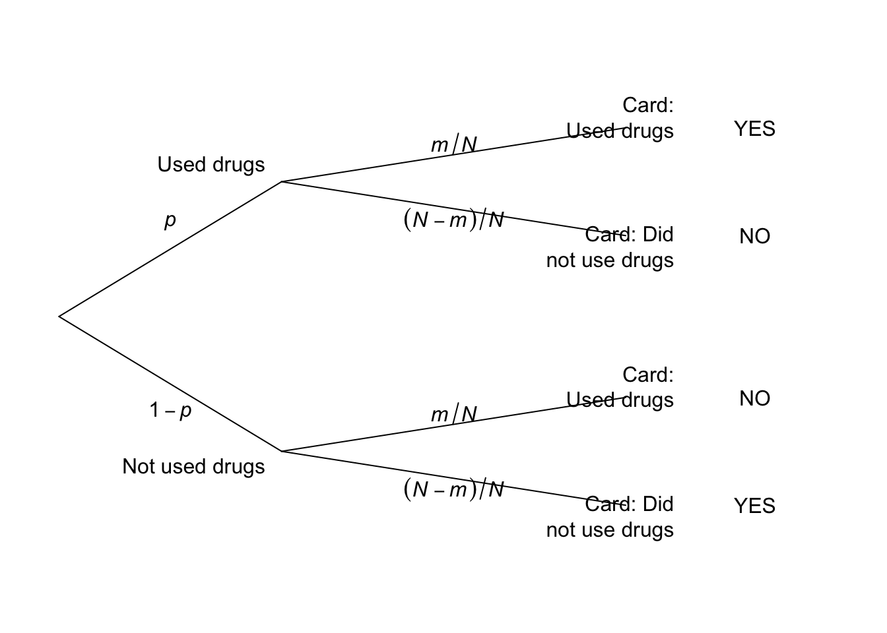
FIGURE F.4: The tree diagram.
Exercise 3.17. Use Theorem 3.3 to find \(\Pr(C)\) where \(C = \text{select correct answer}\), \(K = \text{student knows answer}\). Then, \(\Pr(C) = (mp + q)/m\).
Exercise 3.18.
- \(\Pr(W)\) means ‘the probability of a win’. \(\Pr(W \mid D^c)\) means ‘the probability of a win, given the game was not a draw’.
- \(\Pr(W) = 91/208 = 0.4375\). \(\Pr(W\mid D^c) = 91/(208 - 50) = 0.5759494\).
Exercise 3.19. Write \(d\) as the distance; then \(S = \{d: 0 \le d \le \sqrt{2}\}\). For the grid, let’s use R to find what values are possible:
x <- y <- seq(0, 1, by = 0.25)
distances <- outer(x, y, function(x, y){sqrt(x^2 + y^2)})
unique(sort(distances))
#> [1] 0.0000000 0.2500000 0.3535534 0.5000000 0.5590170 0.7071068
#> [7] 0.7500000 0.7905694 0.9013878 1.0000000 1.0307764 1.0606602
#> [13] 1.1180340 1.2500000 1.4142136There are 15 possible values for the distance:
- \(0\), \(0.25\), \(0.50\), \(0.75\) and \(1\) along grid lines;
- \(\sqrt{2}/4\), \(\sqrt{5}/4\), \(\sqrt{10}/4\) and \(\sqrt{17}/4\) when the line is moved one grid-square right;
- \(\sqrt{13}/4\) and \(\sqrt{20}/4\) when the line is moved two grid-squares right;
- \(\sqrt{25}/4\) when the line is moved three grid-squares right;
and so on.
Exercise 3.20.
- Anywhere between \(0\)% and \(8\)%.
- \(0.06/0.30 = 0.20\).
- \(0.06/0.08 = 0.75\).
Exercise 3.21. The total number of children: \(69\,279\). Define \(N\) as ‘a first-nations student’, \(F\) as ‘a female student’, and \(G\) as ‘attends a government school’.
- \((2540 + 2734 + 391 + 362) / 69,279 \approx 0.0870\).
- \(49,067/69,279 \approx 0.708\).
- Females: prob FN: \(0.107\); Males: prob FN: \(0.108\); close to independent.
- Females: prob FN: \(0.040\); Males: prob FN: \(0.035\); close to independent.
- Gov: prob FN: \(0.107\); NGov: prob FN: \(0.040\); not independent.
- Gov: prob FN: \(0.108\); NGov: prob FN: \(0.035\); not independent.
- Regardless of sex, First Nations children more likely to be at government school.
Exercise 3.22.
- The probability depends on what happens with the first card: \[\begin{align*} \Pr(\text{Ace second}) &= \Pr(\text{Ace, then Ace}) + \Pr(\text{Non-Ace, then Ace})\\ &= \left(\frac{4}{52}\times \frac{3}{51}\right) + \left(\frac{48}{52}\times \frac{4}{51}\right) \\ &= \frac{204}{52\times 51} \approx 0.07843. \end{align*}\] You can use a tree diagram, for example.
- Be careful: \[\begin{align*} &\Pr(\text{1st card lower rank than second card})\\ &= \Pr(\text{2nd card a K}) \times \Pr(\text{1st card from Q to Ace}) + \qquad \Pr(\text{2nd card a Q}) \times \Pr(\text{1st card from J to Ace}) +{}\\ &\qquad \Pr(\text{2nd card a J}) \times \Pr(\text{1st card from 10 to Ace}) + \dots + \qquad \Pr(\text{2nd card a 2}) \times \Pr(\text{1st card an Ace}) \\ &= \frac{4}{51} \times \frac{12\times 4}{52} + {} \qquad \frac{4}{51} \times \frac{11\times 4}{52} + \qquad \frac{4}{51} \times \frac{10\times 4}{52} + \dots + \qquad \frac{4}{51} \times \frac{1\times 4}{52} s= \frac{4}{51}\frac{4}{52}\left[ 12 + 11 + 10 + \cdots + 1\right]\\ &= \frac{4}{51}\frac{4}{52} \frac{13\times 12}{2} \approx 0.4705882. \end{align*}\]
- We can select any of the \(52\) cards to begin. Then, there are four cards higher and four lower, so a total of $16 options for the second card, a total of \(52\times 16 = 832\) ways it can happen. The number of ways of getting two cards is \(52\times 51 = 2652\), so the probability is \(832/2652 \approx 0.3137\).
Exercise 3.23. TBA.
Exercise 3.24. \(x = 0.05\).
Exercise 3.26. \[\begin{align*} 12\times {}^7P_k &= 7\times {}^6P_{k + 1} \\ 12\times \frac{7!}{(7 - k)!} &= 7\times\frac{6!}{(5 - k)!}\\ \frac{12}{(7 - k)!} &= \frac{1}{(5 - k)!}\\ \frac{12}{(7 - k)\times (6 - k)\times (5 - k)!} &= \frac{1}{(5 - k)!}\\ 12 &= (7 - k)(6 - k)\\ k^2 - 13k + 30 &= 0\\ (k - 10)(k - 3) &= 0 \end{align*}\] and so \(k = 10\) or \(k = 3\). But if \(k = 10\), we get silly things like \(P^7_{10}\); the solution must be \(k = 3\).
for (k in (1:5)){ # Answer must e less than 6
cat("FOR k = ", k, ":")
cat("LHS =", 12 * factorial(7) / factorial(7 - k), "; ")
cat("RHS =", 7 * factorial(6) / factorial(5 - k), "\n")
}
#> FOR k = 1 :LHS = 84 ; RHS = 210
#> FOR k = 2 :LHS = 504 ; RHS = 840
#> FOR k = 3 :LHS = 2520 ; RHS = 2520
#> FOR k = 4 :LHS = 10080 ; RHS = 5040
#> FOR k = 5 :LHS = 30240 ; RHS = 5040Exercise 3.27. \[\begin{align*} \frac{ {}^7 P_{r + 1}}{ {}^{7}C_r} &= \frac{7!}{(7 - (r + 1))!} \times \frac{(7 - r)!\, r!}{7!}\\ &= \frac{7!}{(6 - r)!} \times \frac{(7 - r)!\, r!}{7!}\\ &= \frac{(7 - r)!\, r!}{(6 - r)!}\\ &= \frac{(7 - r)\times (6 - r)!\, r!}{(6 - r)!}\\ &= (7 - r) r!\\ &= 10. \end{align*}\] Rewrite: \(r! = 10/(7 - r)\). Since \(r!\) is a positive integer, \(r\) must be either \(r = 2\) or \(r = 5\). Trying both, clearly \(r = 2\).
Exercise 3.28.
Proceed: \[\begin{align*} \Pr(\text{at least two same birthday}) &= 1 - \Pr(\text{no two birthdays same}) \\ &= 1 - \Pr(\text{every birthday different}) \\ &= 1 - \left(\frac{365}{365}\right) \times \left(\frac{364}{365}\right) \times \left(\frac{363}{365}\right) \times \cdots \times \left(\frac{365 - n + 1}{365}\right)\\ &= 1 - \left(\frac{1}{365}\right)^{n} \times (365\times 364 \times\cdots (365 - n + 1) ) \end{align*}\]
Graph the relationship for various values of \(N\) (from \(2\) to \(60\)), using the above form to compute the probability.
No answer (yet).
Birthdays are independent and randomly occur through the year (i.e., each day is equally likely).
N <- 2:80
probs <- array( dim = length(N) )
for (i in 1:length(N)){
probs[i] <- 1 - prod( (365 - (1:N[i]) + 1)/365 )
}
plot( probs ~ N,
type = "l", lwd = 3, las = 1,
ylab = "Prob. at least two share b'day",
xlab = expression(Group~size~italic(N)))
FIGURE F.5: Question 1
Exercise 3.29.
set.seed(981686)
numberSimulations <- 5000
anyConsecutive <- 0
for (i in (1:numberSimulations)){
# Find the six numbers
theNumbers <- sample(1:45,
size = 6,
replace = FALSE)
theNumbers <- sort(theNumbers)
if (any( diff(theNumbers) == 1 )){
anyConsecutive <- anyConsecutive + 1
}
}
cat("Number with consecutive values",
anyConsecutive,"\n")
#> Number with consecutive values 2691
cat("Proportion with consecutive values",
round(anyConsecutive/numberSimulations, 3), "\n")
#> Proportion with consecutive values 0.538
cat("Proportion WITHOUT consecutive values",
round(1 - anyConsecutive/numberSimulations, 3), "\n")
#> Proportion WITHOUT consecutive values 0.462Exercise 3.25. \(\Pr( A^c \cap B^c) = 0.5\) (using, for example, a two-way table). \(A\) and \(B\) are not independent.
Exercise 3.30. \(7\times 3\times 2 = 42\).
Exercise 3.31. \(10\times 10\times 10\times 26\times 26\times 10 = 6\ 760\ 000\).
Exercise 3.32. Order is not important, so combinations are relevant. There are \(\binom{52}{5} = 2\,598\,960\) ways to get five cards from \(52\) (without replacement).
- Pick the denomination: \(13\) to select from. We need two of those \(4\) cards: \(13\times \binom{4}{2}\). Now the other three cards are drawn from the other \(12\) denominations: \(\binom{12}{3}\). There are also \(4\) ways to choose the suit of each of those \(3\) cards. All up then: the number of ways is \(13\times\binom{4}{2}\times\binom{12}{3}\times 4^3 = 1\,098\,240\). The probability is therefore \(1\,098\,240/2\,598\,960 = 0.422569\). TAKE THE THREE OF A KIND AND FOUR OF A KIND!!
- There are \(4\) suits each with \(4\) picture cards, so \(16\) picture cards in total. We want to select five picture cards from \(52\) cards, without replacement: \(^{16}C_5 = 4\,368\) ways to do this. So the probability is \(4\,368\ 160/^{52}C_5 = 0.0017\).
Exercise 3.34. \(\binom{25}{8}/\binom{26}{6} = (25!\, 6!\, 19!)/(8!\,17!\,25!) = 171/28 \approx 6.107\).
Exercise 3.35. No answer (yet).
Exercise 3.36. The key: \(P\) must lie on a semi-circle with diameter \(AB\).
Exercise 3.39.
set.seed(123)
roll_die <- function(die, n) sample(die, n, replace = TRUE)
n <- 1e6
A <- c(2, 2, 4, 4, 9, 9)
B <- c(1, 1, 6, 6, 8, 8)
C <- c(3, 3, 5, 5, 7, 7)
# Simulate rolls
A_rolls <- roll_die(A, n)
B_rolls <- roll_die(B, n)
C_rolls <- roll_die(C, n)
# Compute win probabilities
p_A_beats_B <- mean(A_rolls > B_rolls)
p_B_beats_C <- mean(B_rolls > C_rolls)
p_C_beats_A <- mean(C_rolls > A_rolls)
c(
"P(A > B)" = p_A_beats_B,
"P(B > C)" = p_B_beats_C,
"P(C > A)" = p_C_beats_A
)
#> P(A > B) P(B > C) P(C > A)
#> 0.555105 0.555608 0.555870Exercise 3.40. TBA.
Exercise 3.41.
- Generate a random sequence of length \(1000\) of the digits \(1\), \(2\) and \(3\) to represent which door is hiding the car on each of \(1000\) nights.
- Generate another such sequence to represent the contestants first choice on each of the \(1000\) nights (assumed chosen at random).
- The number of times the numbers in the two lists of random numbers do agree represents the number of times the contestant will win if the contestant doesn’t change doors. If the numbers in the two columns don’t agree then the contestant will win only if the contestant decides to change doors.
Recall that the host selects a door that he or she knows does not contains the car.
- Generate a random sequence of length \(1000\) of the digits \(1\), \(2\) and \(3\) to represent which door is hiding the car on each of \(1000\) nights.
- Generate another such sequence to represent the contestants first choice on each of the \(1000\) nights (assumed chosen at random).
- The host then opens a door not chosen by the contestant, that does not contain the car.
- The contestant then select from one of the unopened doors.
- The number of times the numbers in the two lists of random numbers do agree represents the number of times the contestant will win if the contestant doesn’t change doors. If the numbers in the two columns don’t agree then the contestant will win only if the contestant decides to change doors.
set.seed(93671) # For reproducibility
num_Reps <- 1000 # Number of simulations
# Initialize counters
Win_By_Switching <- 0
Win_By_Staying <- 0
for (i in 1:num_Reps) {
# Step 1: Randomly place the car
Car_Door <- sample(1:3, 1)
# Step 2: CONTESTANT makes an initial choice
First_Choice <- sample(1:3, size = 1)
# Step 3: HOST then chooses to open a goat door and show contestant.
# Host chooses door *not* picked by contestant, or door *not* hiding car
Possible_Reveals <- setdiff(1:3, c(First_Choice, Car_Door))
# So Host may now have one or two options of door to open
if (length(Possible_Reveals) == 1) {
# With one option... just take it
Host_Reveal <- Possible_Reveals
}
if (length(Possible_Reveals) == 2) {
# With two options, select one
Host_Reveal <- setdiff(1:3, First_Choice)
}
# Step 4: CONTESTANT may decide to switch to the other unopened door
Remaining_Door <- setdiff(1:3, c(First_Choice, Host_Reveal))
Switch_Choice <- Remaining_Door
# Step 5: Check win conditions
if (First_Choice == Car_Door) {
Win_By_Staying <- Win_By_Staying + 1
} else {
if (Switch_Choice == Car_Door) {
Win_By_Switching <- Win_By_Switching + 1
}
}
}
# Results
c(Win_By_Staying, Win_By_Switching) / num_Reps
#> [1] 0.336 0.664Exercise 3.42. First, set up the scenario:
set.seed(8091) # For reproducibility
num_Reps <- 50000 # Number of replications (i.e., simulated days)
daily_Patients <- 20 # Number of patients per dayThen we create an R function to simulate what happens on a day, for any given no-show probability:
# Create an R function to simulate what happens on a day
simulate_Day <- function(no_Show_Prob = 0.15, # No-show probability
num_Patients = 20, # Number of patients per day
patient_Limit = 15) { # More than this many: clinic late
# Allocate a random number between 0 and 1 to each patient
patient_Probs <- runif( num_Patients)
# sum() works, because TRUE = 1, and FALSE = 0
number_No_Shows <- sum( patient_Probs < no_Show_Prob )
running_Late <- ( (num_Patients - number_No_Shows) > patient_Limit)
# TRUE means clinic will run late. FALSE means clinic will NOT run late
return(running_Late)
}Then run the simulation for the various no-show probabilities:
# Declare the no-show probabilities to use
no_Show_Probs <- seq(0.0, 0.15, by = 0.01)
# Find the mean of the TRUE and FALSE values returned.
# This works because R treats TRUE as 1, FALSE as 0
prob_Day_Is_Late <- numeric(length(no_Show_Probs)) # Empty vector
for (i in (1:length(no_Show_Probs)) ){ # For each probability:
num_Days_Run_Late <- sum(replicate(num_Reps,
simulate_Day(no_Show_Probs[i]) ) )
prob_Day_Is_Late[i] <- num_Days_Run_Late / num_Reps
}The results then can be printed (and plotted; see Fig. F.6):
round(prob_Day_Is_Late, 4)
#> [1] 1.0000 1.0000 0.9999 0.9998 0.9989 0.9974 0.9945 0.9891
#> [9] 0.9821 0.9706 0.9567 0.9385 0.9180 0.8916 0.8595 0.8307
plot(prob_Day_Is_Late ~ no_Show_Probs,
type = "b", # Plot "both" lines and points
las = 1, # Make axis labels horizontal
lwd = 2, # Line width of 2
xlab = "Probability that a patient is a no-show",
ylab = "Probability that clinic runs late")Clearly, the greater the no-show probability, the smaller the chance of running late (as expected).

FIGURE F.6: A simulations that shows the probability that a day at a medical clinic runs late.
We could also change the number of patients scheduled each day to see what the impact is (e.g., \(18\) or
\(25\) patients).
Exercise 3.43.
# 'Make' the deck of cards.
# Note: the denomination is not important, just the suit
Deck <- c(rep("Hearts", 13), # 13 cards of each suit
rep("Diamonds", 13),
rep("Clubs", 13),
rep("Spades", 13))
set.seed(12043) # For reproducibility
num_Reps <- 5000 # Number of replications to useThen we simulate numerous hands of \(5\) cards using replicate().
# Each replication goes into a column of Hands
Hands <- replicate(num_Reps, sample(Deck, # Sample from the Deck
size = 5, # Hand of *five* cards
replace = FALSE) ) # Without replacement
Hands[, 1:4] # Show the first four columns; each column is a hand of five cards
#> [,1] [,2] [,3] [,4]
#> [1,] "Clubs" "Spades" "Diamonds" "Clubs"
#> [2,] "Diamonds" "Spades" "Hearts" "Hearts"
#> [3,] "Spades" "Diamonds" "Diamonds" "Spades"
#> [4,] "Hearts" "Diamonds" "Diamonds" "Hearts"
#> [5,] "Diamonds" "Diamonds" "Clubs" "Spades"Then count the number of Hearts in each Hand (i.e., in each column):
# For each Hand (i.e., column), count how many Hearts
num_Hearts <- colSums(Hands == "Hearts")
# Show the count of Hearts in those first four hands:
num_Hearts[1 : 4]
#> [1] 1 0 1 2Then determine how many of these Hands have at least three hearts:
# Count how many have *at least 3* hearts
head(num_Hearts >= 3) # Show the results from the first few simulations
#> [1] FALSE FALSE FALSE FALSE FALSE FALSE
at_Least_3_Hearts <- sum( num_Hearts >= 3 ) Then estimate the probability, and print the result:
# Compute the *probability* of at least three Hearts
prob_At_Least_3_Hearts <- at_Least_3_Hearts / num_Reps
# Print the (rounded) results (where "\n" means to start a new line)
cat("The prob. estimate is",
round( mean(prob_At_Least_3_Hearts),
4), "\n") # Round to four decimal places
#> The prob. estimate is 0.0978This is close to what we computed using theory. A more precise estimate would be found using a larger number of simulations.
F.3 Answers for Chap. 4
Exercise 4.1.
- \(R_X = \{X \mid x \in (0, 1, 2) \}\); discrete.
- \(R_X = \{X \mid x \in (1, 2, 3\dots) \}\); discrete.
- \(R_X = \{X \mid x \in (0, \infty) \}\); continuous.
- \(R_X = \{X \mid x \in (0, \infty) \}\); continuous.
Exercise 4.2.
- \(R_X = \{X \mid x \in (0, 1, 2, \dots) \}\); discrete.
- \(R_X = \{X \mid x \in (0, 1, 2, \dots) \}\); discrete.
- \(R_X = \{X \mid x \in (0, \infty) \}\); continuous.
- \(R_X = \{X \mid x \in [0, \infty) \}\); mixed.
Exercise 4.5.
- The sum of all probabilities is one; none are negative: valid.
- Fig. F.7, top left panel.
- Fig. F.7, top right panel: \(\displaystyle F_X(x) = \begin{cases} 0 & \text{for $x < 10$};\\ 0.3 & \text{for $10 \le x < 15$};\\ 0.5 & \text{for $15 \le x < 20$};\\ 1 & \text{for $x \ge 20$}. \end{cases}\)
- Fig. F.7, bottom left panel: \(\displaystyle F_X(x) = \begin{cases} 1 & \text{for $x < 10$};\\ 0.7 & \text{for $10 \le x < 15$};\\ 0.5 & \text{for $15 \le x < 20$};\\ 1 & \text{for $x \ge 20$}. \end{cases}\)
- \(\Pr(X > 13) = 1 - F_X(13) = 0.7\).
- \(\Pr(X \le 10 \mid X\le 15) = \Pr(X \le 10) / \Pr(X \le 15) = F_X(10)/F_X(15) = 0.3/0.5 = 0.6\).
- Fig. F.7, bottom right panel: Fig. F.7, bottom left panel: \(\displaystyle F_X(x) = \begin{cases} 10 & \text{for $0 < p \le 0.3$};\\ 15 & \text{for $0.3 < x \le 0.5$};\\ 20 & \text{for $0.5 < x \le 1$}. \end{cases}\)

FIGURE F.7: PMF and DF.
Exercise 4.6.
- All probabilities are non-negative. Also: \(\sum_{x=0}^\infty p_X(x) = \frac{1}{2} + \frac{1}{2}\left(\frac{1}{2}\right) + \frac{1}{2}\left(\frac{1}{2}\right)^2 + \frac{1}{2}\left(\frac{1}{2}\right)^3 + \cdots\). Using Equation (B.5)), with \(a = 1/2\) and \(r = 1/2\), the sum of this series is \(\sum_{x=0}^\infty p_X(x) = 1\). \(p_X(s)\) is a valid PDF.
- Fig. F.8, top left panel:
- Fig. F.8, top right panel. \(\displaystyle F_X(x) = \begin{cases} 0 & \text{for $x < 1$};\\ 1 - 2^{-\lfloor x\rfloor} & \text{for $x \ge 1$}. \end{cases}\)
- Fig. F.8, bottom left panel: \(\displaystyle F_X(x) = \begin{cases} 1 & \text{for $x < 1$};\\ 2^{-\lfloor x\rfloor} & \text{for $x \ge 1$}. \end{cases}\)
- \(\Pr(X < 4) = 2^{-1} + 2^{-2} + 2^{-3} = 0.875\).
- \(\Pr(X\le 2\mid X\le 5) = \Pr(X\le 2)/\Pr(X\le 5) = (3/4)/(31/31) = 24/31 \approx 0.7742\)
- \(Q_X(p) = \lceil -\log_2(1 - p)\rceil\) for \(0 < p < 1\). See Fig. F.8, bottom right panel.

FIGURE F.8: PMF and DF.
Exercise 4.7.

FIGURE F.9: The DF for \(X\).
Exercise 4.8.
- \(\alpha = 2/15\).
- Fig. F.10, top left panel.
- Fig. F.10, top right panel: \(\displaystyle F_Z(z) = \begin{cases} 0 & \text{for $z \le -1$};\\ 6z/15 - z^2/15 + 7/15 & \text{for $-1 < z < 2$};\\ 1 & \text{for $z \ge 2$}. \end{cases}\)
- Fig. F.10, bottom left panel: \(\displaystyle S_Z(z) = \begin{cases} 1 & \text{for $z \le -1$};\\ 81/5 - 6z/15 + z^2/15 & \text{for $-1 < z < 2$};\\ 0 & \text{for $z \ge 2$}. \end{cases}\)
- \(\Pr(Z < 0) = F_Z(0) = 7/15 \approx 0.4666\).
- Fig. F.10, bottom right panel: \(\displaystyle Q_Z(z) = (6 - \sqrt{64 - 60p})/2\) for \(0\le p\le 1\).

FIGURE F.10: The DF for \(Z\).
Exercise 4.9.
- Fig. F.11, top left.
- Fig. F.11, top right: \(F_Y(y) = 0\) for \(y < 0\); \(F_Y(y) = \sqrt{y+1} - 1\) for \(0\le y < 3\); \(F_Y(y) = 1\) for \(y\ge 3\).
- Fig. F.11, bottom left: \(S_Y(y) = 1 - F_Y(y) = 2 - \sqrt{y + 1}\) for \(0\le y < 3\).
- ????
- Fig. F.11, bottom right: \(Q_Y(p) = (1 + p)^2 - 1\) for \(0 < p < 1\).
- ????
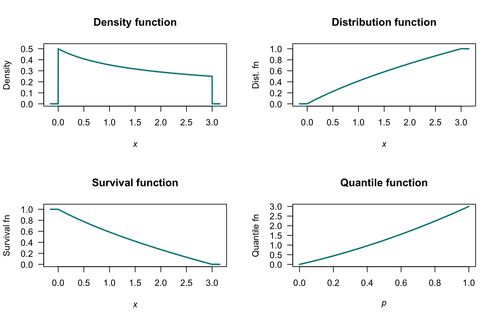
FIGURE F.11: The PDF and DF for \(Y\).
Exercise 4.10.
- See Fig. F.12 (top left panel).
- \(F_X(x) = 0\) for \(x \le -2\); \(F_x(x) = (x^3 +48x + 104)/153\) for \(-2 < x < 1\); \(F_X(x) = 1\) for \(x \ge 1\). See Fig. F.12 (top right panel).
- \(S_X(x) = 1 - F_X(x)0\). See Fig. F.12 (bottom left panel).
- \(F_x(3) = 28/63 = 4/9 \approx 0.4444\).
- See Fig. F.12 (bottom left panel): \(Q_X(p)\) is the unique root of \(x^3 + 48x + (104 - 153p) = 0\). \(Q_X(0)\): need to solve \(x^3 + 48x + 104 = 0\); trying \(x = -2\) shows thi sis a root: correct. \(Q_X(1)\): need to solve \(x^3 + 48x - 49 = 0\); trying \(x = 1\) shows this is a root: correct.
- Solve \(Q_X(0.5)\): \(x \approx -0.57\) solving numerically.
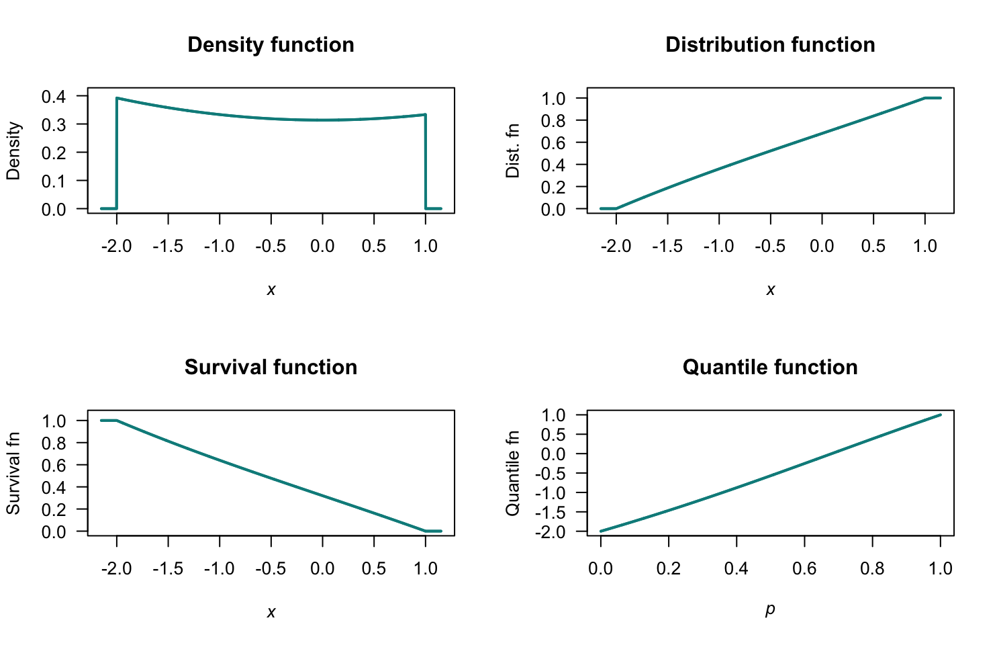
FIGURE F.12: The PDF and DF for \(X\).
Exercise 4.11.
- \(f_T(t) = t + 1\text{\ for $-1 <\le t < 0$}; 1 - t\text{\ for $0\le t \le 1$}\).
- \(F_T(t) = 0\text{\ for $t < -1$}; (t + 1)^2/2 \text{\ for $-1\le t < 0$}; (1 _ 2t - t^2)/2\text{\ for $0 <\le t < 1$}; 1\text{\ for $t \ge 1$}\).
- \(S_T(t) = 1 - F_T(t)\).
- \(Q(p) = 2\sqrt{p} - 1\text{\ for $0 \le p < 1$}; 1 - \sqrt{2 - 2p}\text{\ for $0.5\le p \le 1$}\).
Exercise 4.12.
- \(a = 2/3\) so \(f_Z(z) = 2(1 - z)/3\text{\ for $0 <\le z < 1$}; (z - 2)/3\text{\ for $2\le z \le 4$}\).
- \(F_Z(z) = 0\text{\ for $z < 0$}; 1/3\text{\ for $1<z<2$}; (2z - z^2)/3 \text{\ for $2\le z < 4$}; 1\text{\ for $t \ge 4$}\).
- \(S_T(t) = 1 - F_T(t)\).
- \(Q(p) = 1 - \sqrt{1 - 3p}\text{\ for $0 \le p < 1/3$}; 1/3\text{\ for $1\le p \le 2$}; 2 + \sqrt{6p - 2}\text{\ for $1/3\le p \le 1$}\).
Exercise 4.15.
- \(F_X(x) = 1 -cos(x)\) for \(-\infty < x < \infty\).
- \(S_X(x) = \cos(x)\) for \(-\infty<x<\infty\).
- \(Q_X(p) = \arccos(1 - p)\) for \(0 < p < 1\).
Exercise 4.16.
- \(F_Y(y) = \exp(y)/2 \text{for $y \le 0$}; 1 - \exp(-t)/2 \text{for $y > 0$}\).
- \(S_Y(y) = 1 - \exp(y)/2 \text{for $y \le 0$}; \exp(-t)/2 \text{for $y > 0$}\).
- \(Q_Y(p) = \log(2p) \text{for $0 < p \le 1/2$}; -\log(2(1 - p)) \text{for $<1/2> < p < 1$}\).
Exercise 4.17.
- \(p = 0.5\).
- See below.
- For \(y < 0\), \(F_Y(y) = 0\); for \(y = 0\), \(F_Y(y) = 0.5\); for \(0 < y < 1\), \(F_Y(y) = (1 - y^2 + 2y)/2\); for \(y \ge 1\), \(F_Y(y) = 1\).
- \(1/8\).
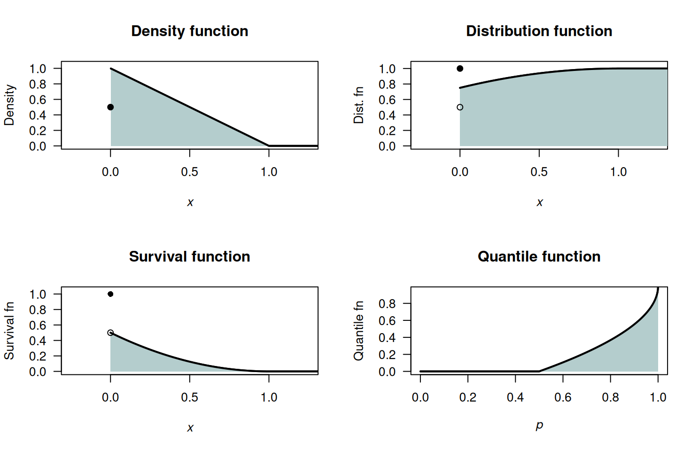
FIGURE F.13: The random variable \(Y\).
Exercise 4.18.
- \(c = 0.25\).
- See below.
- For \(x < 0\), \(F_X(x) = 0\); for \(x = 0\), \(F_X(x) = 0.25\); for \(0 < x \ge 1\), \(F_X(x) = (1 + x^2)/4\); for \(1 < x \ge 3\), \(F_X(x) = (6x - 1 - x^2)/8\); for \(x > 3\), \(F_X(x) = 1\).
- \(1/2\).
Exercise 4.19.
- \(a = \sqrt{3} - 1\).
Exercise 4.20.
- \(c = 3/5\).
Exercise 4.21. \(2^\alpha + 4^\alpha = 1\); let \(x = 2^a\) leading to \(x^2 + x - 1= 0\) and hence \(x = 2^a = (\sqrt{5} - 1)/2\) and \(a = \log_2[\sqrt{5} - 1 / 2)]\approx -0.694\).
Exercise 4.22. Solving for the mass function to give a total area of one gives \(b = -2\). But this produces a negative probability for \(x = -2\), so there is no value for \(b\) which produces a valid probability function.
Exercise 4.3. \(a = 2/3\).
Exercise 4.4. \(a = 2/\sqrt{2 + \pi}\approx 0.8820\).
Exercise 4.23.
- \(\displaystyle p_W(w) = \begin{cases} 0.3 & \text{for $w = 10$};\\ 0.4 & \text{for $w = 20$};\\ 0.2 & \text{for $w = 30$};\\ 0.1 & \text{for $w = 40$}. \end{cases}\)
- \(\Pr(W < 25) = 0.7\).
Exercise 4.24.
- \(f_Y(y) = (4/3) - y^2\) for \(0 < y < 1\).
- \(\Pr(Y < 0.5) = 0.625\).
fy <- function(y){
PDFy <- array(0, dim = length(y))
PDFy <- ifelse( (y > 0) & (y < 1),
(4/3) - y^2,
0)
PDFy
}
plotContinuous(pdf_fn = fy,
type = "PDF",
lwd = 3,
col = ColourLight,
showx = c(-0.25, 1.25) )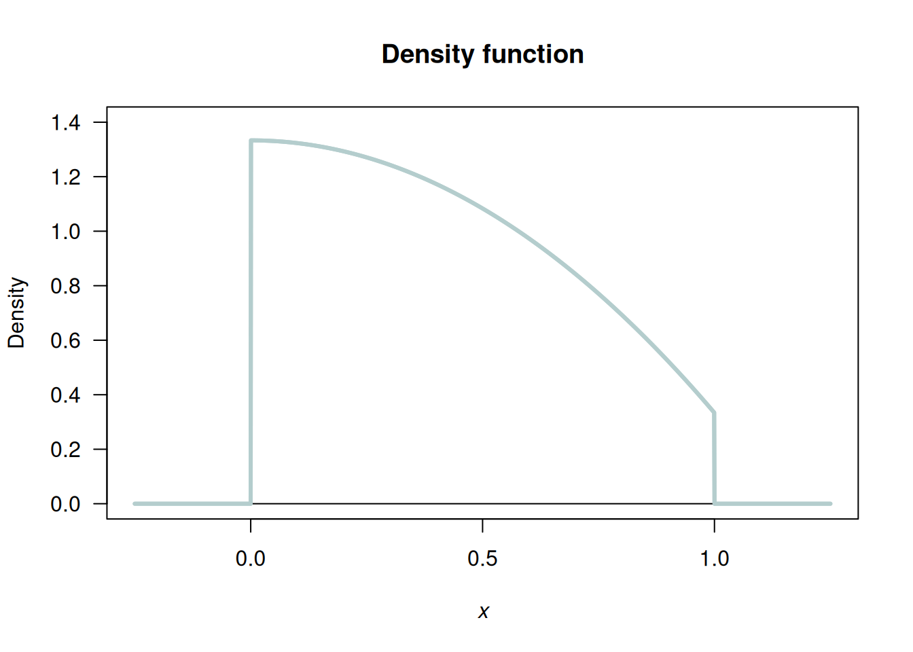
FIGURE F.14: A PDF.
Exercise 4.25.
- Easiest to draw, and see that this represents a triangular distribution, and find the area of the said triangle. Integration can be used though.
- PDF: \[\begin{align*} f_X(x) &= \begin{cases} \frac{2}{8.8\times 4.4} (x - 0.6) & \text{for $0.6 < x < 5$};\\ \frac{2}{8.8\times 4.4} (9.4 - x) & \text{for $5 < x < 9.4$} \end{cases}\\ &= \begin{cases} \frac{2}{38.72} (x - 0.6) & \text{for $0.6 < x < 5$};\\ \frac{2}{38.72} (9.4 - x) & \text{for $5 < x < 9.4$}. \end{cases} \end{align*}\]
- Proceed: \[\begin{align*} F_X(x) &= \begin{cases} 0 & \text{for $x < 0.6$}\\ \int_{0.6}^x \frac{2}{38.72} (t - 0.6) \, dt & \text{for $0.6 \le x < 5$};\\ \int_5^x \frac{2}{38.72} (9.4 - t)\, dt + 0.5 & \text{for $5 \le x < 9.4$}.\\ 1 & \text{for $x \ge 9.4$} \end{cases}\\ &= \begin{cases} 0 & \text{for $x < 0.6$}\\ [(0.6 - x)^2 ]/ 38.72 & \text{for $0.6 \le x < 5$};\\ 1 - [(x - 9.4)^2] / 38.72 & \text{for $5 \le x < 9.4$}.\\ 1 & \text{for $x \ge 9.4$} \end{cases} \end{align*}\]
- See below.
- \(\Pr(X > 3) = 1 - \Pr(X < 3) = 1 - 0.1487603 = 0.8512397\) (or use areas of triangles)
- \(\Pr(X > 3 \mid X > 1) = \Pr(X > 3) / \Pr(X > 1) = 0.8512397 / 0.9958678 = 0.8547718\).
- One is just if \(X\) exceeds 3; the other if \(X\) exceeds 3 if we already know \(X\) has exceeded 1.
f <- function(x){
f <- array( dim = length(x))
f[x < 0.6] <- 0
f[x > 9.4] <- 0
xSmall <- (x >= 0.6) & ( x <= 5)
xLarge <- (x > 5) & (x <= 9.4)
f[xSmall] <- 2 / (8.8 * 4.4) * (x[xSmall] - 0.6)
f[xLarge] <- 2 / (8.8 * 4.4) * (9.4 - x[xLarge] )
f
}
F <- function(x){
FF <- array( dim = length(x))
for (i in (1:length(x))){
FF[i] <- integrate(f, lower = 0.6, upper = x[i])$value
}
FF
}
par(mfrow = c(1, 2))
x <- seq(0, 10,
length = 200)
plot( f(x) ~ x,
type = "l", lwd = 3, las = 1,
main = "PROB fn",
xlab = expression(italic(x)),
ylab = "Prob. fn.")
x <- seq(0, 10,
length = 200)
plot( F(x) ~ x,
type = "l", lwd = 3, las = 1,
main = "DIST fn",
xlab = expression(italic(x)),
ylab = "Dist fn.")
FIGURE F.15: A PDF and DF.
Exercise 4.26. Using the area of triangles, the ‘height’ is \(2/27 \approx 0.07407407\) as below. After some algebra: \[ f_S(s) = \begin{cases} \frac{4}{81}s - \frac{14}{81} & \text{for $3.5 < s < 5$};\\ -\frac{4}{1377}s + \frac{122}{1377} & \text{for $5 < s < 30.5$}. \end{cases} \] Also, \[ F_S(s) = \begin{cases} 0 & \text{for $s < 3.5$};\\ \frac{(7 - 2s)^2}{162} & \text{for $3.5 < s < 5$};\\ \frac{2}{1377} (s^2 - 61s + 280) & \text{for $5 < s < 30.5$};\\ 1 & \text{for $s > 30.5$}. \end{cases} \] Then, \(\Pr(S > 20 \mid S > 10) = \Pr( (S > 20) \cap (S > 10) )/\Pr(S > 10) = \Pr(S > 20)/\Pr(S > 10) = 0.1601311 / 0.6103854\). This is about \(0.2623\).

FIGURE F.16: A PDF and DF.
Exercise 4.27.
- Producers usually need that they will receive at least a certain amount of rainfall.
- A very poor graph below; I really have to fix that.
- Six months have recorded over \(60\,\text{mm}\); so \(6/81\). But taking half of the previous ‘40 to under 60’ category, we’d get \(12/81\). So somewhere around there.
- In June, there are \(81\) observations, so the median is the \(41st\): The median rainfall is between \(0\) to under \(20\,\text{mm}\). In December, there are \(80\) observations, so the median is the \(40.5\)th: The median rainfall is between \(0\) to under \(60\,\text{mm}\).
- Median; very skewed to the right.
- See below.
#> Buckets Jun Dec
#> [1,] "Zero" "3" "0"
#> [2,] "0 < R < 20" "41" "17"
#> [3,] "20 <= R < 40" "19" "17"
#> [4,] "40 <= R < 60" "12" "21"
#> [5,] "60 <= R < 80" "2" "9"
#> [6,] "80 <= R < 100" "2" "6"
#> [7,] "100 <= R < 120" "0" "3"
#> [8,] "120 <= R < 140" "2" "1"
#> [9,] "140 <= R < 160" "0" "4"
#> [10,] "160 <= R < 180" "0" "0"
#> [11,] "180 <= R < 200" "0" "1"
#> [12,] "200 <= R < 220" "0" "1"
FIGURE F.17: Exceedance charts
Answer for Exercise 4.28. If I stand at Position 1; my friend can be at Positions 2 to 5, with distances \(1\), \(2\), \(3\), \(4\). Similar if I stand at Position 5.
If I stand at Position 2; my friend can be at Positions 1, 3 to 5, with distances \(1\), \(1\), \(2\), \(3\). Similar if I stand at Position 4.
If I stand at Position 3; my friend can be at Positions 1, 2, 4, 5, with distances \(1\), \(2\), \(2\), \(1\).
So counting, the PDF for the number of people between us, say \(Y\), is: \[ f_Y(y) = \begin{cases} 4/10 & \text{for $y = 0$};\\ 3/10 & \text{for $y = 1$};\\ 2/10 & \text{for $y = 2$};\\ 1/10 & \text{for $y = 3$}. \end{cases} \] or \(f_Y(y) = (4 - y)/10\) for \(y\in\{0, 1, 2, 3\}\).
Answer for Exercise 4.13.
- \(a\int_0^1 (1 - y)^2\,dy = \left[ (1 - y)^3/3\right]_0^1 = 1/3\).
- \(\Pr(|Y - 1/2| > 1/4) = \Pr(Y > 3/4) + \Pr(Y < 1/4) = 1 - \Pr(1/4 < Y < 3/4) = 13/32\).
- See Fig. F.18.
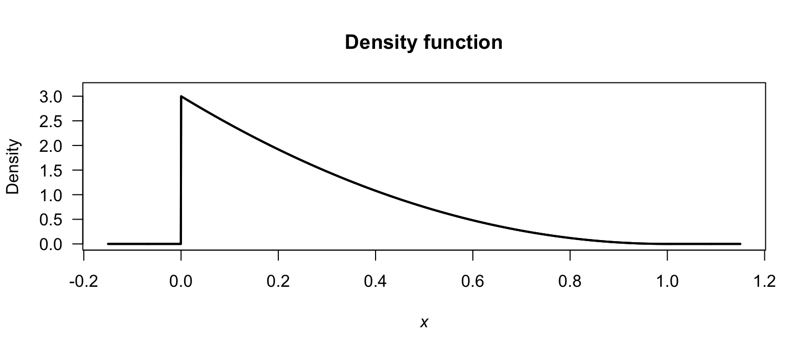
FIGURE F.18: The PDF of \(y\).
Answer for Exercise 4.14. df is: \[ F_Y(y) = \begin{cases} 0 & \text{for $y < 0$};\\ \frac{1}{3}(y - 1)^2 & \text{for $1 < y < 2$};\\ \frac{1}{3}(2y - 3) & \text{for $2 < y < 3$};\\ 1 & \text{for $y \ge 3$.} \end{cases} \] When \(y = 3\), expect \(F_Y(y) = 1\); this is true. When \(y = 1\), expect \(F_Y(y) = 0\); this is true. For all \(y\), \(0 \le F_Y(y) \le 1\).
Answer for Exercise 4.30.
- See that \(X = 1\) (i.e., one pooled test, and all are negative; no further testing needed) or \(X = n + 1\) (the pooled test is positive, so \(n\) individual tests are needed in addition to the pooled test). The sample space is \(\{1, n + 1\}\).
- \(X = 1\) only occurs if the test is negative; that is, \(\Pr(X = 1) = (1 - p)^n\) So: \[ p_X(x) = \begin{cases} (1 - p)^n & \text{for $x = 1$ (i.e., the pooled test is negative)};\\ 1 - (1 - p)^n & \text{for $x = n + 1$ (i.e., individual tests also needed).} \end{cases} \]
Answer for Exercise 4.31. We have cards like: \[ 2, 3, 4, \dots, 8, 9, 10, 10 (J), 10 (Q), 10 (K), 10 (A). \] That is, there are \(20\) cards with a points value of ten (four suits of five cards each). For a ‘distance’ say \(D\), of \(8\), we need \(\Pr[ (2, 10)\ \text{or}\ (10, 2)]\), with probability. \[ \Pr(D = 8) = 2\times \left(\frac{4 \times 20}{52 \times 51}\right). \] For a ‘distance’ of \(7\), we need \[ \Pr((3, 10)\ \text{or}\ (10, 3)) + \Pr((2, 9)\ \text{or}\ (9, 2)), \] with probability \[ \Pr(D = 7) = 2\times\left(\frac{4 \times 20}{52 \times 51}\right) + 2\times\left(\frac{4 \times 4}{52\times 51}\right). \] For a ‘distance’ of \(6\), we need \[ \Pr[(4, 10)\ \text{or}\ (10, 4)] + \Pr[(3, 9)\ \text{or}\ (9, 3)] + \Pr[(2, 8)\ \text{or}\ (8, 2)] \] with probability \[ \Pr(D = 6) = 2\times\left(\frac{4 \times 20}{52 \times 51}\right) + 2\times\left(\frac{4 \times 4}{52\times 51}\right) + 2\times\left(\frac{4 \times 4}{52\times 51}\right). \] So in general, for \(D = 1, 2, \dots 8\): \[ \Pr(D = d) = 2\times\left(\frac{4 \times 20}{52 \times 51}\right) + (8 - d)\times 2\times\left(\frac{4 \times 4}{52 \times 51}\right) \]
The case \(D = 0\) is different. We can compute the probability as \(1\) minus the probabilities from \(D = 1\) to \(D = 8\), or directly. By subtraction:
d <- 1:8
pd <- (2 * 4 * 20)/(52 * 51) + (8 - d) * (2 * 4 * 4)/(52 * 51)
rbind(d, pd)
#> [,1] [,2] [,3] [,4] [,5] [,6]
#> d 1.0000000 2.00000 3.0000000 4.0000000 5.00000000 6.00000000
#> pd 0.1447964 0.13273 0.1206637 0.1085973 0.09653092 0.08446456
#> [,7] [,8]
#> d 7.00000000 8.00000000
#> pd 0.07239819 0.06033183
1 - sum(pd)
#> [1] 0.1794872To proceed directly, see that a ‘distance’ of zero can occur if we get a ‘ten’ and another ‘ten’, or a non-ten card plus the same non-ten card: \[ \Pr(D = 0) = \frac{20 \times 19}{52 \times 51} + \frac{32\times 3}{52\times 51}. \] The answer is the same:
See the PMF in Fig. F.19.

FIGURE F.19: The PDF for the `distance’ between cards.
Answer for Exercise 4.32.
- Write as \(p(x) = \log_{10}(1 + x) - \log_{10}x\); then the sum is \[\begin{align*} (\log_{10}(2) - \log_{10} 1) + (\log_{10} 3 - \log_{10} 2) + (\log_{10} 4 - \log_{10} 3) + \dots\\ + (\log_{10} 9 - \log_{10} 8) + (\log_{10} 10 - \log_{10} 9) \end{align*}\] and things cancel, leaving \(\log_{10}10 = 1\).
- The DF is \[\begin{align*} F_D(d) &= \sum_{i = 1}^d \log[ (1 + d)/ \log(d) ] \\ &= \sum_{i = 1}^d \log(1 + d) - \log d\\ &= (\log 2 - \log 1) + (\log 3 - \log 2) + \log 4 - \log 3) + \cdots\\ & \quad {} + (\log d - \log(d - 1) ) + (\log (1 + d) - \log d)\\ &= \log (1 + d). \end{align*}\]

FIGURE F.20: A PDF and DF.
Answer for Exercise 4.33. \(k = 1/\pi\). \(F(y) = \int_0^x \frac{1}{\pi\sqrt{t(1 - t)}}\, dt = \frac{1}{\pi}\arcsin(2x - 1) + \frac{1}{2}\) for \(0 < x < 1\). \(\Pr(X > 0.25) = 2/3\).

FIGURE F.21: A PDF and DF.
Answer for Exercise 4.34. The PDF is \[ f_X(x) = \frac{d}{dx} \exp(-1/x) = \frac{\exp(-1/x)}{x^2} \] for \(x > 0\). See Fig. F.22.

FIGURE F.22: A PDF and DF.
Answer for Exercise 4.29.
- 1 suit: Select 4 cards from the 13 of that suit, and there are four suits to select.
- 2 suits: There are two scenarios here:
- Three from one suit, and one from another: Choose a suit, and select three cards from it: \(\binom{4}{3}\binom{13}{3}\). Then we need another suit (three choices remain) and one card from (any of the 13).
- Chose two suits, and two cards from each of two suits: \(\binom{4}{2}\binom{13}{2}\binom{13}{2}\)
- 3 suits: Umm…
- 4 suits: Choose one from each of the four suits.
One way to get 3 suits is to realise that the total probability must add to one…
### 1 SUIT
suits1 <- 4 * choose(13, 4) / choose(52, 4)
### 2 SUITS
suits2 <- choose(4, 3) * choose(13, 3) * choose(3, 1) * choose(13, 1) +
choose(4, 2) * choose(13, 2) * choose(13, 2)
suits2 <- suits2 / choose(52, 4)
### 4 SUITS:
suits4 <- choose(13, 1) * choose(13, 1) * choose(13, 1) * choose(13, 1)
suits4 <- suits4 / choose(52, 4)
suits3 <- 1 - suits1 - suits2 - suits4
round( c(suits1, suits2, suits3, suits4), 3)
#> [1] 0.011 0.300 0.584 0.105Answer for Exercise 4.36. I have no idea… From ChatGPT (i.e., haven’t checked) these.
At least four:
# Set the number of simulations
num_simulations <- 100000
# Initialize a vector to store the number of rolls required for each simulation
rolls_required <- numeric(num_simulations)
# Function to simulate rolling a die until the total is 4
simulate_rolls <- function() {
total <- 0
rolls <- 0
while (total < 4) {
roll <- sample(1:6, 1) # Roll the die
total <- total + roll
rolls <- rolls + 1
}
return(rolls)
}
# Perform simulations
for (i in 1:num_simulations) {
rolls_required[i] <- simulate_rolls()
}
# Calculate the PMF
PMF <- table(rolls_required) / num_simulations
# Print the PMF
print(PMF)
# Optionally, plot the PMF
barplot(PMF, main = "Probability Mass Function of Rolls Needed to Sum to 4",
xlab = "Number of Rolls", ylab="Probability")Exactly four:
# Set the number of simulations
num_simulations <- 100000
# Initialize a vector to store the number of rolls required for each simulation
rolls_required <- integer(num_simulations)
# Function to simulate rolling a die until the total is exactly 4
simulate_rolls <- function() {
total <- 0
rolls <- 0
while (total < 4) {
roll <- sample(1:6, 1) # Roll the die
total <- total + roll
rolls <- rolls + 1
if (total > 4) {
return(NA) # Return NA if the total exceeds 4
}
}
return(rolls)
}
# Perform simulations
for (i in 1:num_simulations) {
result <- simulate_rolls()
if (!is.na(result)) {
rolls_required[i] <- result
}
}
# Remove NA values from the results
rolls_required <- na.omit(rolls_required)
# Remove zero values (impossible cases)
rolls_required <- rolls_required[rolls_required > 0]
# Calculate the PMF
PMF <- table(rolls_required) / length(rolls_required)
# Print the PMF
print(PMF)
# Optionally, plot the PMF
barplot(PMF, main = "Probability Mass Function of Rolls Needed to Sum to 4",
xlab = "Number of Rolls", ylab = "Probability")Answer for Exercise 4.37. 1. \(4ab = 1\). 2. \(f_X(x) = (x + 16)/32\) for \(-1 < x < 1\). 3. \(F_X(x) = (x^2 + 32x + 31)/64\) for \(-1 < x < 1\). 4. \(Q_X(p) = -16 + \sqrt{225 + 64 p}\) for \(0 < p < 1\). \(Q_X(0) = -1\) as expected; \(Q_X(1) = 1\) as expected. 5. See Fig. F.23.

FIGURE F.23: PDF, DF and quantile functions.
F.4 Answers for Chap. 5
Answer for Exercise 5.1.
- \(k = -2\).
- See Fig. F.24 (left panel).
- \(\operatorname{E}[Y] = 5/3\).
- \(\operatorname{E}[Y^2] = 17/6\), so \(\operatorname{var}[Y] = 17/6 - (5/3)^2 = 1/18\).
- \(\Pr(X > 1.5) = \int_{1.5}^2 f_Y(y)\, dy = 3/4\).
Answer for Exercise 5.2.
- See Fig. F.24 (right panel).
- \(\operatorname{E}[X] = \int_{-1}^0 2x(x + 1)/3\, dx + \int_{0}^2 x(2 - x)/3\, dx = -\frac{1}{9} + \frac{4}{9} = 1/3\).
- \(\operatorname{E}[X^2] = (1/18) + (4/9) = 9/18 = 1/2\). So \(\operatorname{var}[X] = (1/2) - (1/3)^2 = 7/18\approx 0.38889\).
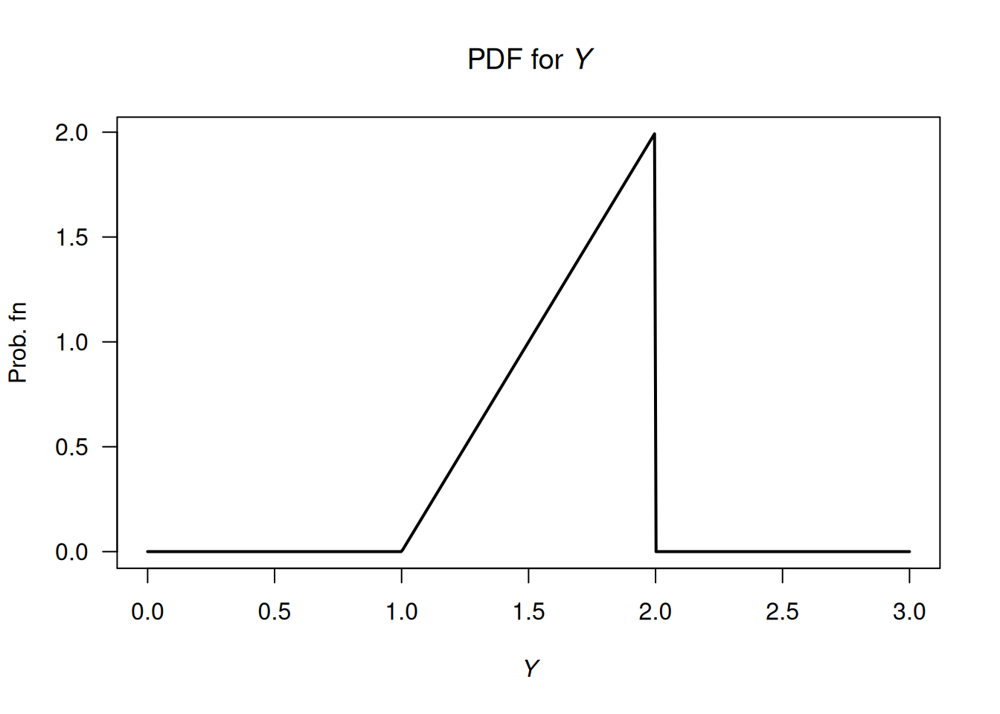
FIGURE F.24: The PDF for \(Y\) (left) and for \(X\) (right).
Exercise 5.3.
- See Fig. F.25 (left panel).
- \(\operatorname{E}[X] = (1/4) + (2/3) = 11/12\).
- \(\operatorname{E}[T^2] = (1/6) + (11/12) = 13/12\). So \(\operatorname{var}[T] = (13/12) - (11/12)^2 = 35/144\approx 0.2431\).
- \(F_T(t) = t/2\) for \(0 < t < 1\); \(F_T(t) = (1/2) - (t - 3)(t - 1)/2\) for \(1 < t < 2\). See Fig. F.25 (right panel).
- \(F_T(t = 1) = 1/2\).

FIGURE F.25: The PDF for \(T\) (left) and DF for \(T\) (right).
Exercise 5.4.
- See Fig. F.26 (left panel).
- \(\operatorname{E}[Z] = (1/6) + (4/3) = 3/2\) as expected.
- \(\operatorname{E}[Z^2] = (1/12) + (43/12) = 15/4\). So \(\operatorname{var}[Z] = (15/4) - (3/2)^2 = 17/12 \approx 1.416\).
- \(F_Z(z) = z(1 - z)/2\) for \(0 < z < 1\); \(F_Z(z) = (z^2 - 4z + 5)/2\) for \(2 < z < 3\); See Fig. F.26 (right panel).
- \(\Pr(Z > 2\mid Z > 1) = \Pr(Z > 2)/\Pr(Z > 1)\). Then, \(\Pr(Z > 2) = 1 - F_Z(z = 2) = 1/2\) and \(\Pr(Z > 2) = 1 - F_Z(z = 2) = 1/2\). Thus, \(\Pr(Z > 2\mid Z > 1) = 1\), which should be obvious from a plot of the PDF.

FIGURE F.26: The PDF for \(Z\) (left) and the DF for \(Z\) (right).
Exercise 5.5. First: \(k = 1/4\).
- Plot not shown.
- \(\operatorname{E}[D] = 7/4 = 1.75\); \(\operatorname{E}[D^2] = 15/4\) so \(\operatorname{var}[D] = 11/16 = 0.6875\).
- \(M_D(t) = \exp(t)/2 + \exp(2t)/4 + \exp(3t)/4\).
- Mean and variance as above.
- \(\Pr(D < 3) = 3/4\).
Exercise 5.6. First, \(c = 144/205\).
- See Fig. F.27 (right panel).
- \(\operatorname{E}[Z] = \frac{144}{205} \sum_{z=1}^4 1/z = 60/41\approx 1.463\). \(\operatorname{E}[Z^2] = \frac{576}{205}\approx 2.810\) and so \(\operatorname{var}[Z] = (576/205) - (60/41)^2 = 5616/8405\approx 0.6682\).
- \(M_Z(t) = \frac{\exp(t)}{205}(36\exp(t) + 16\exp(2t) + 9\exp(3t) + 144)\).
- Mean and variance as above.
- \(\Pr(Z \ge 2) = 1 - \Pr(Z = 1) = 61/205\).

FIGURE F.27: The PMF for \(D\) (left) and the PMF for \(Z\) (right).
Exercise 5.9.
- \(M_Z'(t) = 0.6\exp(t)[0.3\exp(t) + 0.7]\) so \(\operatorname{E}[Z] = 0.6\). Also, \(M''_Z(t) = 0.18\exp(2t) + 0.6\exp(t)[0.3\exp(t) + 0.7]\) so \(\operatorname{E}[Z^2] = 0.78\), so \(\operatorname{var}[Z] = 0.42\) (be careful with the derivatives here!)
- Expand the quadratic and find: \(\Pr(Z = 0) = 0.49\), \(\Pr(Z = 1) = 0.42\), \(\Pr(Z = 2) = 0.09\).
Exercise 5.10.
- \(\operatorname{E}[W] = (1 - p)/p\); \(\operatorname{var}[W] = (1 - p)/p^2\).
- \(p_W(w) = (1 - p)^w\) for \(w = 1, 2, \dots\).
Exercise 10.19.
- \(17\).
- \(5 + 2 + (2\times 0.2) = 7.4\).
- \(14\).
- \((2^2\times 5) + ((-3)^2\times 2) + 2\times(2\times -3\times 0.2) = 35.6\).
Exercise 5.14. \([exp(tb) - \exp(ta)]/[t (b - a)]\) for \(t\ne 0\).
Exercise 5.11.
- \(M'_G(t) = \alpha\beta(1 - \beta t)^{-\alpha - 1}\) so \(\operatorname{E}[G] = \alpha\beta\). \(M''_G(t) = \alpha\beta^2(\alpha + 1)(1 - \beta t)^{-\alpha - 2}\) so \(\operatorname{E}[G^2] = \alpha\beta^2(\alpha + 1)\) and \(\operatorname{var}[G] = \alpha\beta^2\).
Exercise 5.12.
- Proceed: \[ \mu'_r = \operatorname{E}[X^r] = \int_{x = 0}^1 x^r 2(1 - x)\, dx = 2\left[ \left(\frac{x^{r + 1}}{r + 1} - \frac{x^{r + 2}}{r + 2}\right)\right]_{0}^{1} = 2\left[ \frac{1}{r + 1} - \frac{1}{r + 2}\right]. \]
- Expanding, \(\operatorname{E}[(X + 3)^2] = \operatorname{E}[X^2] + 6\operatorname{E}[X] + 9\). Now, \(\operatorname{E}[X] = \mu'_1 = 1/3\) from above, and \(\operatorname{E}[X^2] = \mu'_2 = 1/6\) from above. Hence \(\operatorname{E}[(X + 3)^2] = 67/6\).
- \(\operatorname{var}[X] = \operatorname{E}[X^2] - \operatorname{E}[X]^2 = 1/18\).
Exercise 10.18.
- \(13 + 4 = 17\).
- \(5 + 2 = 7\).
- \((2\times 13) - (3\times 4) = 14\).
- \((2^2\times 5) + (-3)^2\times 2) = 38\).
Answer to Exercise 10.19.
- \(17\).
- \(7.4\).
- \(14\).
- \(35.6\).
Exercise 5.15. \(\left[6\left( (t - 2)\exp(t) + t + 2\right)\right]/t^3\) for \(t\ne 0\).
Exercise 5.16.
- \(\operatorname{E}[Y] = \int_2^\infty y\frac{2}{y^2}\,dy = \left[2\log y\right]_2^\infty\), which does not converge.
- If \(\operatorname{E}[Y]\) is not defined, then \(\operatorname{var}[Y]\) cannot be defined either.
- See Fig. F.28, left panel.
- \(F_Y(y) = \int_2^y 2/t^2\, dt = 1 - (2/y)\); see Fig. F.28, right panel.
- \(F_Y(y) = 0.5\) gives the median as \(4\).
- \(F_Y(y) = 1/4\) gives \(Q_1 = 8/3\); \(F_Y(y) = 3/4\) gives \(Q_3 = 8\); so IQR is \(8 - 8/3 = 16/3\).
- \(\Pr(Y > 4\mid Y > 3) = \Pr(Y > 4)/\Pr(Y > 3)\). Then, \(\Pr(Y > 4) = 1 - \Pr(Y < 4) = 1/2\) using the df; and \(\Pr(Y > 3) = 1 - \Pr(Y < 3) = 2/3\) using the df; so the answer is \(3/4\).

FIGURE F.28: The probability and distribution functions for a distribution with no mean.
Exercise 5.17.

FIGURE F.29: The Cauchy distribution.
Exercise 5.19. Begin with Definition 5.10 for \(M_X(t)\) and use fact that if a distribution is symmetric about \(0\) then \(f_X(x) = f_X(-x)\) using symmetry. Transform the resulting integral.
Exercise 5.20.
- Any real \(a\) satisfies the integral condition. For non-negativity, need \(a \ge -1\) and \(a \le -3\).
- \(\operatorname{E}[X] = (3a + 7)/(3a+6)\), so need \(a = -1\): \(f_X(x) = x/2\) for \(0\le x\le 2\).
Exercise 5.21.
- On solving, find \(a = 1\) or \(a = 1/2\).
- For \(a = 1\), \(\operatorname{E}[X] = 1/2\). For \(a = 1/2\), \(\operatorname{E}[X] = 31/60 > 1/2\), so \(a = 1/2\).
Exercise 5.22. First, the PDF needs to be defined (see Fig. F.30), and define \(W\) as the waiting time. Let \(H\) be the ‘height’ of the triangle. The area of triangle \(A_1\) is \(3H/4\), and the area of triangle \(A_2\) is \(51H/4\), so \(H = 2/27\).
The two lines, \(L_1\) and \(L_2\) can be found (find the slope; determine the linear equation) so that: \[ f_W(w) = \begin{cases} 4w/81 - 14/81 & \text{for $3.5 < w < 5$};\\ -4w/1377 + 122/1377 & \text{for $5 \le w < 30.5$}. \end{cases} \]
- \(\operatorname{E}[W]\) can be computed as usual across the two parts of the PDF: \(\operatorname{E}[W] = \frac{1}{4} + \frac{51}{4} = 13\) minutes.
- \(\operatorname{E}[W^2]\) can be computed in two parts also: \(\operatorname{E}[W^2] = \frac{163}{144} + \frac{29\,699}{144} = 16598/8\). Hence \(\operatorname{var}[Y] = (1659/8) - 13^2 = 307/8\approx 38.375\), so the standard deviation is \(\sqrt{38.375} = 6.19\) minutes.

FIGURE F.30: Waiting times.
Answer for Exercise 5.23. Using the PMF from Exercise 4.28: \[ \operatorname{E}[X] = \left(0\times\frac{4}{10}\right) + \left(1\times\frac{3}{10}\right) + \left(2\times\frac{2}{10}\right) + \left(3\times\frac{1}{10}\right) = 1. \] In R:
Exercise 5.24.
- Show by substituting.
- Proceed: \[ \varphi(t) = \operatorname{E}[\exp(itX)] = \int_{\mathbb{R}} \exp(itx) f(x)\, dx. \] Differentiating wrt \(t\): \[ \varphi(t)' = \int_{\mathbb{R}} ix \exp(itx) f(x)\, dx. \] Setting \(t = 0\): \[ \varphi(0)' = \int_{\mathbb{R}} xi f(x)\, dx, \] and so \(-i\varphi(0) = \operatorname{E}[X]\) as to be shown.
Exercise 5.25.
- \((1 - a)^{-1} = 1 + a + a^2 + a^3 + \dots = \sum_{n=0}^\infty a^n\) for \(|a| < 1\).
- \((1 - tX)^{-1} = 1 + tX + t^2X^2 + t^3X^3 + \dots = \sum_{n=0}^\infty t^n X^n\) for \(|tX| < 1\). Thus: \[\begin{align*} \operatorname{E}\left[ (1 - tX)^{-1}\right] &= \operatorname{E}[1] + \operatorname{E}[tX] + \operatorname{E}[t^2X^2] + \operatorname{E}[t^3X^3] + \dots\\ &= \sum_{n=0}^\infty \operatorname{E}\left[ t^n X^n\right] \quad \text{for $|tX| < 1$}. \end{align*}\]
- Using the definition of an expected value: \[ R_Y(t) = \operatorname{E}\left[ (1 - tY)^{-1} \right] = \int_0^1 \frac{1}{1 - ty}\, dy = -\frac{\log(1 - t)}{t}. \]
- Using the series expansion of \(\log(1 - t)\): \[ \log(1 - t) = -t - \frac{t^2}{2} - \frac{t^3}{3} + \dots \] and so \[ -\frac{\log(1 - t)}{t} = 1 + \frac{t}{2} + \frac{t^2}{3} + \dots. \]
- Equating this expression with that found in Part 2: \[\begin{align*} 1 + \frac{t}{2} + \frac{t^2}{3} + \dots. &= 1 + \operatorname{E}[tY] + \operatorname{E}[t^2 Y^2] + \operatorname{E}[t^3 Y^3] + \dots\\ &= 1 + t \operatorname{E}[Y] + t^2\operatorname{E}[Y^2] + t^3\operatorname{E}[Y^3] + \dots \end{align*}\] and so \[\begin{align*} t \operatorname{E}[Y] &= t/2 \Rightarrow \operatorname{E}[Y] = 1/2;\\ t^2 \operatorname{E}[Y^2] &= t^2/3 \Rightarrow \operatorname{E}[Y^2] = 1/3;\\ t^n \operatorname{E}[Y^n] &= t^n/(n + 1) \Rightarrow \operatorname{E}[Y^n] = 1/(n + 1).\\ \end{align*}\]
Exercise 5.26. First see that the area under the curve must be one, so \[ 1 = \int_{-c}^c k(3x^2 + 4)\, dx = k(2c^3 + 8c). \] Then, note that \(\operatorname{E}[W] = 0\) (as the PDF is symmetric about 0), so that \(\operatorname{var}[X] = \operatorname{E}[X^2]\), and: \[ \operatorname{E}[X^2] = \int_{-c}^c k x^2 (3x^2 + 4)\, dx = k c^3\frac{18c^2 + 40}{15} = \frac{28}{15}, \] and hence, equating the top lines of both fractions: \[ k c^3(9c^2 + 20) = 14. \] So we have two equations in two unknowns. Equating we obtain, after some algebra, \[ 9 c^4 - 8c^2 - 112 = 0. \] This is just a quadratic equation in \(c^2\); so write \[ 9 X^2 - 8X - 112 = (9X + 28)(X - 4) = 0 \] with the two solutions \(X = c^2 = -28/9\) (which has no real solutions for \(c\)), and \(X = c^2 = 4\), so that \(c = 2\) (as the PDF must be positive), giving \(k = 1/32\).
Exercise 5.27. 1. \(c = 1 - 3k/2\) and \(c > 0\) and \(k > 0\). 2. \(c = k = 2/5\). 3. Not possible.
Exercise 5.28. \(k = \infty\).
Exercise 5.29. \(r = 5\).
Exercise 5.30. \(\operatorname{E}[D] = \sum_{d=1}^9 \log_{10}\left(\frac{d + 1}{d}\right) \times d\). By expanding, and collecting like terms, and simplifying (e.g., \(\log_{10} 1 = 0\) and \(\log_{10}10 = 1\)), find \[ \operatorname{E}[D] = -\log_{10}2 - \log_{10}3 - \cdots - \log_{10}8 - \log_{10}9 + 9 \approx 3.440. \]

Exercise 5.33.
- \(\int_c^\infty c/w^3\, dy = 1/(2c)\) and so \(c = 1/2\).
- \(\operatorname{E}[W] = \int_{1/2}^\infty w/(2w^3) \, dy = 1\).
- \(\operatorname{E}[W^2] = \int_{1/2}^\infty w^2/w^3\, dy\) which does not converge; the variance is undefined.
Exercise 5.34.
- \(k > 0\)
- Differentiating: \(f_X(x) = \alpha k^\alpha x^{-\alpha - 1}\).
- \(\operatorname{E}[X] = \alpha k/(\alpha - 1)\). Also, \(\operatorname{E}[X^2] = \alpha k^2/(\alpha - 2)\), and so \(\operatorname{var}[X] = \alpha k^2/[(\alpha - 2)(\alpha - 1)^2]\).
- No answer (yet).
- See below.
- \(\Pr(X > 4 \cap X < 5) = \Pr(4 < X < 5) = F(5) - F(4) = (3/4)^3 - (3/5)^3 = 0.205875\). Also, \(\Pr(X < 5) = 1 - (3/5)^3 = 0.784\). So the prob. is \(0.205875/0.784 = 0.2625957\).
- No answer (yet).

FIGURE F.33: A Pareto distribution
Exercise 5.36.
- \(\operatorname{E}[X] = \sum_{x = 1}^K x. p_X(x) = (1/6) + \sum_{x = 2}^K 1(x - 1)\). \(\operatorname{E}[X^2] = \frac{1}{K} + \sum_{x=2}^K \frac{x}{x - 1}\) with no closed form, so the variance is a PITA. No closed form!
- See Fig. F.34.
- Applying the definition: \[ M_X(t) = \operatorname{E}[\exp(tX)] = \frac{1}{K} + \left( \frac{\exp(2t)}{2\times 1} + \frac{\exp(3t)}{3\times 2} + \frac{\exp(4t)}{4\times 3} + \dots + \frac{\exp(Kt)}{K\times (K - 1)}\right). \]

FIGURE F.34: The Soliton distribution.
Exercise 5.40.
- Since \(M_X(t) = \lambda/(\lambda - t)\), then \(M_X(it) = \lambda/(\lambda - it)\). Then \[\begin{align*} f_X(x) &= \int_{-\infty}^{\infty} M_X(it) ] \exp(-itx)\, dt \\ &= \int_{-\infty}^{\infty} \frac{\lambda}{\lambda - it} (\cos(-tx) + \sin(-tx))\, dt\\ &= \int_{-\infty}^{\infty} \frac{\lambda(\lambda + it)}{\lambda^2 + t^2} (\cos(tx) - \sin(tx))\, dt \\ &= \int_{-\infty}^\lambda \frac{\lambda}{\lambda^2 + t^2} (\lambda\cos(tx) + t\sin(tx))\, dt. \end{align*}\]

FIGURE F.35: The integrand.
Exercise 5.44.
- \(\operatorname{E}[X] = (n + 1) - n (1 - p)^n\).
- \(\operatorname{E}[X^2] = (n + 1)^2 n(n + 2)(1 - p)^n\), so \(\operatorname{var}[X] = n^2(1 - p)^n[ 1 - (1 - p)^n]\).
- As \(p \to 0\) (i.e., no-one has the disease), the expected number of tests is one (with no variation). As \(p \to 1\) (i.e., everyone has the disease), the expected number of tests is five (with no variation).
- Using \(\operatorname{E}[X] > n\), solve to find \(p > 1 - (1/n)^{1/n}\).
- Tests without pooling is \(n\); expected number with pooling: \((n + 1) - n (1 - p)^n\). So the expected number of saved tests is See Fig. F.36.
- With \(n = 4\), the expected number of tests saved is \(4 - (5 - 4(1-p)^4) \approx 1.6244\).
So doing this \(50\) times (i.e., \(50 \times 4 = 200\)) would save \(50\times 1.6244 \times 15 = 1218.3\); about 1220 in cost savings.
\(\Pr(\text{Need individual tests})\) \({}={}\) \(\Pr(\text{Pooled test is positive})\) \({}={}\) \(1 - \Pr(\text{Pooled test is negative})\) \({}={}\) \(1 - \Pr(\text{All individuals are negative})\) \({}={}\) \(1 -(0.9)^ 4 = 0.3439\). So the PMF of \(N\), the number of tests needed, is \[ p_N(n) = \begin{cases} 0.6561 & \text{for $n = 1$ (i.e., pooled test only)};\\ 0.3439 & \text{for $n = 5$ (i.e., one pooled test, olus four individual tests)} \end{cases} \] Then \(\operatorname{E}[X] = (0.6561 \times 1) + (0.3439 \times 5) = 2.3756\) and \(\operatorname{E}[X^2] = (0.6561 \times 1^2) + (0.3439 \times 5^2) = 9.2536\) so that \(\operatorname{var}[X] = 3.610125\). So for a pool of four people, rather than four tests we would expected to have to conduct \(2.3756\) tests, a saving of \(4 - 2.3756 = 1.6244\) tests.
If \(200\) people in total, testing each individual would cost \(200\times 15 = \$3000\). With \(n = 4\), a total of \(50\) pools are created, and each pool saves \(1.6244\) tests, so the total number of tests expected to be saved in \(50 \times 1.6244 = 81.22\); at $15 each, the saving is \(\$1218.30\).

FIGURE F.36: The expected number of tests saved by pooling.

FIGURE F.37: The advantage of initial pooled testing.
Exercise 5.46.
- \(\operatorname{E}[X] = 7/2\).
- \(\operatorname{MAD}[X] = 1.5\).
Exercise 5.49.
- Plot not shown, but a quadratic symmetric about \(x = 0\).
- All odd moments are zero since distribution symmetric: \(\operatorname{E}[X] = 0\). \(\operatorname{var}[X] = \operatorname{E}[X^2] = 3/5\).
- Odd moment, and distribution obviously symmetric; skewness is zero.
- \(\operatorname{E}[X^4] = 3/7\), so kurtosis is \(\mu_4/\mu^2_2 = (3/7)/(3/5)^2 = 25/21\). Hence, the excess kurtosis is \(25/21 - 3 = -38/21\).
- No values in the extreme values like a normal; all values are contained within \(-1 < x < 1\).
Exercise 5.50.
- Plot not shown, but straight line from \((0, 0)\) to \((2, 1)\).
- \(\operatorname{E}[X^r] = 2^{r + 1}/(r + 2)\).
- \(\operatorname{E}[X] = 4/3\); \(\operatorname{var}[X] = 2 - (4/3)^2 = 14/9\).
- \(\operatorname{E}[ (X - \mu)^3] = -8/135\), so skewness is \(\mu_3 / \mu_2^{3/2} = (-8/135)/(14/9)^{3/2} = -2\sqrt{14}/245\). Negative value: left skewed; bulk of probability to the right side.
- \(\operatorname{E}[(X - \mu)^4] = 16/135\), so kurtosis is \(\mu_4/\mu^2_2 = (16/135)/(14/9)^2 = 12/245\). Hence, the excess kurtosis is \(12/245 - 3 = -723/245\) No values in the extreme values like a normal; all values are contained within \(0 < x < 2\).
Exercise 5.51. \(\varphi_X(t) = \exp(-|t|)\).
Exercise 5.52. TBA.
Exercise 5.53. TBA.
Exercise 5.54. TBA.
Exercise 5.55. Let \(D = 1\) if defective (prob \(0.1\)), \(D = 0\) otherwise.
- \(\operatorname{E}[C] = \operatorname{E}[C\mid D=1]\cdot 0.1 + 0 = 100 \times 0.1 = 10\).
- \(\operatorname{E}[\operatorname{var}[C\mid D]] = 0.1 \times \operatorname{var}[\text{Gamma}(2,50)] + 0.9\times 0 = 0.1\times 5000 = 500\); \(\operatorname{var}[\operatorname{E}[C\mid D]] = 0.1\times(100-10)^2 + 0.9\times(0-10)^2 = 810 + 90 = 900\). So \(\operatorname{var}[C] = 1400\).
Exercise 5.56.
- \(\operatorname{E}[F] = (0.15\times 8) + (0.85\times 0) = 1.2\).
- \(\operatorname{E}[\operatorname{var}[F\mid D]] = 0.15\times 25 = 3.75\). \(\operatorname{var}[\operatorname{E}[F\mid D]] = 0.15\times(8 - 1.2)^2 + 0.85\times(0 - 1.2)^2 = 6.936 + 1.224 = 8.16\). \(\operatorname{var}[F] = 11.91\).
Exercise 10.20.
- \(\operatorname{E}[U] = 4 3 = 1\); \(\operatorname{E}[V] = 2 + 6 = 8\).
- \(\operatorname{var}[U] = 4\times4 + 9 - 2\times2\times3 = 16 + 9 - 12 = 13\); \(\operatorname{var}[V] = 4 + 4\times9 + 2\times2\times3 = 4 + 36 + 12 = 52\).
- \(\operatorname{Cov}(U,V) = \operatorname{Cov}(2X-Y, X+2Y) = 2\operatorname{var}[X] + 4\operatorname{Cov}(X,Y) - \operatorname{Cov}(Y,X) - 2\operatorname{var}[Y] = 8+12-3-18 = -1\).
- \(\operatorname{Corr}(U,V) = -1/\sqrt{13\times52} = -1/26\).
Exercise 10.21.
- \(\operatorname{E}[S] = -1 + 12 = 11\); \(\operatorname{E}[T] = -2 - 4 = -6\).
- \(\operatorname{var}[S] = 9 + ( + 2\times 3 \times (-2) = 6 = 6\); \(\operatorname{var}[T] = 36 + 1 - 2\times 2\times (-2) = 45\).
- \(\operatorname{Cov}(S, T) = \operatorname{Cov}(X + 3Y, 2X - Y) = 2\times9 - 9 + 6\times(-2) - 3\times(-2)\times(-1)...\); working through: \(= 2\operatorname{var}[X] - \operatorname{Cov}(X,Y) + 6\operatorname{Cov}(X,Y) - 3\operatorname{var}[Y] = 18+5\times(-2)-3 = 18-10-3=5\).
- \(\operatorname{Corr}(S, T) = 5/\sqrt{6\times45} = 5/\sqrt{270}\approx 0.304\).
Exercise 5.59.
- \(970 < X < 1030\) means \(|X - 1000| < 30 = 3\sigma\), so \(k=3\) and \(\Pr(|X - \mu|<3\sigma)\geq 1 - 1/9 = 8/9 \approx 0.889\).
- \(|X - 1000| > 25 = 2.5\sigma\), so \(\Pr(\text{rejected}) \leq 1/2.5^2 = 0.16\).
Exercise 5.60.
- \(k = 8/\sigma = 8/4 = 2\), so \(\Pr(|X - 20|\ge 8) \le 1/4 = 0.25\). 1, \(1/k^2 \le 0.04\) gives \(k\ge 5\), so \(k\sigma = 5\times 4= 20\): \(\Pr(|X - 20| \ge 20) \le 0.04\).
Exercise 5.61.
- Differentiating: \(\kappa_1 = \mu\), \(\kappa_2 = \sigma^2\), \(\kappa_3 = 0\) and \(\kappa_4 = 0\).
- \(\gamma_1 = \kappa_3/\kappa_2^{3/2} = 0\); \(\gamma_2 = \kappa_4/\kappa_2^2 = 0\).
Exercise 5.62.
- \(K'_X(t) = \lambda \exp(t)\), so \(\kappa_r = \lambda\) for all \(r \ge 1\).
- \(\gamma_1 = \lambda/\lambda^{3/2} = 1/\sqrt{\lambda}\); \(\gamma_2 = \lambda/\lambda^2 = 1/\lambda\).
Exercise 5.63.
- Differentiating twice, \(g'(x) = 1/x\) and \(g''(x) = -1/x^2 < 0\) for all \(x > 0\). Since the second derivative is everywhere negative, \(g\) is strictly concave.
- Since \(g(x) = \log x\) is strictly concave, Jensen’s inequality reverses: \[ \operatorname{E}[g(X)] \leq g(\operatorname{E}[X]), \] that is, \[ \operatorname{E}[\log X] \leq \log \operatorname{E}[X] = \log \mu, \] with equality if and only if \(X\) is degenerate.
- For \(X \sim \operatorname{Exponential}(\lambda)\), we have \(\operatorname{E}[X] = 1/\lambda\), so \[ \log(\operatorname{E}[X]) = \log\frac{1}{\lambda} = -\log\lambda. \] To compute \(\operatorname{E}[\log X]\), we use the PDF \(f(x) = \lambda e^{-\lambda x}\) for \(x > 0\): \[ \operatorname{E}[\log X] = \int_0^\infty (\log x)\,\lambda e^{-\lambda x}\,\mathrm{d}x. \] Using the substitution \(u = \lambda x\) and the known result \(\int_0^\infty (\log u)\, e^{-u}\,du = -\gamma\), where \(\gamma \approx 0.5772\) is the Euler–Mascheroni constant, \[ \operatorname{E}[\log X] = \int_0^\infty \log\!\left(\frac{u}{\lambda}\right) e^{-u}\,du = \int_0^\infty (\log u)\,e^{-u}\,du - \log\lambda = -\gamma - \log\lambda. \] Since \(\gamma > 0\), we have \(\operatorname{E}[\log X] = -\gamma - \log\lambda < -\log\lambda = \log(\operatorname{E}[X])\), confirming the strict inequality from part (b).
Exercise 5.64.
- For fixed \(t\), let \(g(x) = e^{tx}\). Then \(g''(x) = t^2 e^{tx} > 0\) for all \(x\) and all \(t \neq 0\), so \(g\) is strictly convex. By Jensen’s inequality, \[ \operatorname{E}[e^{tX}] \geq e^{t\operatorname{E}[X]} = e^{t\mu}, \] with equality if and only if \(X\) is degenerate. For \(t = 0\) both sides equal \(1\) trivially.
- Since \(\log\) is a strictly increasing function and \(M_X(t) \geq e^{t\mu}\) from part 1., \[ \log M_X(t) \geq \log e^{t\mu} = t\mu. \]
- Differentiating \(K_X(t) = \log M_X(t)\), \[ K_X'(t) = \frac{M_X'(t)}{M_X(t)}. \] At \(t = 0\), \(M_X(0) = 1\) and \(M_X'(0) = \operatorname{E}[X] = \mu\), so \[ K_X'(0) = \frac{\mu}{1} = \mu. \] The result of part 2. says \(K_X(t) \geq t\mu = tK_X'(0)\), which states that the cumulant generating function lies above its tangent line at \(t = 0\). This is precisely the condition that \(K_X\) is convex at the origin, consistent with the general result that cumulant generating functions are convex wherever they exist.
Exercise 5.7.
- \(\operatorname{E}[X] = 0.4\).
- \(\operatorname{E}[X^2] = 0.8\) so \(\operatorname{var}[X] = 0.64\).
- \(M_X(t) = 0.6 + \frac{0.4}{1 - t}\) if \(t < 1\).
- \(M'_X(t) = \frac{0.4}{(1 - t)^2}\) so \(M_X'(0) = 0.4\). \(M''_X(t) = \frac{0.8}{(1 - t)^3}\) so \(M_X''(0) = 0.8\) as above.
Exercise 5.8.
- \(\operatorname{E}[R] = 0\times \Pr(R = 0) + \int_{0.1}^{70} r\, f_X(r)\, dr + 70\times \Pr(R \ge 70) \approx 19.396\).
- \(\operatorname{E}[R^2] \approx 691.298\) so \(\operatorname{var}[R] \approx 315.092\).
- \(M_X(t) = \frac{1}{1 - 20t}\) if \(t < 1/20\). \(M_R(t) = 1 - \exp(-0.005) + \int_{0.1}^{70} \exp(tx) \frac{\exp(-x/20)}{20}\,dx + \exp(70t) \exp(-3.5)\). (This becomes \(1 - \exp(-0.005) + \frac{\exp(70(t - 1/20)) - \exp(0.1(t - 1/20))}{20(t - 1/20)} + \exp(70t - 3.5)\).)
Exercise 5.65.
set.seed(123)
nGroups <- 10000
speeds <- c(3.0, 3.5, 4.0, 4.5, 5.0)
probs <- c(0.10,0.20,0.40,0.20,0.10)
groupSpeed <- numeric(nGroups)
for(i in 1:nGroups){
hikers <- sample(speeds,
size = 5,
replace = TRUE,
prob = probs)
groupSpeed[i] <- min(hikers)
}
mean(groupSpeed)
#> [1] 3.386
mean(groupSpeed > 3.5)
#> [1] 0.1706
mean(groupSpeed == 4.0)
#> [1] 0.1682Exercise 5.66.
set.seed(1883)
beds <- 20; days <- 365; occ <- 10
occHistory <- numeric(days)
turnedAway <- 0; arrivals <- 0
for(day in 1:days){
## Patients discharged
discharged <- rbinom(1, occ, 0.15)
occ <- occ - discharged
## New admissions
admittedToday <- sample(
0:5,
size = 1,
prob = c(0.10,0.20,0.35,0.20,0.10,0.05)
)
arrivals <- arrivals + admittedToday
admitted <- min(admittedToday, beds - occ)
turnedAway <- turnedAway + admittedToday - admitted
occ <- occ + admitted
occHistory[day] <- occ
}
meanOcc <- mean(occHistory)
probFull <- mean(occHistory == beds)
propTurnedAway <- turnedAway / arrivals
meanOcc
#> [1] 14.74247
probFull
#> [1] 0.09315068
propTurnedAway
#> [1] 0.04369538F.5 Answers for Chap. 6
Exercise 6.1.
- Discrete Uniform: all outcomes from \(1\) to \(6\) are equally likely.
- Bernoulli: single trial with two outcomes (success; failure).
- Poisson: counts events in a fixed time interval with random arrivals.
Exercise 6.2.
- Binomial: fixed number of independent trials, counting successes.
- Geometric: number of trials until first success.
- Hypergeometric: sampling without replacement from a finite population.
Exercise 6.3.
- Poisson: counts events occurring randomly in a fixed time interval.
- Hypergeometric: sampling without replacement from a finite population.
- Negative binomial: number of trials needed to achieve a fixed number (4) of failures (or successes), with independent repeated trials.
Exercise 6.4.
- Poisson: counts arrivals over time with a constant rate.
- Geometric: trials until the first success.
- Binomial: sampling with replacement gives independent trials with fixed probability of defect.
Exercise 6.13. From what is given: \(p_X(x; n, 1 - p) = \binom{n}{x} (1 - p)^x p^{n - x}\). Then, define \(Y = n - X\) and hence \(f_Y(y) = \binom{n}{y} p^y (1 - p)^{n - y}\), which is \(f_Y(y) = \binom{n}{n - x} p^{n - x} (1 - p)^{n}\). It is easy to show \(\binom{n}{x} = \binom{n}{n - x}\) and hence \(f_X(x)\) and \(f_Y(y)\) are equivalent.
Exercise 6.5. Care: The geometric is parameterised so that \(x\) is the number of failures before a success (not the number of trails). Similarly for the negative binomial.
sum( dbinom(10:25, # Part 1
size = 25, prob = 0.30) )
#> [1] 0.189436
sum( dbinom(0:9, # Part 2
size = 25, prob = 0.30) )
#> [1] 0.810564
sum( dbinom(5:10, # Part 3
size = 25, prob = 0.30) )
#> [1] 0.8117281
dgeom(x = 5, # Part 4: 5 fails before 1st success
prob = 0.30)
#> [1] 0.050421
sum( dgeom(x = 7:50, # Part 5: Num. fails!
prob = 0.30) )
#> [1] 0.08235429
# Part 6; This means 5 fails, before 3rd success
dnbinom(x = 5, prob = 0.30, size = 3)
#> [1] 0.09529569Assumes independence of people, and a constant probability.
Exercise 6.7. Take care: The geometric and negative binomials are parameterised so that \(x\) is the number of failures before a success (not the number of trails).
sum( dbinom( 16:81, # Part 1
size = 81, prob = 0.20) )
#> [1] 0.5663638
sum( dbinom( 12:81, # Part 2
size = 81, prob = 0.20) )
#> [1] 0.9082294
# Part 3
dgeom(x = 2, #i.e., two failures before first success
prob = 0.20)
#> [1] 0.128
# Part 4
dnbinom(x = 5, # is 5 fails before 5th success
prob = 0.20, size = 5)
#> [1] 0.01321206
sum( dbinom(50:81, size = 81, prob = 0.2) )
#> [1] 3.042983e-16Exercise 6.8. TBA.
Exercise 6.9.

FIGURE F.38: The number of rainfall events in summer and winter.
Exercise 6.12.
- Yep.
- \(\log n_x = \log N + \log p + x\log (1 - p)\), which is a linear regression model of \(\log n_x\) regressed on \(x\), with intercept \(\beta_0 = \log N + \log p\) and slope \(\beta_1 = \log (1 - p)\).
- So from the fitted slope, we can estimate \(p\); then, using the estimated intercept, we can estimate \(N\). More specifically, the estimate of \(p\) is \(1 - \exp( \hat{\beta}_1)\), and the estimate of \(N\) is then \(\exp(\beta_0 - \log p)\). We find \(\hat{y} = 6.40525 - 1.128753x\). Then, the population size is estimate as about \(894\): \(p = 0.6765636\). \(N = 894.2445\).
x <- 1:6
nx <- c(247, 63, 20, 4, 2, 1)
m1 <- lm( log(nx) ~ x); coef(m1)
#> (Intercept) x
#> 6.405250 -1.128753
beta0 <- coef(m1)[1]
beta1 <- coef(m1)[2]
p <- 1 - exp(beta1); p
#> x
#> 0.6765636
N <- exp(beta0 - log(p) ); N
#> (Intercept)
#> 894.2445Exercise 6.14 Defining \(X\) as the ‘number of failures until \(4\)kWh/m2 was observed’, since the parameterisation used in the textbook is for the number of failures until the first success. Then, \(X\sim \text{Geom}(p)\).
- \(\operatorname{E}[X] = (1 - p)/p = 1\) failures till first success, followed by the day of success: so \(2\).
- \(\operatorname{E}[X] = (1 - p)/p = 3\) failures, so \(3 + 1 = 4\).
- \(\operatorname{var}[X] = (1 - p)/p^2 = 12\).
Exercise 6.20.
See Fig. F.39; not hugely different.
Similar probabilities: \(0.85\) (in 1999) and \(0.91\) (in 2000).
Similar: \(16\) days (in 1999) and \(12\) (in 2000).
Writing \(X\) for the clutch size (where \(n = 237\)):
- \(\operatorname{E}[X] = (1\times \frac{9}{237}) + (2\times \frac{29}{237}) + (3\times \frac{199}{237}) = 2.801688\), or about 2.8.
- \(\operatorname{E}[X^2] = (1^2\times \frac{9}{237}) + (2^2\times \frac{29}{237}) + (3^2\times \frac{199}{237}) = 8.084388\).
- So, \(\operatorname{var}[X] = 8.084388 - (2.801688)^2 = 0.2349324\), so the standard deviation is 0.4846982, or about 0.485.
## Part 2
1 - pnbinom(30, mu = 23.0, size = 20.6) # 0.1416996
#> [1] 0.1416996
1 - pnbinom(30, mu = 19.5, size = 8.9) # 0.09175251
#> [1] 0.09175251
## Part 3
qnbinom(0.15, mu = 23.0, size = 20.6) # 16
#> [1] 16
qnbinom(0.15, mu = 19.5, size = 8.9) # 12
#> [1] 12x <- 0:50
y1999 <- dnbinom(x, mu = 23.0, size = 20.6)
y2000 <- dnbinom(x, mu = 19.5, size = 8.9)
plot( y1999 ~ x,
pch = 19, las = 1,
main = "Lay date for glaucous-winged gulls",
xlab = "Lay date",
ylab = "Prob. function")
points( y2000 ~ x, pch = 1)
legend("topleft", pch = c(19, 1),
legend = c("1999", "2000"))
FIGURE F.39: The lay-date model for glaucous-winged gulls, in 1999 and 2000
Exercise 6.21. In Eq. (6.7), the rv \(X\) refers to the number of failures before the \(r\)th success is observed, so that \(X = 0, 1, 2, \dots\). So define \(Y\) as the number of trials till the \(r\)th success, and hence \(Y = X + r\).
- The range is \(Y\in\{r, r + 1, r + 2, \dots\}\)
- \(p_Y(y; p, r) = \binom{y - 1}{r - 1}(1 - p)^{y - r} p^{r - 1}\), for \(y = r, r + 1, r + 2, \dots\).
- \(\operatorname{E}[Y] = \operatorname{E}[X + r] = \operatorname{E}[X] + r = r/p\).
\(\operatorname{var}[Y] = \operatorname{var}[X + r] = \operatorname{var}[X] = r(1 - p)/p^2\).
Exercise 6.22. Let \(X\) be the number of typos per minute; then \(X\sim\text{Poisson}(\lambda = 2.5\times 5 = 12.5)\) for a five-minute test.
dpois(10, lambda = 12.5) # 0.09564364
#> [1] 0.09564364
dpois(6, lambda = 2.5 * 3) * dpois(4, lambda = 2.5 * 2) # 0.02398959
#> [1] 0.02398959For Part 3: The number of errors occurring in the ‘overlap minute’ could be \(0, 1, 2, \dots 6\). So proceed:
- \(6\) errors in overlap minute: \(\Pr(\text{0 errors first 2 mins})\times{}\) \(\Pr(\text{6 errors overlap min})\times{}\) \(\Pr(\text{0 errors final 2 mins})\)
- \(5\) errors in overlap minute: \(\Pr(\text{1 error first 2 mins})\times{}\) \(\Pr(\text{5 errors overlap min})\times{}\) \(\Pr(\text{1 error final 2 mins})\)
And so on.
Exercise 6.23.
- \(0.25\).
dbinom(x = 2, size = 4, prob = 0.25)\({}= 0.2109375\).
Exercise 6.24. The code below is for one simulation for each part only.
### Part 1
set.seed(2268) # For reproducibility
queueLength <- array(dim = 60)
queueLength[1] <- rpois(1, lambda = 0.5)
for (i in 2:60){
queueLength[i] <- queueLength[i - 1] + rpois(1, lambda = 0.5)
# Print every 10 minutes
if ( floor(i/10) == i/10 ) {
cat("After ", i, " minutes past 8AM, queue length: ", queueLength[i], "\n")
}
}
#> After 10 minutes past 8AM, queue length: 6
#> After 20 minutes past 8AM, queue length: 14
#> After 30 minutes past 8AM, queue length: 19
#> After 40 minutes past 8AM, queue length: 24
#> After 50 minutes past 8AM, queue length: 28
#> After 60 minutes past 8AM, queue length: 34
plot( queueLength, type = "l", las = 1, lwd = 3)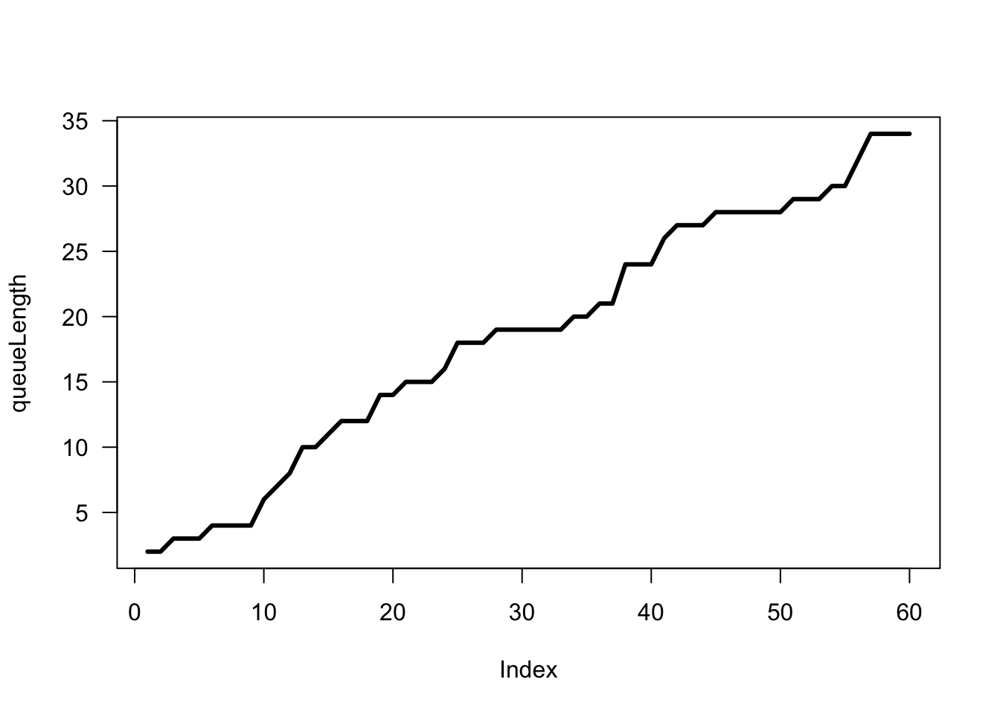
FIGURE F.40: A simulation
### Part 2
queuelength <- array(dim = 60)
queueLength[1] <- rpois(1, lambda = 0.5)
for (i in 2:60){
NumberIn <- rpois(1, lambda = 0.5)
# Number being served
if ( i < 30 ) {
NumberServed <- 0
} else {
if (i >= 30) {
lambda <- 0.75
}
NumberServed <- rpois(1, lambda = lambda)
queueLength[i] <- queueLength[i - 1] + NumberIn - NumberServed
}
if ( queueLength[i] < 0 ) queueLength[i] <- 0
}
plot( queueLength, type = "l", las = 1)
abline(v = 30, lwd = 3)
text(30, 5, pos = 3, # To the right,
labels = "Server starts")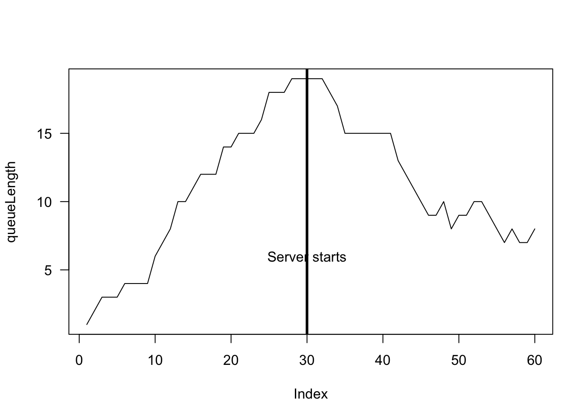
FIGURE F.41: A simulation
### Part 3.
queuelength <- array(dim = 60)
queueLength[1] <- rpois(1, lambda = 0.5)
for (i in 2:60){
NumberIn <- rpois(1, lambda = 0.5)
# Number being served
if ( i < 30 ) {
NumberServed <- 0
} else {
if ( (i > 30) & (i < 45) ) {
lambda <- 0.7
}
if ( i > 45 ) {
lambda <- 1.3
}
NumberServed <- rpois(1, lambda = lambda)
}
queueLength[i] <- queueLength[i - 1] + NumberIn - NumberServed
if ( queueLength[i] < 0 ) queueLength[i] <- 0
}
plot( queueLength, type = "l", las = 1, lwd = 3)
abline(v = 30, lwd = 2, col = "grey")
text(30, 5,
pos = 3, # To the right,
labels = "Server 1 starts")
abline(v = 45, lwd = 2, col = "grey")
text(45, 5,
pos = 3, # To the right,
labels = "Server 2 starts")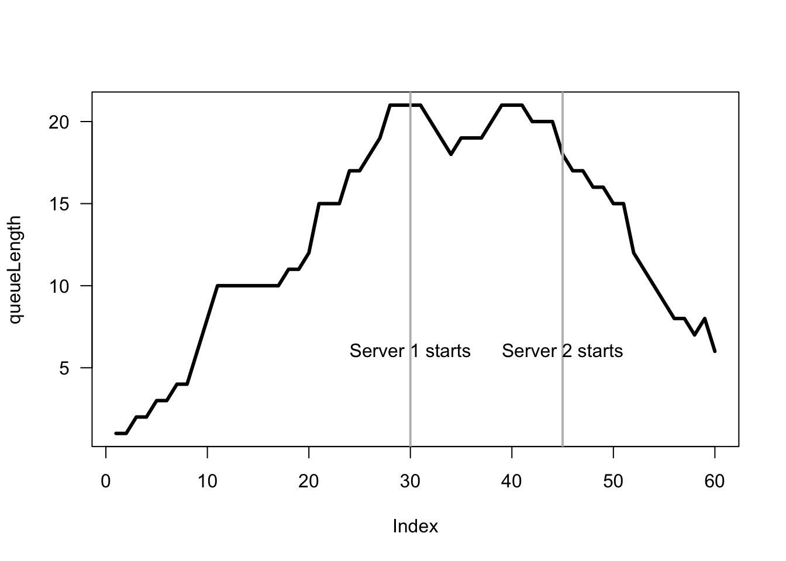
FIGURE F.42: A simulation
Exercise 6.25. Suppose \(X\sim\text{Poisson}(\lambda)\); then \(\Pr(X) = \Pr(X + 1)\) implies \[\begin{align*} \frac{\exp(-\lambda)\lambda^x}{x!} &= \frac{\exp(-\lambda)\lambda^{x + 1}}{(x + 1)!} \\ \frac{\lambda^x}{x!} &= \frac{\lambda^{x} \lambda}{(x + 1) \times x!} \end{align*}\] so that \(\lambda = x + 1\) (i.e., \(\lambda\) must be a whole number). For example, if \(x = 4\) we would have \(\lambda = 5\). And we can check:
Exercise 6.26.
- \(\operatorname{E}[X] = kp\) which is the same as the binomial (here, \(k\) is the sample size).
- \(\operatorname{var}[X] = k p (1 - p) \times \left(\frac{N - k}{N - 1}\right)\); the first bit is the variance for the binomial distribution (recall \(k\)$ is the sample size). The other term is \((N - k)/(N - 1)\), which is the FPC factor as defined.
Exercise 6.27. Since \(\operatorname{var}[Y] = \operatorname{E}[Y^2] - \operatorname{E}[Y]^2\), find \(\operatorname{E}[Y^2]\) using (B.2): \[\begin{align*} \operatorname{E}[Y^2] &= \sum_{i = 0}^{b - a} i^2\frac{1}{b - a + 1}\\ &= \frac{1}{b - a + 1}(0^2 + 1^2 + 2^2 + \dots +(b - a)^2)\\ &= \frac{1}{b - a + 1}\frac{(b - a)(b - a + 1)(2(b - a) + 1)}{6}\\ &= \frac{(b - a)(2(b - a) + 1)}{6}. \end{align*}\] Therefore \[ \operatorname{var}[X] = \operatorname{var}[Y] = \frac{(b - a)(2(b - a) + 1)}{6} - \left(\frac{b - a}2\right)^2 = \frac{(b - a)(b - a + 2)}{12}. \]
Exercise 6.31. Let \(Y = N - X\) be the number of Type B arrivals. \(Y\) depends on \(N\), so we sum over all possible vaues of \(n\) (note: for \(Y = k\), \(N > k\)): \[ \Pr(Y = k) = \sum_{n = k}^{\infty} \Pr(Y = k\mid N = n)\cdot \Pr(N = n). \] Given \(N = n\), the number of Type B arrivals has a binomial distribution \(\text{Binomial}(n, 1 - p)\), and \(N\) follows a Poisson distribution. Hence, on substituting, \[ \Pr(Y = k) = \frac{\exp(-\lambda) (\lambda(1-p))^k}{k!} \sum_{m=0}^\infty \frac{(\lambda p)^m }{m!}, \] and the summation is the Taylor series expansion for \(\exp(\lambda p)\), so we obtain \[ \Pr(Y = k) = \frac{\exp(-\lambda) (\lambda (1-p))^k}{k!} \exp(\lambda p) = \frac{\exp(-\lambda)(1-p)) (\lambda(1 - p))^k}{k!}, \] which is the PMF of a Poisson distribution, with parameter \(\lambda(1 - p)\).
Exercise 6.32.
- \(\Pr(G_A = 0\text{\ and\ }G_H = 0) = \Pr(G_A = 0) \cdots \Pr(G_H = 0)\) by independence:
lamH <- 1.5; lamA <- 1.0
# Part 1
dpois(0, lamH) * dpois(0, lamA)
#> [1] 0.082085
# Part 2
1 - ppois(1, lamH)
#> [1] 0.4421746
# Part 3
p_draw <- 0
for (i in 0:10){
p_draw <- p_draw + dpois(i, lamA) * dpois(i, lamH)
}
cat("The probability of a draw:", p_draw, "\n")
#> The probability of a draw: 0.2598474
# Part 4
p_five <- 0
for (i in 0:5){
p_five <- p_five + dpois(i, lamA) * dpois(5 - i, lamH)
}
cat("The probability of five match-goals:", p_five, "\n")
#> The probability of five match-goals: 0.06680094
# Part 5
p_home_win <- 0
for (i in 1:10){ # To win, a team need at least one goal.
for (j in (0:i)){
p_home_win <- p_home_win + dpois(i, lamA) * dpois(j, lamH)
}
}
cat("The probability of home-team win:", p_home_win, "\n")
#> The probability of home-team win: 0.4299693
# Part 6
num_sims <- 2000
home_goals <- rpois(num_sims, lamH)
away_goals <- rpois(num_sims, lamA)
hist(home_goals + away_goals, freq = FALSE,
las = 1, xlab = "Total goals",
main = "Total game goals")Exercise 6.33.
CHECK!!!!
p_home <- 0.90; p_away <- 0.85
# Part 1
cat("Prob home team makes all 5 shots:", dbinom(5, size=5, prob=p_home), "\n")
#> Prob home team makes all 5 shots: 0.59049
# Part 2
cat("Prob away team makes more than 3 shots:", 1 - pbinom(4, size=5, prob=p_home), "\n")
#> Prob away team makes more than 3 shots: 0.59049
# Part 3
cat("Prob away team's first on 2nd shot:", dgeom(2, p_away), "\n")
#> Prob away team's first on 2nd shot: 0.019125
# Part 4
cat("Prob away team's third goal on 5th shot:", dnbinom(5, 5, p_away), "\n")
#> Prob away team's third goal on 5th shot: 0.004245428
# Part 5
cat("Prob both team's fouth goal on 5th shot:",
dnbinom(4, 5, p_away) * dnbinom(4, 5, p_home), "\n")
#> Prob both team's fouth goal on 5th shot: 6.499326e-05
# Part 6
p_same <- 0
for (g in (0:5)){
p_same <- p_same + dbinom(g, 5, p_home) * dbinom(g, 5, p_away)
}
cat("Prob same number goals:", p_same, "\n")
#> Prob same number goals: 0.4007083
# Part 7
p_home_win <- 0
for (gh in (1:5)){ # To win, must score at least one goal
for (ga in (0:(gh-1))){ # To win, must score at least one goal
p_home_win <- p_home_win + dbinom(gh, 5, p_home) * dbinom(ga, 5, p_away)
}
}
cat("Prob home team wins shoot-out:", p_home_win, "\n")
#> Prob home team wins shoot-out: 0.3845039Exercise ??.
The sudden-death shoot-out produces a winner if one teams scores a pgoal, and the other does not. So, the probability that any single round produces a winner is \[ q = p_H(1 - p_A) + (1 - p_H) p_A = (0.80\times 0.25) + (0.20\times 0.75) = 0.35. \] So each round of sudden-death could end the shoot-out, with probability \(q = 0.35\).
Let \(X\) denote the number of additional sudden-death rounds before the shoot-out ends, where \(X = 1, 2, \dots\). This is the alternative parameterisation of the geometric distribution (Sect. 6.5.3). To use the parameterisation used in R, define \(Y = X - 1\) so that \(Y = 0, 1, 2, \dots\). Then, \[ Y\sim\text{Geometric}(p), \]
where \(p = 0.35\).
- The prob the shoot-out end in the first round is just \(0.35\).
dgeom(2, prob = 0.35)or about \(0.1479\).pgeom(3, prob = 0.35, lower.tail = FALSE)or about \(0.1785\).- For a geometric distribution, \(\operatorname{E}[Y] = 1/p = 1/0.35 \approx 2.857\).
0.80*(1-0.75)/0.35, or approx. \(0.5714\).
num_sims <- 10000
pA <- 0.80; pB <- 0.75
rounds <- numeric(num_sims)
A_wins <- logical(num_sims)
for (i in 1:num_sims) {
r <- 0
finished <- FALSE
while (!finished) {
r <- r + 1
A <- rbinom(1, 1, pA)
B <- rbinom(1, 1, pB)
if (A != B) {
rounds[i] <- r
A_wins[i] <- (A == 1)
finished <- TRUE
}
}
}
cat("Mean number of rounds:", mean(rounds), "\n")
#> Mean number of rounds: 2.8084
cat("P(Team A wins):", mean(A_wins), "\n")
#> P(Team A wins): 0.5698F.6 Answers for Chap. 7
Exercise 7.1.
- Beta: bounded between \(0\) and \(1\), modelling proportions.
- Exponential: memoryless waiting time with constant hazard rate.
- Gamma: sum of multiple service/waiting stages, giving total waiting time.
Exercise 7.2.
- Normal: symmetric variation around a mean from many small additive effects.
- Gamma: waiting time until multiple Poisson events occur (accumulated waiting time).
- Log-normal: positive, right-skewed quantities formed by multiplicative effects.
Exercise 7.3.
- Beta: models a random proportion bounded in \([0, 1]\).
- Gamma: sum of multiple exponential waiting times (waiting for multiple events).
- Normal: symmetric fluctuations around a mean, appropriate for small additive changes.
Exercise 7.4.
- Exponential: waiting time between Poisson events with constant rate.
- Log-normal: positive, right-skewed data from multiplicative processes.
- Log-normal: environmental concentrations typically arise from multiplicative variation and are strongly right-skewed.
Exercise 7.19.
For example: From \(\mu = m/(m + n)\), we get \(n = m(1 - \mu)/\mu\) and \(m + n = m/\mu\). Also, from the expression for the variance, substitute \(m + n = m/\mu\) and simplify to get \[ n = \frac{\sigma^2 m (m + \mu)}{\mu^3} \] Equate this expression for \(n\) with \(n = m(1 - \mu)/\mu\) from earlier, and solve for \(m\). We get that \(m = \frac{\mu}{\sigma^2}\left( \mu(1 - \mu) - \sigma^2\right)\); \(n = \frac{1 - \mu}{\sigma^2}\left( \mu(1 - \mu) - \sigma^2\right)\).
Exercise 7.20.
- \(\operatorname{E}[X] = (72 + 30)/2 = 51\)km.h\(-1\). \(\operatorname{var}[X] = (72 - 30)^2 / 12 = 147\)(km.h\(-1\))\(2\) (more easily understood, as \(\sqrt{\operatorname{var}[X]} = 12.12\)km.h\(-1\)).
- See Fig. F.43.
- See below; \(2/7 \approx 0.2857\).
- See below; \(7/12 \approx 0.5833\).
par(mfrow = c(1, 2))
x <- seq(10, 100, length = 1000)
plot( x = x,
y = dunif(x, min = 30, max = 72),
type = "l", las = 1, lwd = 3,
xlab = "Vehicle speeds (in km/h)",
ylab = "Probability density",
main = "PDF for vehicle speeds")
x <- seq(10, 100, length = 1000)
plot( x = x,
y = punif(x, min = 30, max = 72),
type = "l", lwd = 3, las = 1, ylim = c(0, 1),
xlab = "Vehicle speeds (in km/h)",
ylab = "Probability density",
main = "DF for vehicle speeds")
FIGURE F.43: Vehicle speeds.
Exercise 7.21.
- About \(2.4\)% of vehicles are excluded.
- \(Y\) has the distribution of \(X \mid (X > 30 \cap X < 72)\) if \(X \sim N(48, 8.8^2)\). The PDF is \[ f_Y(y) = \frac{1}{8.8k \sqrt{2\pi}} \exp\left\{ -\frac{1}{2}\left( \frac{y - 48}{8.8}\right)^2 \right\} \qquad\text{for $30\le y \le 72$}; \] where \(k \approx \Phi(-2.045455) + (1 - \Phi(2.727273)) = 0.02359804\).
Exercise 7.24.
- See Fig. F.44.
- \(\operatorname{E}[X] = \alpha \beta \approx 38.4\) and \(\operatorname{var}[X] = \alpha \beta^2 \approx 54.54\), so standard deviation is about \(7.38\).
- \(\Pr(C > 30 \mid C < 50) = \Pr(30 < C < 50) / \Pr(C < 50)\approx 0.870\).
alpha <- 27.05; beta <- 1.42
x <- seq(0, 80, length = 200)
par(mfrow = c(1, 2))
plot( y = dgamma(x, shape = alpha, scale = beta),
x = x,
las = 1, lwd = 3, type = "l",
xlab = expression(italic(x)),
ylab = "Prob. fn")
plot( y = pgamma(x, shape = alpha, scale = beta),
x = x,
type = "l", las = 1, lwd = 3,
xlab = expression(italic(x)),
ylab = "Dist. fn")
FIGURE F.44: The gamma distribution for the concrete diffusion model.
( pgamma(50, shape = alpha, scale = beta) -
pgamma(30, shape = alpha, scale = beta) ) /
pgamma(50, shape = alpha, scale = beta)
#> [1] 0.8701039mn <- 2; sd <- 0.2
x <- seq(1.2, 2.8, length = 200)
par(mfrow = c(1, 2))
plot( y = dnorm(x, mean = mn, sd = sd),
x = x,
xlab = expression(italic(x)),
ylab = "Prob. fn",
type = "l", lwd = 3)
plot( y = pnorm(x, mean = mn, sd = sd ),
x = x,
xlab = expression(italic(x)),
ylab = "Dist. fn",
type = "l", lwd = 3)
FIGURE F.45: The gamma distribution for the surface chloride concentrations model.
1 - pnorm(2.4, mean = mn, sd = sd)
#> [1] 0.02275013
qnorm(0.8, mean = mn, sd = sd)
#> [1] 2.168324
qnorm(0.85, mean = mn, sd = sd)
#> [1] 2.207287Exercise 7.26.
- See Fig. F.46.
- \(F_X(x) = \int_0^x ab t^{a - 1} (1 - t^a)^{b - 1} \, dt = 1 - (1 - x^a)^b\).
- With \(b = 1\), the PDF is \(p_X(x) = a x^{a - 1}\). Also, \[ \text{Beta}(a, 1) = \frac{x^{a - 1} (1 - x)^1 - 1}{B(a, 1)} = \frac{x^{a - 1} \Gamma(a + 1)}{\Gamma(a) \, \Gamma(a)} = a x^{a - 1}, \] which is the same as above.
- With \(a = b = 1\), the PDF is \(p_X(x) = 1\), which is the continuous uniform distribution.
- Write \(Y = 1 - X\); then \(p_X(x) = ab(1 - y)^{a - 1} (y^a) ^{b - 1}\).

FIGURE F.46: Some Kumaraswamy distributions.
Exercise 7.27. \(\text{CV} = \frac{\sqrt{a\beta^2}}{\alpha\beta} = 1/\sqrt{\alpha}\), which is constant.
Exercise 7.28. For the given beta distribution, \(\operatorname{E}[V] = 0.287/(0.287 + 0.926) = 0.2366...\) and \(\operatorname{var}[V] = 0.08161874\).
- \(\operatorname{E}[S] = \operatorname{E}[4.5 + 11V] = 4.5 + 11\operatorname{E}[V] = 7.10\) minutes. \(\operatorname{var}[S] = 11^2\times\operatorname{var}[V] = 9.875\) minutes2.
- See Fig. F.47.
v <- seq(0, 1, length = 500)
PDFv <- dbeta(v, shape1 = 0.287, shape2 = 0.926)
plot( PDFv ~ v,
type = "l", las = 1, lwd = 3,
xlim = c(0, 1), ylim = c(0, 5),
xlab = expression(italic(V)),
ylab = "PDF",
main = "Distribution of V")
FIGURE F.47: Service times.
Exercise 7.29.
- \(\operatorname{E}[T] = \operatorname{E}[0.5 + W] = 0.5 + \operatorname{E}[W] = 0.5 + 16.5 = 17.0\).
- \(\operatorname{var}[T] = \operatorname{var}[0.5 + W] = \operatorname{var}[W] = 16.5^2\), so the std dev is \(16.5\).
- \(\Pr(T > 1) = \Pr( [W + 0.5] > 1 ) = \Pr(W > 0.5) = 0.9702\).
beta <- 16.5
x <- seq(0, 80, length = 1000)
yB <- dexp(x, rate = 1/beta)
plot( yB ~ x,
type = "l", las = 1, lwd = 3,
ylim = c(0, 0.06),
main = expression(PDF~"for"~italic(W)),
xlab = expression(italic(w)),
ylab = "Prob. fn.")
FIGURE F.48: Exponential distribution for hospitals.
Exercise 7.32.
- In summer: If the event lasts more than \(1\) hour, what is the probability that it eventually lasts more than three hours?
- In winter: If the event lasts more than \(1\) hour, what is the probability that it lasts less than two hours?
alpha <- 2; betaS <- 0.04; betaW <- 0.03
x <- seq(0, 1, length = 1000)
yS <- dgamma( x, shape = alpha, scale = betaS)
yW <- dgamma( x, shape = alpha, scale = betaW)
plot( range(c(yS, yW)) ~ range(x),
type = "n", # No plot, just canvas
las = 1,
xlab = "Event duration (in ??)",
ylab = "Prob. fn.")
lines(yS ~ x, lty = 1, lwd = 3)
lines(yW ~ x, lty = 2, lwd = 3)
legend( "topright",
lwd = 3, lty = 1:2,
legend = c("Summer", "Winter"))
FIGURE F.49: Winter and summer
Exercise 7.34.
- \(\operatorname{E}[X] = \alpha\beta = 3.76\) days. \(\operatorname{var}[X] = \alpha\beta^2 = 12.75\) days2, so std dev is \(3.571\) days.
- The main difference is at the lower end of the distribution.
- About \(35%\) (gamma) and \(31%\) (exponential).
- Both just over \(10\) days.
alpha <- 1.11; beta <- 3.39
x <- seq(0, 15, length = 500)
yGamma <- dgamma(x, shape = alpha, scale = beta)
yExp <- dexp(x, rate = 1/beta)
plot( range (c(yGamma, yExp)) ~ range(x),
type = "n", # No plot, just canvas
las = 1,
xlab = "Duration of symptoms (in days)",
ylab = "Prob. fn.")
lines( yGamma ~ x,
lwd = 2, lty = 1)
lines( yExp ~ x,
lwd = 2, lty = 2)
legend( "topright",
lwd = 2, lty = 1:2,
legend = c("Gamma", "Exponential"))
FIGURE F.50: Gamma and exponential
Exercise 7.35.
- About \(25.2\)%.
- \(\Pr(T > 7 \mid T > 5) = \Pr(T > 7)/\Pr(T > 5)\) or about \(33.8\)%.
- About \(7\):\(30\)pm.
Exercise 7.36. Write \(X\) for the percentage of clay content in soil.
- For the two counties:
- County A:
- \(\operatorname{E}[X] = m / (m + n) = 0.708\) or about \(70.8\)%.
- \(\operatorname{var}[X] = 0.01196957\) so the standard deviation is about \(10.9\)%.
- County B:
- \(\operatorname{E}[X] = m / (m + n) = 0.513\) or about \(51.3\)%.
- \(\operatorname{var}[X] = 0.02939085\) so the standard deviation is about \(17.0\)%.
- About \(96\)% for County A; about \(53\)% for County B. These look reasonable from the plots.
x <- seq(0, 1, length = 1000)
yA <- dbeta(x, shape1 = 11.52, shape2 = 4.75)
yB <- dbeta(x, shape1 = 3.85, shape2 = 3.65)
plot( range( c(yA, yB)) ~ range(100 * x),
type = "n", #No plot, just canvas
las = 1,
xlab = "Percentage clay",
ylab = "Prob. fn.")
lines( yA ~ I(100 * x),
lwd = 3, lty = 1)
lines( yB ~ I(100 * x),
lwd = 3, lty = 2)
legend("top", lty = 1:2, lwd = 3,
legend = c("Location A", "Location B"))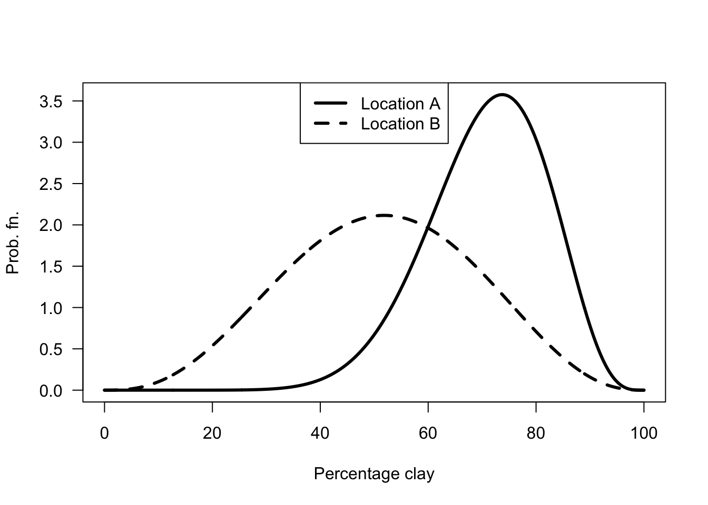
FIGURE F.51: Clay content
Exercise 7.38.
Note that if \(Y = X - \Delta\), then \(Y\) has a gamma distribution, with \(\alpha = 2.5\) and \(\beta = 0.8\), with \(\operatorname{E}[Y] = \alpha\beta = 2\) and \(\operatorname{var}[Y] = \alpha\beta^2 = 1.6\).
- \(\operatorname{E}[X] = \operatorname{E}[Y + \Delta] = 3.2\) seconds. \(\operatorname{var}[X] = \operatorname{var}[Y] = 1.6\) seconds\(2\).
numSims <- 1000
yHeadway <- rgamma( n = numSims, shape = 2.5, rate = 0.8)
xHeadway <- yHeadway + 1.2
hist(xHeadway,
las = 1, lwd = 2,
xlim = c(0, max(xHeadway)),
main = "Histogram of headway",
ylab = "Prob. fn.",
xlab = "Headway (in sec)")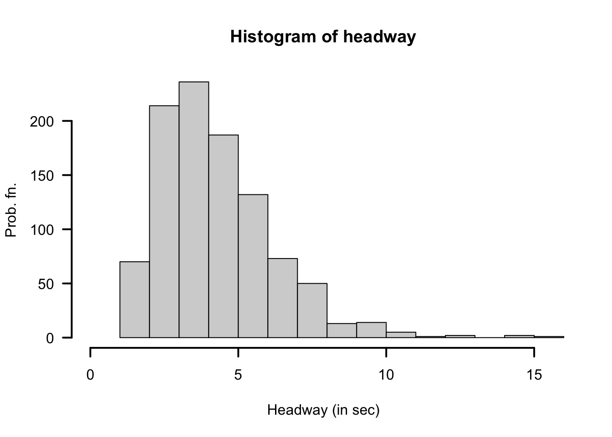
FIGURE F.52: Headways
xMean <- 3.2; xVar <- 1.6
xLo <- 3.2 - 2 * sqrt(xVar)
xHi <- 3.2 + 2 * sqrt(xVar)
cat("Limits", xLo, "and", xHi, "\n")
#> Limits 0.6701779 and 5.729822
# Part 3
Num <- sum( (xHeadway < xHi ) & (xHeadway > xLo) )
EmpiricalProp <- Num / numSims
EmpiricalProp
#> [1] 0.798
# Part 4: Tchebyshev: AT LEAST this proportion
k <- 2
1 - 1/k^2
#> [1] 0.75Exercise 7.41.
htMean <- function(x) {
7.5 * x + 70
}
htSD <- function(x) {
0.4575 * x + 1.515
}
NumSims <- 10000
Ages <- c(
rep(2, NumSims * 0.32),
rep(3, NumSims * 0.33),
rep(4, NumSims * 0.25),
rep(5, NumSims * 0.10)
)
Hts <- rnorm(NumSims,
mean = htMean(Ages),
sd = htSD(Ages))
hist(Hts,
las = 1,
xlab = "Heights (in cm)")
FIGURE F.53: Heights of children at day-care facilities
# Taller than 100:
cat("Taller than 100cm:", sum( Hts > 100) / NumSims * 100, "%\n")
#> Taller than 100cm: 22.41 %
# Mean and variance:
cat("Mean:", mean( Hts ), "cm; ",
"Std dev: ", sd(Hts), "cm\n")
#> Mean: 93.50605 cm; Std dev: 7.961026 cm
# Sort the heights to find where the tallest 20% are:
cat("Tallest 15% are taller than",
sort(Hts)[ NumSims * 0.85], "cm\n")
#> Tallest 15% are taller than 102.5178 cmExercise 7.42.
Normal: \(\operatorname{var}[X] = \sigma^2 \mu^0\), so \(\phi = \sigma^2\) and \(p = 0\).
Poisson: \(\operatorname{var}[X] = \mu\), so \(\phi = 1\) and \(p = 1\).
Gamma: \(\operatorname{var}[X] = \phi \mu^2\), so \(\phi = ???\) and \(p = 2\).
Exercise 7.44. The triangle with points \(A\), \(B\) and the centre \(C\) of the circle has sides of length \(1\), \(1\) and \(\sqrt{3}\) respectively. Using the cosine rule, the \(\angle ACB = 120^\circ\), in degrees. The probability is \(120/360 = 1/3\).
Exercise 7.45. TBA.
Exercise 7.22. TBA.
Exercise 7.23. \(f_X(x) = \lambda \exp(-\lambda x)\) for \(x > 0\) and \(\lambda > 0\); hence \(f'_X(x) = -\lambda^2 \exp(-\lambda x) < 0\) for all \(x > 0\).
Exercise 7.46.
- \(\Pr(T_A < 240)\):
pnorm(240, mean = 250, sd = 36), or about \(0.3901\). - \(\Pr(T_B < 240)\):
pnorm(240, mean = 280, sd = 36), or about \(0.1333\). - Since independent:
pnorm(240,250,36) * pnorm(240,280,36)or about \(0.0521\). - Since independent:
(1-pnorm(240,250,36)) * (1-pnorm(240,280,36))or about \(0.5282\). pnorm(300,250,36) - pnorm(240,250,36), or about \(0.5270\).- The distribution looks normally distributed.
# Parts 6 to 9
num_sims <- 10000
TA <- rnorm(num_sims, mean = 250, sd = 36)
TB <- rnorm(num_sims, mean = 280, sd = 36)
T_difference <- TB - TA
cat("P(Runner A finishes first):", sum(TA < TB)/num_sims, "\n")
#> P(Runner A finishes first): 0.7193
cat("P(Runner A finishes 30 mins faster):", sum( (TA+30) < TB)/num_sims, "\n")
#> P(Runner A finishes 30 mins faster): 0.4932
cat("Mean time diff:", mean(T_difference), "\n")
#> Mean time diff: 29.37893
cat("SD time diff:", sd(T_difference), "\n")
#> SD time diff: 50.71436
hist(T_difference, freq = FALSE, las = 1,
xlab = "Difference between times")Exercise 7.47.
- Lifter \(A\):
mean_A <- exp(5.20 + 0.12^2/2), or about \(182.58\,\text{kg}\).
Lifter \(B\):mean_B <- exp(5.10 + 0.12^2/2), or about \(165.15\,\text{kg}\). 1 - plnorm(190, meanlog = 5.20, sdlog = 0.12), or about \(0.3476\).1 - plnorm(190, meanlog = 5.10, sdlog = 0.12), or about \(0.110\).(1 - plnorm(190, 5.20, 0.12)) * (1 - plnorm(190, 5.10, 0.12))or about \(0.0383\).plnorm(190, 5.20, 0.12) * plnorm(190, 5.10, 0.12)or about \(0.5805\).plnorm(210, 5.20, 0.12) - plnorm(180, 5.20, 0.12), or about \(0.4133\).
# Parts 7 to 10
num_sims <- 10000
WA <- rlnorm(num_sims, meanlog = 5.20, sdlog = 0.12)
WB <- rlnorm(num_sims, meanlog = 5.10, sdlog = 0.12)
W_difference <- WA - WB
cat("P(Lifter A lifts more):", mean(WA > WB), "\n")
#> P(Lifter A lifts more): 0.7233
cat("P(Lifter A lifts at least 10 kg more):", mean(WA >= WB + 10), "\n")
#> P(Lifter A lifts at least 10 kg more): 0.5914
cat("Mean lifting difference:", mean(W_difference), "\n")
#> Mean lifting difference: 17.2035
cat("SD lifting difference:", sd(W_difference), "\n")
#> SD lifting difference: 28.99874
hist(W_difference, las = 1, freq = FALSE,
main = "Estimated PDF of W_A - W_B",
xlab = "Difference in lifting weight (kg)")Exercise 7.47.
\[ f_X(x) = \begin{cases} 2(x - a)/\big( (b - a)(c - a)\big) & \text{for $a\le x \le b$};\\ 2(c - x)/\big( (c - b)(c - a)\big) & \text{for $b < x \le c$}; \end{cases} \] and \[ F_X(x) = \begin{cases} 0 & \text{for $x < a$};\\ (x - a)^2/\big( (b - a)(c - a)\big) & \text{for $a\le x \le b$};\\ 1 - (c - x)^2/\big( (c - b)(c - a)\big) & \text{for $b < x \le c$};\\ 1 & \text{for $x > c$}. \end{cases} \]
Exercise 7.49.
# Part 1
alphai <- 12; betai <- 68
pp <- pbeta(0.1, shape1 = alphai, shape2 = betai)
pp
#> [1] 0.09344834
# Part 2
(1 - (1 - pp)^8)
#> [1] 0.5438156
# Part 3
alpha <- c(12, 13, 14, 12, 15, 10, 13, 12)
beta <- c(68, 70, 67, 69, 66, 60, 66, 67)
which.min(alpha/(alpha + beta))
#> [1] 6
# Part 4
which.min(pbeta(0.1, shape1 = alpha, shape2 = beta))
#> [1] 5
# Part 5
which.min((alpha * beta)/( (alpha + beta)^2 * (alpha + beta + 1) ))
#> [1] 4
# Part 6
1 - (1 - prod(1 - pbeta(0.1, shape1 = alpha, shape2 = beta)) )
#> [1] 0.5451358
# Part 7
for (i in 1:8) {
curve(dbeta(x, alpha[i], beta[i]),
xlab = "Reaction time (secs)",
ylab = "Density",
from = 0, to = 0.30,
lty = i, las = 1,
add = (i != 1))
}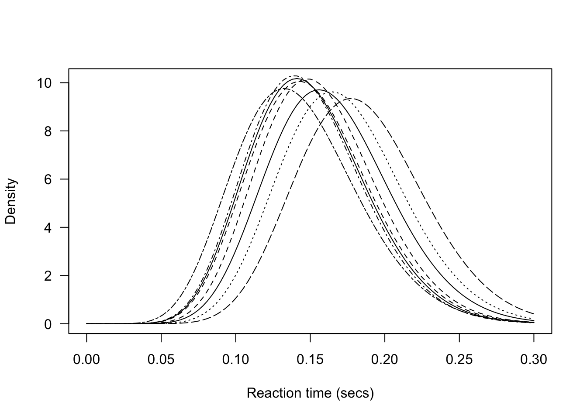
F.7 Answers for Chap. 8
Exercise 8.1.
- Continuous: can take any positive real value.
- \(S_X = (0, \infty)\).
- \(Y = X\) when \(x \le 50\); \(Y = 50\) when \(X > 50\).
- \(S_Y = [0, 50]\).
- \(Y\) is mixed random; a point mass at \(y = 50\).
- See Fig. F.54 (left).
- \(F_Y(y) = 0\) for \(y < 0\); \(F_Y(y) = 1 - \exp(-y/20)\) for \(0 \le y < 50\); \(F_Y(y) = 1\) for \(y \ge 50\).
- See Fig. F.54 (right).
- \(\Pr(X > 50) \approx 0.0821\) using the exponential distribution.
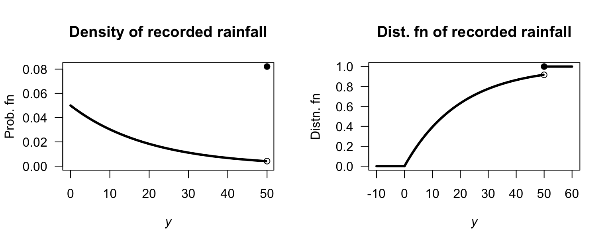
FIGURE F.54: Monthly rainfall recording.
Exercise 8.2.
- \(X\) is continuous: can take any positive value.
- \(S_x = (0, \infty)\).
- \(R = 0\) if \(X < 0.1\); \(R = X\) if \(0.1 \le X \le 70\); \(r = 70\) if \(X > 70\).
- \(S_R = \{0\}\cup [0.1, 70]\).
- Mixed: point masses at \(R=)\) and \(R = 70\).
- See Fig. F.55 (left).
- \(F_R(r) = 0\) for \(r < 0\); \(F_R(r) = 1 - \exp(-0.1/40)\) for \(0 \le r < 0.1\); \(F_R(r) = 1 - \exp(-r/40)\) for \(0.1 < r < 70\); \(F_R(r) = 1\) for \(r\ge 0\).
- See Fig. F.55 (right).
- \(\Pr(X > 70) \approx 0.174\).
- \(\Pr(R = 0) = \Pr(X < 0.25) \approx 0.0062\).
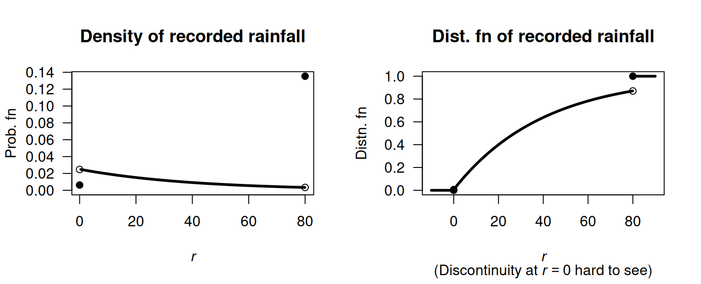
FIGURE F.55: Monthly rainfall recording.
Exercise 8.3.
- \(F_X(x) = 0\) for \(x < 0\); \(F_X(x) = 0.4\) for \(x = 0\); \(F_X(x) = 0.6 + 0.4 \times (1 - \exp(-x/3))\) for \(x > 0\).
- \(S_X(x) = 1\) for \(x < 0\); \(F_X(x) = 0.6\) for \(x = 0\); \(F_X(x) = \exp(-x/3)\) for \(x > 0\).
- TBA
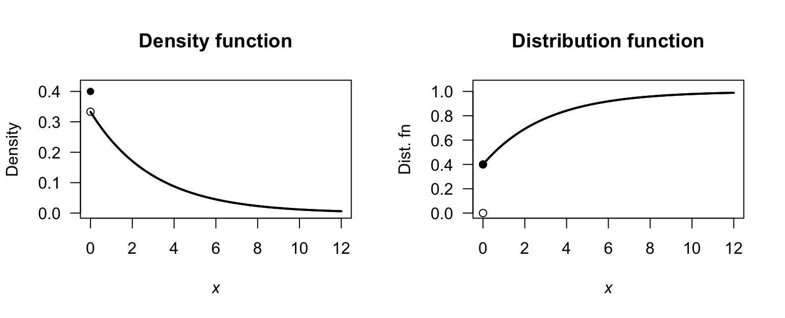
FIGURE F.56: Insurance: exponential.
Exercise 8.4.
- \(F_X(x) = 0\) for \(x < 0\); \(F_X(x) = 0.1\) for \(x = 0\); \(F_X(x) = 0.1 + 0.9 \times (1 - \exp(-x/85))\) for \(x > 0\).
- \(S_X(x) = 1\) for \(x < 0\); \(F_X(x) = 0.9\) for \(x = 0\); \(F_X(x) = \exp(-x/85)\) for \(x > 0\).
- TBA
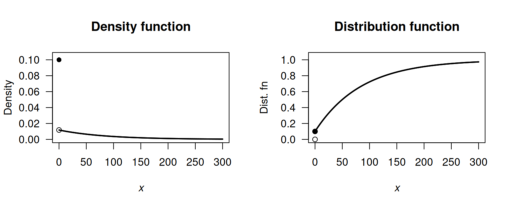
FIGURE F.57: Rainfall; exponential.
Exercise 8.5.
- \(F_X(x) = 0\) for \(x < 0\); \(F_X(x) = 0.4\) for \(x = 0\); \(F_X(x) = ???\) for \(x > 0\).
- \(S_X(x) = 1\) for \(x < 0\); \(F_X(x) = 0.6\) for \(x = 0\); \(F_X(x) = ???\) for \(x > 0\).
- TBA
DF1 <- function(x) {
out <- numeric(length(x))
out[x == 0] <- 0.4
out[x > 0] <- 0.4 + 0.6 * pgamma(x[x > 0], shape = 0.75, scale = 2)
out
}
1 - DF1(1.5)
#> [1] 0.2090445
DF1(2)
#> [1] 0.843988
DF1(5) - DF1(1)
#> [1] 0.253556
uniroot(function(x){DF1(x) - 0.95}, lower = 0, upper = 100)$root
#> [1] 4.037474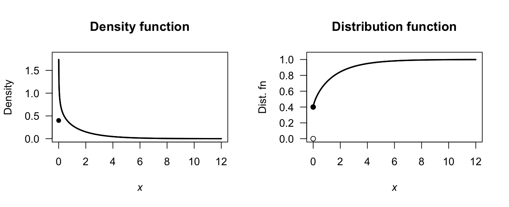
FIGURE F.58: Insurance; gamma.
Exercise 8.6.
- \(F_X(x) = 0\) for \(x < 0\); \(F_X(x) = 0.1\) for \(x = 0\); \(F_X(x) = ???\) for \(x > 0\).
- \(S_X(x) = 1\) for \(x < 0\); \(F_X(x) = 0.9\) for \(x = 0\); \(F_X(x) = ???\) for \(x > 0\).
- TBA.
DF2 <- function(x) {
out <- numeric(length(x))
out[x == 0] <- 0.1
out[x > 0] <- 0.1 + 0.9 * pgamma(x, shape = 0.8, scale = 80)
out
}
DF2(60)
#> [1] 0.6635868
1 - DF2(50)
#> [1] 0.3888545
DF2(70) - DF2(20)
#> [1] 0.3223154
uniroot(function(x){DF2(x) - 0.25}, lower = 0, upper = 100)$root
#> [1] 8.249703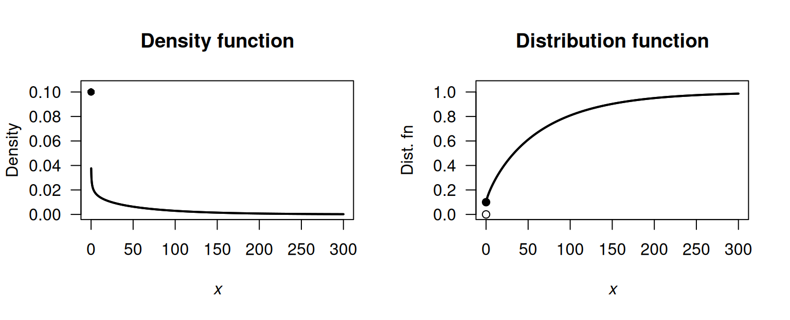
FIGURE F.59: Rainfall; gamma.
Exercise 8.7.
- \(F_X(x) = 0\) for \(x < 0\); \(F_X(x) = 0.4\) for \(x = 0\); \(F_X(x) = ???\) for \(x > 0\).
- \(S_X(x) = 1\) for \(x < 0\); \(F_X(x) = 0.6\) for \(x = 0\); \(F_X(x) = ???\) for \(x > 0\).
- TBA
DF1 <- function(x) {
out <- numeric(length(x))
out[x == 0] <- 0.4
out[x > 0] <- 0.4 + 0.6 * plnorm(x[x > 0], meanlog = 0.75, sdlog = 0.7)
out
}
1 - DF1(1.5)
#> [1] 0.4132251
DF1(2)
#> [1] 0.6805805
DF1(5) - DF1(1)
#> [1] 0.4489468
uniroot(function(x){DF1(x) - 0.95}, lower = 0, upper = 100)$root
#> [1] 5.573918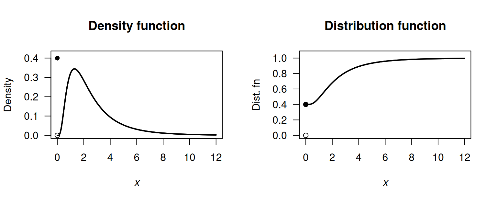
FIGURE F.60: Insurance; log normal
Exercise 8.8.
- \(F_X(x) = 0\) for \(x < 0\); \(F_X(x) = 0.1\) for \(x = 0\); \(F_X(x) = ???\) for \(x > 0\).
- \(S_X(x) = 1\) for \(x < 0\); \(F_X(x) = 0.9\) for \(x = 0\); \(F_X(x) = ???\) for \(x > 0\).
- TBA
DF2 <- function(x) {
out <- numeric(length(x))
out[x == 0] <- 0.1
out[x > 0] <- 0.1 + 0.9 * pgamma(x, shape = 0.8, scale = 80)
out
}
DF2(60)
#> [1] 0.6635868
1 - DF2(50)
#> [1] 0.3888545
DF2(70) - DF2(20)
#> [1] 0.3223154
uniroot(function(x){DF2(x) - 0.25}, lower = 0, upper = 100)$root
#> [1] 8.249703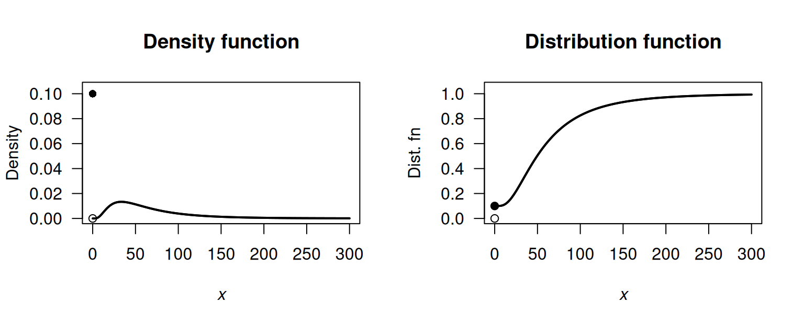
FIGURE F.61: Rainfall; log normal
Exercise 8.9.
- \(\mu = 4\,200\); \(\phi \approx 483\); \(\xi = 4/3\).
- Mean: $\(4\,200\); stand deviation: \(\sqrt{33\,600\,000} = \$5\,797\).
- \(\Pr(T = 0) = \exp(-\lambda) \approx 0.4966\).
See Fig. F.62.
cost_mu <- 4200
cost_phi <- 483
cost_xi <- 4/3
tweedie_plot(seq(0.01, 30000, length=100),
type = "pdf",
xi=cost_xi, phi=cost_phi, mu=cost_mu)
tweedie_plot(seq(0.01, 30000, length=100),
type = "cdf",
plot_args = list(ylim = c(0, 1)),
xi=cost_xi, phi=cost_phi, mu=cost_mu)
1 - ptweedie(5000, xi=cost_xi, phi=cost_phi, mu=cost_mu)
#> [1] 0.3285294
ptweedie(20000, xi=cost_xi, phi=cost_phi, mu=cost_mu)
#> [1] 0.9773117
ptweedie(15000, xi=cost_xi, phi=cost_phi, mu=cost_mu) -
ptweedie(10000, xi=cost_xi, phi=cost_phi, mu=cost_mu)
#> [1] 0.08626915
qtweedie(0.3, xi=cost_xi, phi=cost_phi, mu=cost_mu)
#> [1] 0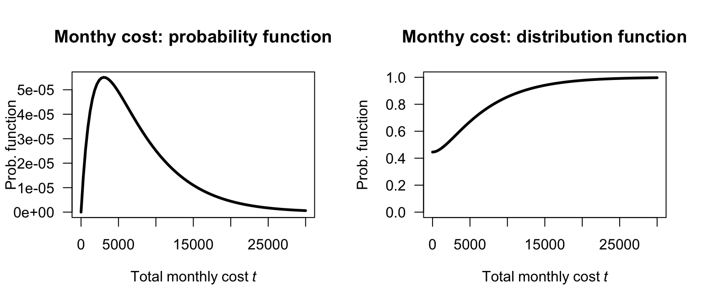
FIGURE F.62: The total monthly cost for a rare procedure.
Exercise 8.10.
- \(\mu = 160\,000\); \(\phi \approx 0.95\); \(\xi = 1.25\).
- Mean: $\(160\,000\); stand deviation: $\(20\,000\).
- Approximate normal distribution.
See Fig. F.63.
library(tweedie)
cost_mu <- 160000; cost_phi <- 0.95; cost_xi <- 1.25
tweedie_plot(seq(150000, 170000, length = 100),
type = "pdf",
xi = cost_xi, phi = cost_phi, mu = cost_mu)
tweedie_plot(seq(150000, 170000, length = 100),
type = "pdf",
xi = cost_xi, phi = cost_phi, mu = cost_mu)
1 - ptweedie(155000, xi=cost_xi, phi=cost_phi, mu = cost_mu)
#> [1] 0.9980389
ptweedie(165000, xi = cost_xi, phi = cost_phi, mu = cost_mu)
#> [1] 0.9978246
ptweedie(160000, xi = cost_xi, phi = cost_phi, mu = cost_mu) -
ptweedie(158000, xi = cost_xi, phi = cost_phi, mu = cost_mu)
#> [1] 0.3753808
qtweedie(0.6, xi = cost_xi, phi = cost_phi, mu = cost_mu)
#> [1] 160438
#
cost_sd <- sqrt( cost_phi * cost_mu^cost_xi)
1 - pnorm(155000, mean = cost_mu, sd = cost_sd )
#> [1] 0.9979326
pnorm(165000, mean = cost_mu, sd = cost_sd )
#> [1] 0.9979326
pnorm(160000, mean = cost_mu, sd = cost_sd ) -
pnorm(158000, mean = cost_mu, sd = cost_sd )
#> [1] 0.3743254
qnorm(0.6, mean = cost_mu, sd = cost_sd )
#> [1] 160441.7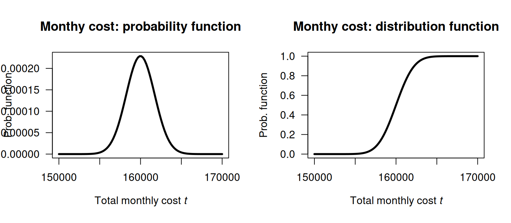
FIGURE F.63: The total monthly cost for a new test procedure.
Exercise 8.11.
- Three free parameters. Zero-modified gamma: \(p\), \(\alpha\), \(\beta\); Compound Poisson–gamma: \(\lambda\), \(\alpha\), \(\beta\).
- CP-G has mass \(\exp(-\lambda)\) at zero, and the positive part is an infinite sum of gamma distributions. ZMG places mass \(p\) at zero and the positive part is exactly \(\text{Gamma}(\alpha, \beta)\). To match, need \(p = \exp(-\lambda)\). But the conditional distribution \(S \mid S > 0\) in the CP-G is not a simple Gamma; it is an infinite sum \(\sum_{k=1}^\infty w_k \,\text{Gamma}(k\alpha,\beta)\). So the two models produce identical distributions only in degenerate/limiting cases, but not in general.
Exercise 8.12. Overdispersion requires \(\operatorname{var}[Y] \ge \operatorname{E}[Y]\).
For ZME: let \(\mu^+ = 1/\lambda_e\) (mean of exponential), \(p = \Pr(Y = 0)\). So, \(\operatorname{E}[Y] = (1 - p)\mu^+, \qquad \operatorname{E}[Y^2] = (1 - p)\cdot 2/\lambda_e^2\). Thus, \(\operatorname{var}[Y] = E[Y^2] - (E[Y])^2 = (1 - p)\frac{2}{\lambda_e^2} - (1 - p)^2\frac{1}{\lambda_e^2}\). And so, \(\operatorname{var}[Y] = \frac{(1 - p)(1 + p)}{\lambda_e^2}\).
For overdispersion: \(\frac{(1 - p)(1 + p)}{\lambda_e^2} > \frac{(1-p)}{\lambda_e}\), hence \(\frac{1 + p}{\lambda_e} > 1 \Rightarrow \lambda_e < 1 + p\), so overdispersion. This holds whenever \(\operatorname{E}[Y] > 0\) and \(p > 0\) combined with a large enough mean, confirming overdispersion in practical settings.
For CP-G: \(\operatorname{E}[S] = \lambda \alpha/\beta\), \(\operatorname{var}[S] = \lambda \alpha (\alpha + 1)/\beta^2\) and \(\operatorname{var}[S] \ge \operatorname{E}[S]\) so that \(\lambda\alpha(\alpha + 1)/\beta^2 \ge \lambda\alpha/\beta\) and hence \((\alpha + 1)/\beta > 1\).
This holds when \(\alpha + 1 > \beta\), which covers a wide range of practical parameters. When \(\operatorname{E}[S] > 0\) (i.e. \(\lambda > 0\)), we always have \(\operatorname{var}[S]/E[S] = (\alpha + 1)/\beta > 0\), and typically \(> 1\).
Exercise 8.13. Fix \(\operatorname{E}[S] = \mu\), so \(\lambda \cdot \alpha/\beta = \mu\), and hold \(\alpha/\beta = \mu/\lambda\) constant as \(\lambda \to \infty\).
The cumulant generating function of \(S\) is: \[ K_S(t) = \lambda\left[\left(\frac{\beta}{\beta - t}\right)^\alpha - 1\right]. \] As \(\lambda \to \infty\) with \(\alpha = \mu\beta/\lambda \to 0\), using \(\log(1 + x) \approx x\) for small \(\alpha\): \[\begin{align*} & \left(\frac{\beta}{\beta-t}\right)^\alpha - 1 \approx \alpha \log\frac{\beta}{\beta - t}\\ \Rightarrow & K_S(t) \approx \lambda \cdot \frac{\mu\beta}{\lambda} \log\frac{\beta}{\beta - t}\\ = &\mu\beta \log\frac{\beta}{\beta-t} \end{align*}\] This is the CGF of a Gamma\((\mu\beta,\, \beta)\) distribution (i.e., mean \(\mu\), shape \(\mu\beta\)).
As \(\lambda \to \infty\) with mean fixed, the CP-G converges to a Gamma distribution; the zero mass vanishes and the distribution becomes continuous.
Exercise 8.14.
- Total probability: \[ \Pr(Y = 0) + \int_0^\infty 0.6\,e^{-y}\,dy = 0.4 + 0.6\left[-e^{-y}\right]_0^\infty = 0.4 + 0.6(1) = 1. \]
- Find \[ F_Y(y) = \begin{cases} 0 & \text{for $y < 0$};\\ 0.4 & \text{for $y = 0$};\\ 0.4 + 0.6(1 - \exp(-y)) & \text{for $y > 0$}. \end{cases} \]
- \(\Pr(Y > 1) = 1 - F_Y(1) = 1 - [0.4 + 0.6(1 - \exp(-1))] = 0.6 \exp(-1) \approx 0.2207\).
- \(\Pr(0\le Y \le 3) = F_Y(3) - F_Y(0^{-}) = (1 - 0.6\exp(-3)) - 0 \approx 0.9701\). Note: We use \(F(0^{-}) = 0\) and not \(F(0)\) since the interval includes \(Y = 0\), which already has probability mass \(0.4\) included.
Exercise 8.15.
- \(\Pr(X > 0) = 1 - \Pr(X = 0) = 1 - 0.75 = 0.25\).
- For a gamma, \(\mu_c = \alpha\beta\); \(\operatorname{E}[X] = (1 - p)\mu_c = 0.75 \times (2\times 1) = 1.5\).
- For a gamma, \(\sigma_c^2 = \alpha\beta^2\); \(\operatorname{var}[X] = (1 - p)\sigma_c^2 + p(1 - p)\mu_c^2 = 4.6875\).
- \(P(X>3)\) is \(0.25\) times the gamma probability that \(X>3\):
0.25 * (1 - pgamma(3, shape = 2, scale = 1)), or about \(0.0498\).
Exercise 8.16. Care: \(p = \Pr(X = 0) = 0.4\).
- For a gamma, \(\mu_c = \alpha\beta\); \(\operatorname{E}[X] = (1 - p)\mu_c = 0.6 \times (3\times 2) = 3.6\,\text{kg}\).
- For a gamma, \(\sigma_c^2 = \alpha\beta^2\); \(\operatorname{var}[X] = (1 - p)\sigma_c^2 + p(1 - p)\mu_c^2 = 5.44\,\text{kg}^2\).
- \(P(X>5)\) is \(0.6\) times the gamma probability that \(X>5\):
0.6 * (1 - pgamma(5, shape = 3, scale = 2)), or about \(0.326\). pgamma(0.2, shape = 3, scale = 2), or about \(3.1\,\text{kg}\).
Exercise 8.17.
n_sim <- 1000
lambda <- 0.5; alpha <- 2; beta_rate <- 1
S <- sapply(1:n_sim, function(i) {
N <- rpois(1,
lambda)
if (N == 0) return(0)
sum(rgamma(N, shape = alpha, rate = beta_rate))
})
cat("E[S] theoretical:", lambda * alpha / beta_rate, "\n")
#> E[S] theoretical: 1
cat("E[S] simulated: ", mean(S), "\n")
#> E[S] simulated: 1.014859
cat("Var(S) theoretical:", lambda * alpha * (alpha + 1) / beta_rate^2, "\n")
#> Var(S) theoretical: 3
cat("Var(S) simulated: ", var(S), "\n")
#> Var(S) simulated: 3.18858
cat("Pr(S = 0) theoretical:", exp(-lambda), "\n")
#> Pr(S = 0) theoretical: 0.6065307
cat("Pr(S = 0) simulated: ", mean(S == 0), "\n")
#> Pr(S = 0) simulated: 0.603
hist(S[S > 0],
breaks = 40, las = 1,
main = "Total claim amount S | S > 0",
xlab = "S ($)",
ylab = "Count")
Exercise 8.18.
- \(\Pr(Y = 0) = \Pr(N = 0) = \exp(-2) = 0.1353\); about \(13.5\)%.
- For a gamma distribution, \(\operatorname{E}[X] = \alpha\beta = 2\); about \(2\) million dollars per fire.
- We have \(\operatorname{E}[X] = \lambda\alpha\beta = 4\); about \(4\) million dollars per month.
- \(\operatorname{E}[Y] = \lambda\alpha\beta/(1 - \exp(-\lambda)) = 4.62\); about \(4.62\) million dollars per month.
- See below; about \(5.4\) millon dollars.
lambda_fire <- 2; alpha_fire <- 1; beta_fire <- 2
## 1. Pr(S = 0)
cat("Pr(zero fire damage):", exp(-lambda_fire), "\n")
#> Pr(zero fire damage): 0.1353353
## 2. Mean damage given S > 0
n_sim <- 50000
S_fire <- sapply(1:n_sim, function(i) {
N <- rpois(1, lambda_fire)
if (N == 0) return(0)
sum(rgamma(N, shape = alpha_fire,
rate = 1/beta_fire)) # rate parameterisation
})
cat("Mean damage | number fires > 1:", mean(S_fire[S_fire > 1]), "\n")
#> Mean damage | number fires > 1: 5.375251
cat("Theoretical E[S]:", lambda_fire * alpha_fire * beta_fire, "\n")
#> Theoretical E[S]: 4Exercise 8.19.
- Matching mean and proportion of zeros. Let ZM have \(p_0\), \(\mu^+ = \operatorname{E}[Y \mid Y>0]\), and CP-G have \(\lambda\), \(\alpha\), \(\beta\). Set \(p_0 = \exp(-\lambda)\) (same zero probability) and \((1 - p_0)\mu^+ = \lambda\alpha/\beta\) (same mean). This gives us one equation relating parameters: infinitely many solutions exist, so yes, we can always find such parameters.
- If \(\lambda = 1\), \(\alpha = 2\), \(\beta = 1\) for CP-G, then \(\Pr(S = 0) = \exp(-1) \approx 0.368\), \(\operatorname{E}[S] = 2\). For the ZM, set \(p_0 = \exp(-1)\), \(\mu^+ = \operatorname{E}[S]/(1 - p_0) = 2/(1 - \exp(-1) \approx 3.164\). So, use \(\text{Gamma}(\alpha^+=2, \beta^+ = 2/\mu^+)\) for ZM positive part.
- Variance comparison:
lambda_c <- 1; alpha_c <- 2; beta_c <- 1
p0 <- exp(-lambda_c)
ES <- lambda_c * alpha_c / beta_c # = 2
mu_plus <- ES / (1 - p0)
# ZM variance
alpha_zm <- 2
beta_zm <- alpha_zm / mu_plus
var_plus <- alpha_zm / beta_zm^2
E_plus2 <- var_plus + mu_plus^2
var_ZM <- (1 - p0) * E_plus2 - ES^2
# CPG variance
var_CPG <- lambda_c * alpha_c * (alpha_c + 1) / beta_c^2
cat("ZM variance:", round(var_ZM, 4), "\n")
#> ZM variance: 5.4919
cat("CPG variance:", round(var_CPG, 4), "\n")
#> CPG variance: 6- Simulation verification
n_sim <- 2000
# CP-G simulation
S_cpg <- sapply(1:n_sim, function(i) {
N <- rpois(1, lambda_c)
if (N == 0) return(0)
sum(rgamma(N, shape = alpha_c, rate = beta_c))
})
# ZM simulation
S_zm <- ifelse(runif(n_sim) < p0, 0,
rgamma(n_sim, shape = alpha_zm, rate = beta_zm))
cat("CPG - mean:", round(mean(S_cpg),3), "var:", round(var(S_cpg),3),
"Pr(0):", round(mean(S_cpg==0),3), "\n")
#> CPG - mean: 2.014 var: 5.934 Pr(0): 0.352
cat("ZM - mean:", round(mean(S_zm),3), "var:", round(var(S_zm),3),
"Pr(0):", round(mean(S_zm==0),3), "\n")
#> ZM - mean: 1.938 var: 5.289 Pr(0): 0.37Exercise 8.20.
For the zero-modified distribution with \(\Pr(Y = 0) = p\) and \(Y\mid Y>0 \sim F^+\): \[ F_Y(y) = \begin{cases} p & \text{for $y = 0$}; \\ p + (1 - p) F^+(y) & \text{for $y > 0$}. \end{cases} \] Inverting: for \(\tau \leq p\), \(Q_Y(\tau) = 0\). For \(\tau > p\): \[ \tau = p + (1 - p)F^+(y) \Rightarrow F^+(y) = \frac{\tau - p}{1 - p}. \] So: \[ Q_Y(\tau) = \begin{cases} 0 & \tau \leq p \\ F^+\!\left(\dfrac{\tau - p}{1 - p}\right) & \tau > p \end{cases} \] where \(Q^+\) is the quantile function of the positive part.
Median when \(p > 0.5\): since \(0.5 < p\), then \(Q_Y(0.5) = 0\). The median is \(0\).
Exercise 8.21.
p <- 0.4
sh <- 3 # shape
rt <- 2 # rate (mean of Gamma = shape/rate = 1.5)
mu_plus <- sh / rt
var_plus <- sh / rt^2
# 1. E[Y]
EY <- (1 - p) * mu_plus
cat("E[Y] =", EY, "\n")
#> E[Y] = 0.9
# 2. Var(Y)
# Var(Y) = (1-p)(var+ + mu+^2) - [(1-p)mu+]^2
VarY <- (1 - p) * (var_plus + mu_plus^2) - EY^2
cat("Var(Y) =", VarY, "\n")
#> Var(Y) = 0.99
# 3. Pr(Y > 2)
# Pr(Y > 2) = (1-p)*Pr(Y+ > 2) [the zero mass contributes 0]
prob_gt2 <- (1 - p) * pgamma(2, shape = sh, rate = rt, lower.tail = FALSE)
cat("Pr(Y > 2) =", round(prob_gt2, 4), "\n")
#> Pr(Y > 2) = 0.1429
# 4. 90th percentile
tau <- 0.90
if (tau <= p) {
cat("90th percentile = 0\n")
} else {
q90 <- qgamma((tau - p) / (1 - p), shape = sh, rate = rt)
cat("90th percentile =", round(q90, 4), "\n")
}
#> 90th percentile = 2.2813Exercise 8.22.
Effect of \(p\) on zero-modified Gamma\((2, 1)\):
p_vals <- c(0.1, 0.3, 0.6, 0.85)
sh2 <- 2; rt2 <- 1
y_seq <- seq(0.001, 10, length.out = 500)
mom_table <- data.frame(
p = p_vals,
EY = sapply(p_vals, function(p) (1-p)*sh2/rt2),
VarY = sapply(p_vals, function(p) {
mu_p <- sh2/rt2; vp <- sh2/rt2^2; ey <- (1-p)*mu_p
(1-p)*(vp + mu_p^2) - ey^2
})
)
print(round(mom_table, 4))
#> p EY VarY
#> 1 0.10 1.8 2.16
#> 2 0.30 1.4 2.24
#> 3 0.60 0.8 1.76
#> 4 0.85 0.3 0.81
ltys <- 1:4
plot(y_seq, (1 - p_vals[1]) * dgamma(y_seq, shape = sh2, rate = rt2),
type = "l", lwd = 2,
ylim = c(0, 0.6),
main = "Zero-modified Gamma(2,1) density for varying p\n(point mass at 0 not shown)",
xlab = "y", ylab = "f(y)")
for (i in 2:length(p_vals)) {
lines(y_seq, (1 - p_vals[i]) * dgamma(y_seq, shape = sh2, rate = rt2),
lty = ltys[i], lwd = 2)
}
legend("topright", legend = paste0("p = ", p_vals),
lty = ltys, lwd = 2, bty = "n")
As \(p\) increases, the distribution places more mass at zero, shrinking the mean and pulling the continuous part down. The shape of the positive part is unchanged.
Exercise 8.23.
Given: \(\Pr(Y = 0) = 0.5\), \(\operatorname{E}[Y] = 3\), \(\operatorname{var}[Y] = 30\).
p_obs <- 0.5; EY_obs <- 3; VY_obs <- 30
# E[Y] = (1-p)*mu+ => mu+ = E[Y]/(1-p)
mu_plus_hat <- EY_obs / (1 - p_obs)
cat("mu+ =", mu_plus_hat, "\n")
#> mu+ = 6
# Var(Y) = (1-p)(var+ + mu+^2) - E[Y]^2
# => var+ = [Var(Y) + E[Y]^2]/(1-p) - mu+^2
var_plus_hat <- (VY_obs + EY_obs^2) / (1 - p_obs) - mu_plus_hat^2
cat("var+ =", var_plus_hat, "\n")
#> var+ = 42
# Gamma: mu+ = a/b, var+ = a/b^2 => b = mu+/var+, a = mu+*b
b_hat <- mu_plus_hat / var_plus_hat
a_hat <- mu_plus_hat * b_hat
cat("Gamma shape (alpha) =", round(a_hat, 4), "\n")
#> Gamma shape (alpha) = 0.8571
cat("Gamma rate (beta) =", round(b_hat, 4), "\n")
#> Gamma rate (beta) = 0.1429
cat("Is alpha > 0 and beta > 0?", a_hat > 0 && b_hat > 0, "\n")
#> Is alpha > 0 and beta > 0? TRUE
# Plot
y_seq <- seq(0.001, 40, length.out = 600)
dens <- (1 - p_obs) * dgamma(y_seq, shape = a_hat, rate = b_hat)
plot(y_seq, dens, type = "l", lwd = 2,
main = "Estimated zero-modified distribution",
sub = "Red triangle = point mass at 0",
xlab = "y", ylab = "density / mass")
segments(x0 = 0, y0 = 0, x1 = 0, y1 = p_obs,
lwd = 3, lty = 2)
points(0, p_obs, pch = 17, cex = 1.8)
Exercise 8.24.
- Link between \(\Pr(S = 0)\) and \(\operatorname{E}[S]\) In CP-G: \(\Pr(S = 0) = \exp(-\lambda)\) and \(\operatorname{E}[S] = \lambda\alpha/\beta\). So \(\lambda = \beta \operatorname{E}[S]/\alpha\), giving: \[ \Pr(S = 0) = \exp\!\left(-\frac{\beta\,\operatorname{E}[S]}{\alpha}\right). \] There is a direct link: higher mean \(\Rightarrow\) smaller \(\Pr(S = 0)\).
In the zero-modified model, \(p\) and \(\operatorname{E}[Y] = (1 - p)\mu^+\) are independently specifiable; no such constraint.
\(S \mid S > 0\) is not a simple Gamma: \[ S \mid S > 0 = \sum_{k=1}^N X_k \mid N \geq 1. \]
The conditional distribution of \(N \mid N \geq 1\) is a zero-truncated Poisson (not constant), so \(S\mid S>0\) is a mixture: \[ f_{S\mid S > 0}(s) = \sum_{k=1}^\infty \Pr(N = k \mid N \geq 1) \cdot f_{\text{Gamma}(k\alpha,\beta)}(s). \] This infinite mixture is not a single Gamma.
Approximate Gamma when \(\lambda \to \infty\): As shown in (DIFF EXERCISE), as \(\lambda \to \infty\) with fixed mean, \(\Pr(S = 0) \to 0\) and \(S\) converges to Gamma. So \(S\mid S>0 \approx \text{Gamma}\) for large \(\lambda\).
Exercise 8.25.
CGF: \[ M_S(t) = \exp\!\left\{\lambda\left[\left(\frac{\beta}{\beta - t}\right)^\alpha - 1\right]\right\}. \] and \[ K_S(t) = \lambda\left[\left(\frac{\beta}{\beta-t}\right)^\alpha - 1\right]. \]
First four cumulants: Differentiating \(K_S(t)\) at \(t = 0\): \[ \kappa_r = \lambda \cdot \frac{\alpha(\alpha + 1)\cdots(\alpha + r - 1)}{\beta^r} = \lambda \cdot \frac{\Gamma(\alpha + r)}{\Gamma(\alpha)\,\beta^r}. \]
| Cumulant | Formula |
|---|---|
| \(\kappa_1 = E[S]\) | \(\lambda\alpha/\beta\) |
| \(\kappa_2 = \text{var}[S]\) | \(\lambda\alpha(\alpha+1)/\beta^2\) |
| \(\kappa_3\) | \(\lambda\alpha(\alpha+1)(\alpha+2)/\beta^3\) |
| \(\kappa_4\) | \(\lambda\alpha(\alpha+1)(\alpha+2)(\alpha+3)/\beta^4\) |
Skewness and excess kurtosis \[\begin{align*} \gamma_1 &= \frac{\kappa_3}{\kappa_2^{3/2}} = \frac{\lambda\alpha(\alpha+1)(\alpha+2)/\beta^3}{\left[\lambda\alpha(\alpha+1)/\beta^2\right]^{3/2}}\\ &= \frac{(\alpha+2)}{\sqrt{\lambda\alpha(\alpha+1)}} \cdot \frac{1}{\beta^{1/2}} \cdot \beta = \frac{(\alpha+2)}{\sqrt{\lambda\alpha(\alpha+1)}}\\ \gamma_2 &= \frac{\kappa_4}{\kappa_2^2} = \frac{3(\alpha+2)(\alpha+3)}{\lambda\alpha(\alpha+1)(\alpha+2)} \cdot \frac{(\alpha+1)}{\alpha} \cdot \frac{1}{(\alpha+3)}\cdots \end{align*}\] (simplifies, but positive for all parameters).
Always positively skewed: \[ \gamma_1 = \frac{\alpha + 2}{\sqrt{\lambda\alpha(\alpha + 1)}} > 0. \] since \(\alpha > 0\) and \(\lambda > 0\).
Exercise 8.26. CP-G with \(N \sim \text{Poisson}(3)\), \(X_k \sim \text{Gamma}(2, 0.01)\)
lambda_e <- 3; alpha_e <- 2; beta_e <- 0.01 # rate parameterisation
# 1. E[S]
ES_e <- lambda_e * alpha_e / beta_e
cat("E[S] =", ES_e, "\n")
#> E[S] = 600
# 2. Var(S)
VarS_e <- lambda_e * alpha_e * (alpha_e + 1) / beta_e^2
cat("Var(S) =", VarS_e, "\n")
#> Var(S) = 180000
# 3. Skewness
gamma1_e <- (alpha_e + 2) / sqrt(lambda_e * alpha_e * (alpha_e + 1))
cat("Skewness gamma1 =", round(gamma1_e, 4), "\n")
#> Skewness gamma1 = 0.9428
# 4. Pr(S = 0)
cat("Pr(S = 0) =", round(exp(-lambda_e), 4), "\n")
#> Pr(S = 0) = 0.0498
# 5. Pr(S > 1000) by simulation
n_sim <- 100000
S_sim <- sapply(1:n_sim, function(i) {
N <- rpois(1, lambda_e)
if (N == 0) return(0)
sum(rgamma(N, shape = alpha_e, rate = beta_e))
})
cat("Pr(S > 1000) approx", round(mean(S_sim > 1000), 4), "\n")
#> Pr(S > 1000) approx 0.1661Exercise 8.27.
CP-G moment table and density for varying \(\lambda\), \(\alpha\) (fixed \(\beta = 1\)).
beta_p <- 1
lambdas <- c(0.5, 2, 8)
alphas <- c(0.5, 2)
params <- expand.grid(lambda = lambdas, alpha = alphas)
params$ES <- params$lambda * params$alpha / beta_p
params$VarS <- params$lambda * params$alpha * (params$alpha + 1) / beta_p^2
params$Pr0 <- exp(-params$lambda)
params$skew <- (params$alpha + 2) / sqrt(params$lambda * params$alpha * (params$alpha + 1))
print(round(params, 3))
#> lambda alpha ES VarS Pr0 skew
#> 1 0.5 0.5 0.25 0.375 0.607 4.082
#> 2 2.0 0.5 1.00 1.500 0.135 2.041
#> 3 8.0 0.5 4.00 6.000 0.000 1.021
#> 4 0.5 2.0 1.00 3.000 0.607 2.309
#> 5 2.0 2.0 4.00 12.000 0.135 1.155
#> 6 8.0 2.0 16.00 48.000 0.000 0.577
n_s <- 20000
par(mfrow = c(3, 2), mar = c(4, 4, 3, 1))
for (i in 1:nrow(params)) {
lam <- params$lambda[i]; alp <- params$alpha[i]
S <- sapply(1:n_s, function(j) {
N <- rpois(1, lam)
if (N == 0) return(0)
sum(rgamma(N, shape = alp, rate = beta_p))
})
S_pos <- S[S > 0]
d <- density(S_pos, from = 0)
plot(d, main = sprintf("lambda=%.1f, alpha=%.1f", lam, alp),
xlab = "S", ylab = "Density", lwd = 3)
d$x <- c(0, d$x) # To make polygon work correctly
d$y <- c(0, d$y)
polygon(d, col = adjustcolor("grey", alpha.f = 0.3), border = NA)
}
Exercise 8.28.
Tweedie power-variance relationship: For CP-G: \(\operatorname{E}[S] = \lambda\alpha/\beta\) and \(\operatorname{var}[S] = \lambda\alpha(\alpha + 1)/\beta^2\): \[ \operatorname{var}[S] = \frac{\alpha+1}{\beta} \cdot \frac{\lambda\alpha}{\beta} = \frac{\alpha + 1}{\lambda\alpha/\beta} \cdot \left(\frac{\lambda\alpha}{\beta}\right)^2 \cdot \frac{1}{\lambda\alpha/\beta}. \] More directly, write \(\mu = \operatorname{E}[S]\): \[ \operatorname{var}[S] = \frac{(\alpha + 1)}{\beta} \mu = \frac{(\alpha + 1)}{\lambda\alpha}\mu^2 \cdot \frac{\lambda\alpha/\beta}{\mu}. \] After algebra, \(\operatorname{var}[S] = \phi\,\mu^p\) where \(p = (\alpha + 2)/(\alpha + 1)\).
Show \(p \in (1,2)\) for \(\alpha > 0\): \[ p = \frac{\alpha + 2}{\alpha + 1} = 1 + \frac{1}{\alpha + 1}. \]
- As \(\alpha \to 0^+\): \(p \to 1 + 1 = 2\).
- As \(\alpha \to \infty\): \(p \to 1\).
- Strictly decreasing in \(\alpha\), so \(p \in (1, 2)\) for all \(\alpha > 0\).
# Numerical verification
alphas_tw <- c(0.1, 0.5, 1, 2, 5, 10, 50)
p_tw <- (alphas_tw + 2) / (alphas_tw + 1)
cat("alpha:", alphas_tw, "\n")
#> alpha: 0.1 0.5 1 2 5 10 50
cat("p: ", round(p_tw, 4), "\n")
#> p: 1.9091 1.6667 1.5 1.3333 1.1667 1.0909 1.0196
cat("All p in (1,2)?", all(p_tw > 1 & p_tw < 2), "\n")
#> All p in (1,2)? TRUEExercise 8.29. R function for CP-G random sampling:
rCPG <- function(n, lambda, alpha, beta) {
sapply(1:n, function(i) {
N <- rpois(1, lambda)
if (N == 0) return(0)
sum(rgamma(N, shape = alpha, rate = beta))
})
}
# Simulate and verify
lam_r <- 2; alp_r <- 3; bet_r <- 0.5
S_r <- rCPG(1e5, lam_r, alp_r, bet_r)
cat("--- Theoretical vs Simulated ---\n")
#> --- Theoretical vs Simulated ---
cat("E[S]: theory =", lam_r*alp_r/bet_r,
" sim =", round(mean(S_r), 3), "\n")
#> E[S]: theory = 12 sim = 12.02
cat("Var(S): theory =", lam_r*alp_r*(alp_r+1)/bet_r^2,
" sim =", round(var(S_r), 3), "\n")
#> Var(S): theory = 96 sim = 96.045
cat("Pr(S=0): theory =", round(exp(-lam_r), 4),
" sim =", round(mean(S_r == 0), 4), "\n")
#> Pr(S=0): theory = 0.1353 sim = 0.1354
# SkewnessExercise 8.30.
Probability plots for three CP-G distributions:
configs <- list(
list(lambda=0.5, alpha=1, beta=1),
list(lambda=2, alpha=2, beta=0.5),
list(lambda=5, alpha=3, beta=2)
)
par(mfrow = c(3, 1), mar = c(4, 4, 3, 1))
for (cfg in configs) {
S <- rCPG(8000, cfg$lambda, cfg$alpha, cfg$beta)
p0 <- mean(S == 0)
eS <- mean(S)
S_pos <- S[S > 0]
# Spike at 0 + density for positive part
d <- density(S_pos, from = 0)
ylim_max <- max(d$y, p0 / diff(range(S_pos)) * 5) * 1.1
plot(d, main = sprintf("CP-G(lambda=%.1f, alpha=%.1f, beta=%.1f) | Pr(S=0)=%.3f, E[S]=%.2f",
cfg$lambda, cfg$alpha, cfg$beta, p0, eS),
xlab = "S", ylab = "Density", xlim = c(0, max(S_pos)), lwd = 2)
segments(x0 = 0, y0 = 0, x1 = 0, y1 = p0 * 3, lwd = 4, lty = 2)
points(0, p0 * 3, pch = 19, cex = 1.5)
legend("topright", legend = c("Continuous part", sprintf("Mass at 0: %.3f", p0)),
lwd = 2, lty = c(1, 2), bty = "n")
}
Exercise 8.32.
Matching CP-G and Zero-Modified-Gamma on mean, variance, and \(\Pr(X = 0)\):
# CP-G parameters
lam_m <- 2; alp_m <- 2; bet_m <- 1
ES_m <- lam_m * alp_m / bet_m # = 4
VarS_m <- lam_m * alp_m*(alp_m+1)/bet_m^2 # = 12
p0_m <- exp(-lam_m) # about 0.135
cat("Target: E[S]=", ES_m, "Var(S)=", VarS_m, "Pr(0)=", round(p0_m,4), "\n")
#> Target: E[S]= 4 Var(S)= 12 Pr(0)= 0.1353
# ZM parameters: match p0, mean, variance
p_zm <- p0_m
mu_plus_zm <- ES_m / (1 - p_zm)
# var_plus from: Var = (1-p)(var+ + mu+^2) - E^2
var_plus_zm <- (VarS_m + ES_m^2)/(1-p_zm) - mu_plus_zm^2
# Gamma parameterisation
bet_zm <- mu_plus_zm / var_plus_zm
alp_zm <- mu_plus_zm * bet_zm
cat("ZM Gamma: shape=", round(alp_zm,4), "rate=", round(bet_zm,4), "\n")
#> ZM Gamma: shape= 1.9487 rate= 0.4212
# Simulate
n_s <- 30000
S_cpg <- rCPG(n_s, lam_m, alp_m, bet_m)
S_zm <- ifelse(runif(n_s) < p_zm, 0,
rgamma(n_s, shape = alp_zm, rate = bet_zm))
cat("\nUpper 5% tail:\n")
#>
#> Upper 5% tail:
cat("CPG P(S > q95):", round(mean(S_cpg > quantile(S_cpg, 0.95)), 4), "\n")
#> CPG P(S > q95): 0.05
cat("ZM P(S > q95):", round(mean(S_zm > quantile(S_zm, 0.95)), 4), "\n")
#> ZM P(S > q95): 0.05
# Density of positive part
d_cpg <- density(S_cpg[S_cpg > 0])
d_zm <- density(S_zm[S_zm > 0])
xlim <- c(0, 20)
ylim <- c(0, max(d_cpg$y, d_zm$y) * 1.1)
plot(d_cpg, col = "grey", lwd = 2, xlim = xlim, ylim = ylim,
main = "Density of positive part: CP-G vs Zero-Modified Gamma\n(matched on mean, variance, Pr(X=0))",
xlab = "S", ylab = "Density")
polygon(d_cpg, col = adjustcolor("grey", 0.3), border = NA)
lines(d_zm, col = "coral", lwd = 2)
polygon(d_zm, col = adjustcolor("coral", 0.3), border = NA)
legend("topright", legend = c("CP-G", "Zero-Modified Gamma"),
col = c("grey", "coral"), lwd = 2, bty = "n")
Even with the same mean, variance, and zero probability, the two models differ in the shape of the positive tail. The CP-G tends to have heavier right tails and higher skewness due to the Poisson mixing, while the ZM model has a simpler Gamma positive part. The upper \(5\)% exceedance probabilities and skewness reveal these differences clearly.
Exercise 8.31. Use the MGFs, the MGF of \(T = X_1 + X_2\) is \(M_T(t) = M_{X_1}(t) \cdot M_{X_2}(t)\). Substituting the MGFs for the CPG, \[ M_T(t) = \exp\!\left\{(\lambda_1 + \lambda_2)\left[\left(\frac{1}{1-\beta t}\right)^\alpha - 1\right]\right\} \]
This is the MGF of a CPG\((\lambda_1 + \lambda_2, \alpha, \beta)\) distribution. Since the MGF uniquely determines the distribution, \(T\) has a CPG\((\lambda_1 + \lambda_2, \alpha, \beta)\).
Reproductive property of CP-G:
n_r <- 50000
S1 <- rCPG(n_r, lambda=2, alpha=1.5, beta=0.5)
S2 <- rCPG(n_r, lambda=3, alpha=1.5, beta=0.5)
T_sum <- S1 + S2 # should behave like CP-G(5, 1.5, 0.5)
lam_T <- 5; alp_T <- 1.5; bet_T <- 0.5
cat("--- T = S1 + S2 vs CP-G(5, 1.5, 0.5) theory ---\n")
#> --- T = S1 + S2 vs CP-G(5, 1.5, 0.5) theory ---
cat("E[T]: theory =", lam_T*alp_T/bet_T,
" sim =", round(mean(T_sum), 3), "\n")
#> E[T]: theory = 15 sim = 14.91
cat("Var(T): theory =", lam_T*alp_T*(alp_T+1)/bet_T^2,
" sim =", round(var(T_sum), 3), "\n")
#> Var(T): theory = 75 sim = 73.984
cat("Pr(T=0): theory =", round(exp(-lam_T),4),
" sim =", round(mean(T_sum==0), 4), "\n")
#> Pr(T=0): theory = 0.0067 sim = 0.0067
# CDF comparison
x_pts <- quantile(T_sum, probs = seq(0.1, 0.9, 0.1))
T_theory <- rCPG(n_r, lam_T, alp_T, bet_T)
cat("\nCDF comparison at deciles:\n")
#>
#> CDF comparison at deciles:
df_cdf <- data.frame(
x = round(x_pts, 2),
sim = round(sapply(x_pts, function(x) mean(T_sum <= x)), 3),
theory = round(sapply(x_pts, function(x) mean(T_theory <= x)), 3)
)
print(df_cdf)
#> x sim theory
#> 10% 4.77 0.1 0.098
#> 20% 7.36 0.2 0.196
#> 30% 9.58 0.3 0.297
#> 40% 11.65 0.4 0.397
#> 50% 13.76 0.5 0.498
#> 60% 16.01 0.6 0.598
#> 70% 18.58 0.7 0.698
#> 80% 21.77 0.8 0.799
#> 90% 26.42 0.9 0.896The CP-G is reproductive: \(S_1 + S_2 \sim \text{CP-G}(\lambda_1+\lambda_2, \alpha, \beta)\) when \(\alpha\) and \(\beta\) are shared.
Exercise 8.33. Consider the CPG distribution.
Hold \(\mu = \lambda\alpha\beta\) fixed (so the mean of \(X\) is constant) and let \(\lambda \to \infty\), \(\alpha \to 0\) with \(\lambda\alpha\) constant.
The CGF of \(X\) is: \[ K_X(t) = \lambda\left[\left(\frac{1}{1-\beta t}\right)^\alpha - 1\right]. \] Write \((1 - \beta t)^{-\alpha} = \exp\{-\alpha \log(1 - \beta t)\}\) and expand for small \(\alpha\): \[ (1 - \beta t)^{-\alpha} \approx 1 - \alpha\log(1-\beta t). \] So: \[ K_X(t) \approx \lambda \cdot (-\alpha)\log(1-\beta t) = -(\lambda\alpha)\log(1-\beta t). \] Setting \(k = \lambda\alpha\) (which is fixed): \[ K_X(t) \to -k\log(1-\beta t) = \log(1-\beta t)^{-k}. \] This is the CGF (and hence the MGF) of a Gamma\((k, \beta) = \text{Gamma}(\lambda\alpha, \beta)\) distribution.
So as \(\lambda \to \infty\) and \(\alpha \to 0\) with \(\lambda\alpha\) fixed, the CPG distribution converges to a Gamma\((\lambda\alpha, \beta)\) distribution; the point mass at zero vanishes (since \(\exp(-\lambda) \to 0\)) and the distribution becomes purely continuous. Intuitively, there are so many tiny jumps that the compound sum behaves like a continuous accumulation, converging to a gamma by a law-of-large-numbers argument.
Exercise 8.34. From the law of total expectation, \[ \operatorname{E}[X] = \operatorname{E}[X \mid X = 0] \cdot \Pr(X = 0) + \operatorname{E}[X \mid X > 0] \cdot \Pr(X > 0). \] Then since \(\operatorname{E}[X\mid X = 0] = 0\) and \(\Pr(X = 0) = \exp(-\lambda)\), \[ \lambda \alpha\beta = 0 + \operatorname{E}[X\mid X>0] \times (1 - \exp(-\lambda)), \] from which we find \(\operatorname{E}[X\mid X > 0] = \lambda\alpha\beta/(1 - \exp(-\lambda))\).
F.8 Answers for Chap. 9
Exercise 9.1.
For \(0 < x < 2\), the transformation is one-to-one. The inverse transform is \(X = Y^{1/3}\), and so \(0 < y < 8\).
- \(F_Y(y) = \Pr(Y\le y) = \Pr(X^3 \le y) = \Pr(X\le y^{1/3}) = F_X( y^{1/3}) = \int_{u = 0}^{y^{1/3}} u/2\,du = \left[u^2/4\right]_{u = 0}^{u = y^{1/3}} = y^{2/3}/4.\) Differentiate to find the PDF: \(f_Y(y) = \frac{d}{dy} y^{2/3}/4 = y^{-1/3}/6\).
- Since \(w(y) = y^{1/3}\), then \(w'(y) = y^{-2/3}\). Then: \[\begin{align*} f_Y(y) &= f_X(y) |J|\\ &= y^{1/3}/2 \times \overbrace{y^{-2/3}/3}^{|J|} \\ &= y^{-1/3}/6 \end{align*}\] for \(0 < y < 8\).
- See Fig. F.64.
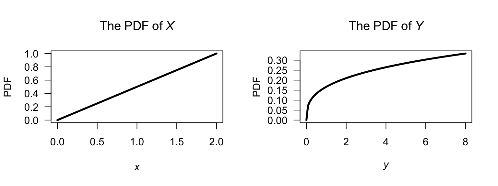
FIGURE F.64: The PDF of \(X\) and \(Y = X^2\).
Exercise 9.2. For \(0 < x < 1\), the transformation is one-to-one. The inverse transform is \(Y = \sqrt{X}\), and so \(0 < y < 1\). \(F_X(x) = 4x/3 - x^3/3\) when \(0 < x < 1\).
- \(F_Y(y) = \Pr(Y\le y) = \Pr(\sqrt{X} \le y) = \Pr(X\le y^2) = F_X( y^2) = 3y^2/2 - y^6/2\). Differentiate to find the PDF: \(f_Y(y) = 3y - 3y^5\) for \(0 < y < 1\).
- Since \(w(y) = y^2\), then \(w'(y) = 2y\) since \(y > 0\). Then: \[\begin{align*} f_Y(y) &= f_X(y) |J|\\ &= 3(1 - y^4)/2 \times 2y = 3y(1 - y^4) \end{align*}\] for \(0 < y < 1\).
- See Fig. F.65.
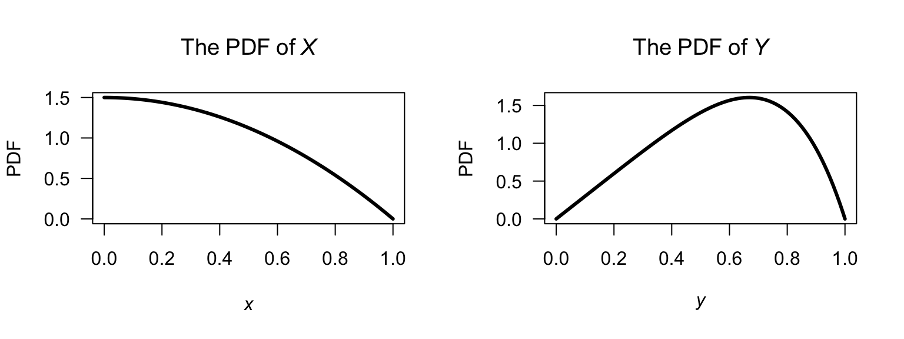
FIGURE F.65: The PDF of \(X\) and \(Y = \sqrt{X}\).
Exercise 10.22. First:
- For \(X_1 = 0\), \(X_2= 0\) (with prob: \(0\)): \(Y_1 = 0\); \(Y_2 = 0\);
- For \(X_1 = 0\), \(X_2= 1\) (with prob. \(1/6\)): \(Y_1 = 1\); \(Y_2 = 1\);
- For \(X_1 = 1\), \(X_2= 0\) (with prob. \(2/6\)): \(Y_1 = 1\); \(Y_2 = 0\);
- For \(X_1 = 1\), \(X_2= 1\) (with prob. \(3/6\)): \(Y_1 = 2\); \(Y_2 = 1\).
Effectively, the first line can be ignored (since the probability is zero), so \(Y_1 \in \{1, 2\}\) and \(Y_2\in\{0, 1\}\).
- From the above, the joint pf is shown in Table F.2.
- Hence, from the table: \[ f_{Y_1}(y_1) = \begin{cases} 1/2 & \text{if $y_1 = 1$};\\ 1/2 & \text{if $y_1 = 2$}. \end{cases} \]
| \(Y_1 = 1\) | \(Y_1 = 2\) | |
|---|---|---|
| \(Y_2 = 0\) | \(2/6\) | \(0\) |
| \(Y_2 = 1\) | \(1/6\) | \(3/6\) |
Exercise 9.3. \(Y \sim\text{Gamma}(\sum\alpha, \beta)\).
Exercise 9.4. Transformation is not 1-1; and \(Y > 0\). Then: \[\begin{align*} F_Y(y) &= \Pr(Y < y)\\ &= \Pr( X^1 < y)\\ &= \Pr( -\sqrt{y} < X < \sqrt{y} ) \quad\text{(draw a diagram!)}\\ &= \int_{-\sqrt{y}}^{\sqrt{y}} \frac{1}{\pi(1 + x^2)}\, dx\\ &= \frac{2}{\pi} \tan^{-1}(\sqrt{y}). \end{align*}\] and so \[ f_Y(y) = \frac{d}{dy} \frac{2}{\pi} \tan^{-1}(\sqrt{y}) = \frac{1}{\pi(y + 1)\sqrt{y}}\quad\text{for $y > 0$}. \]
Exercise 9.5.
- Differentiating: \(f_X(x) = 1\) for \(-1/2 < x < /1/2\)}.
- First: this transformation is not 1:1 (Fig. F.66). See that \(X = \pm\sqrt{4 - Y}\), and that \(3.75 < Y < 4\). So, \[\begin{align*} F_Y(y) &= \Pr(Y < y) \\ &= 1 - \Pr( -\sqrt{4 - y} < X < \sqrt{4 - y} )\\ &= 1 - \int_{-\sqrt{4 - y}}^{\sqrt{4 - y}} 1\, dx\\ &= 1 - 2\sqrt{4 - y}, \end{align*}\] and so, differentiating: \[ f_Y(y) = \frac{1}{\sqrt{4 - y}} \quad\text{for $3.75 < Y < 4$} \]

FIGURE F.66: The transformation.
Exercise 9.8.
Given that \(f(\theta) = 4/\pi\) for \(0 < \theta< \pi/4\), and hence \(0 < D < (v^2/g)\). Then: \[\begin{align*} F_D(d) = \Pr(D < d) &= \Pr( v^2/g\sin2\theta < d) \\ &= \Pr(\theta < \frac{1}{2} \sin^{-1}(d g/v^2 ) \\ &= \int_0^{\sin^{-1}(d g/v^2 )/2} \frac{4}{\pi}\, d\theta \\ &= \frac{2}{\pi} \sin^{-1} \left( \frac{dg}{v^2} \right). \end{align*}\] So \[ f_D(d) = \frac{2g}{\pi}\frac{1}{\sqrt{v^4 - d^2 g^2}}\quad\text{for $0 < D < v^2 /g$}. \]
Alternatively: see that \(D = v^2\sin 2\theta/g \Rightarrow sin 2\theta = Dg/v^2\), and so \[ \frac{dd}{d\theta} = \frac{2v^2}{g}\cos 2\theta. \] Then, \[\begin{align*} f_D(d) &= \frac{4}{\pi} \left| \frac{g}{2 v^2\cos 2\theta} \right|\\ &= \frac{2g}{\pi v^2 \cos2\theta}\\ &= \frac{2g}{\pi \sqrt{v^4 - d^2 g^2}} \end{align*}\] after (e.g.) drawing the right-angled triangle to re-write \(\sin 2\theta = Dg/v^2\). See Fig. F.67.

FIGURE F.67: The distance travelled by a projectile.
Exercise 9.9.
- \(I = 240/R\) and \(\log R\sim N(\mu = 10, \sigma^2 = ????)\). Taking logs: \(\log I = \log 240 - \log R\). Thus, \(\log I \sim N(\log 240 - \mu, \sigma^2)\) and so \(I\sim\text{Log-normal}(log 24, 0.1)\).
- See Fig. F.68.
- \(\Pr(I > 30) = \Pr(R < 8)\); since \(R\) is log-normal, \(\log R\sim N(\log 10, 0.1)\). Thus, \(\Pr(R < 8) = \Phi( (\log 8 - \log 10)/\sqrt{0.1}) = \Pr(z < -0.706) \approx 0.24\).
- \(\operatorname{E}[I] = \exp(\mu + \sigma^2/2)\) for log-normal: \(\operatorname{E}[I] = 24\exp(0.05) = 25.23\).
- \(\operatorname{var}[I] = \exp(\sigma^2 - 1)\exp(2\mu + \sigma^2)\) for log-normal: \(\operatorname{E}[I] = 66.9\).
- The median current: \(24\); reciprocal of mean: \(22.85\). Since \(1/x\) is non-linear, \(\operatorname{E}[1/R] \ne 1/\operatorname{E}]R]\).
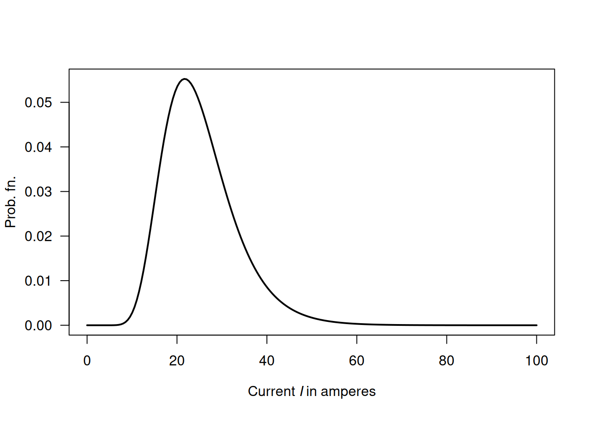
FIGURE F.68: The distribution of current in a circuit.
Exercise 9.10. Proceed: \[\begin{align*} F_Y(y) &= \Pr(Y \le y) = \Pr(X \ge \exp(-y/\alpha)) \qquad\text{note the change of direction!}\\ &= \int_{\exp(-y/\alpha)}^1 1\, dx \end{align*}\] so that \(f_Y(y) = \frac{1}{\alpha} \exp(-y/\alpha)\) for \(y > 0\), which is the exponential distribution.
Exercise 9.11.
- \(\operatorname{E}[W] = -1/3\); \(\operatorname{var}[W] = 17/9\approx 1.8889\dots\).
- \(\Pr(V = 0) = 1/2\); \(\Pr(V = 4) = 1/2\).
- Find: \[ F_W(w) = \begin{cases} 0 & \text{for $w < -2$};\\ 1/3 & \text{for $-2 \le w < 0$};\\ 5/6 & \text{for $0 \le w < 2$};\\ 1 & \text{for $w \ge 2$}. \end{cases} \]
Exercise 9.15.
- First see that \(Y = \log X\). Then: \[\begin{align*} F_Y(y) &= \Pr(Y < y) \\ &= \Pr( \exp X < y)\\ &= \Pr( X < \log y)\\ &= \Phi\left((\log y - \mu)/\sigma\right) \end{align*}\] by the definition of \(\Phi(\cdot)\).
- Proceed: \[\begin{align*} f_Y(y) &= \frac{d}{dy} \Phi\big((\log y - \mu)/\sigma\big) \\ &= \frac{1}{y} \Phi\big((\log y - \mu)/\sigma\big) \\ &= \frac{1}{y\sqrt{2\pi\sigma^2}} \exp\left[\left( -\frac{ (\log y - \mu)^2}{\sigma}\right)^2\right] \end{align*}\] since the derivative of \(\Phi(\cdot)\) (the df of a standard normal distribution) is \(\phi(\cdot)\) (the PDF of a standard normal distribution).
- See Fig. F.69.
- See below: About \(0.883\).
par( mfrow = c(2, 2))
x <- seq(0, 8,
length = 500)
plot( dlnorm(x, meanlog = log(1), sdlog = 1) ~ x,
xlab = expression(italic(y)),
ylab = "PDF",
type = "l",
main = expression(Log~normal*":"~mu==1~and~sigma==1),
lwd = 2,
las = 1)
plot( dlnorm(x, meanlog = log(3), sdlog = 1) ~ x,
xlab = expression(italic(y)),
ylab = "PDF",
type = "l",
main = expression(Log~normal*":"~mu==3~and~sigma==1),
lwd = 2,
las = 1)
plot( dlnorm(x, meanlog = log(1), sdlog = 2) ~ x,
xlab = expression(italic(y)),
ylab = "PDF",
main = expression(Log~normal*":"~mu==1~and~sigma==2),
type = "l",
lwd = 2,
las = 1)
plot( dlnorm(x, meanlog = log(3), sdlog = 2) ~ x,
xlab = expression(italic(y)),
ylab = "PDF",
main = expression(Log~normal*":"~mu==3~and~sigma==2),
type = "l",
lwd = 2,
las = 1)
FIGURE F.69: Log-normal distributions
Exercise 9.16. See that \(Y\in\{0, 1, \sqrt{2}, \sqrt{3}, 2\}\) and so \[ \Pr(Y = y) = \binom{4}{y^2} (0.2)^{y^2} (0.8)^{4 - y^2} \quad \text{for $y = 0, 1, \sqrt{2}, \sqrt{3}, 2$}. \]
Exercise 9.17.
- First, see the relationships: \[\begin{align*} X = 1 &\to Y = (X - 3)^2 = 4;\\ X = 2 &\to Y = (X - 3)^2 = 1;\\ X = 3 &\to Y = (X - 3)^2 = 0;\\ X = 4 &\to Y = (X - 3)^2 = 1. \end{align*}\] So adding probabilities as appropriate: \[ p_Y(y) = \begin{cases} 9/30 & \text{for $y = 0$};\\ 20/30 & \text{for $y = 1$};\\ 1/30 & \text{for $y = 4$}. \end{cases} \]
Exercise 9.21. For the given beta distribution, \(\operatorname{E}[V] = 0.287/(0.287 + 0.926) = 0.2366...\) and \(\operatorname{var}[V] = 0.08161874\).
- \(\operatorname{E}[S] = \operatorname{E}[4.5 + 11V] = 4.5 + 11\operatorname{E}[V] = 7.10\) minutes. \(\operatorname{var}[S] = 11^2\times\operatorname{var}[V] = 9.875\) minutes2.
- \(V\in (4.5, 15.5)\). See Fig. F.70.
- This corresponds to \(V = 10.5/11 = 0.9545455\), so \(\Pr(S > 15) = \Pr(V > 0.9545455) = 0.01745087\).
- With \(V\), the largest 20% correspond to \(V = 0.004080076\), so that \(S = 4.544881\); the quickest \(20%\) are within \(4.54\,\text{mins}\).

FIGURE F.70: Service times
#> [1] 0.01745087
#> [1] 4.50408Exercise 9.6. Care is needed with the interval: it is not 1:1.

FIGURE F.71: Question 1.
- Note that \(Y\) is defined over \(0 < Y < 4\), and the transformation is not a 1:1 transformation (Fig. 1, left panel) over these values. To use the distribution function method, see that \(0 < y < 1\) corresponds to \(-\sqrt{Y} < z < \sqrt{Y}\), but \(1 \le y \le 4\) corresponds to \(-1 < z <\sqrt{Y}\). For \(y < 1\): \[ F_Y(y) = \Pr(Y \le y) = \Pr(-\sqrt{y} < z < \sqrt{y}\,) = \int_{-\sqrt{y}}^{\sqrt{y}} \frac{1}{3}\, dz = \frac{2\sqrt{y}}{3}\quad \text{for $0 < y < 1$}. \] For \(1 < y < 4\), start by writing \(F_Y(y) = \Pr(Y \le y)\), but then take care to include \(\Pr(Y < 1)\)! \[ F_Y(y) = \Pr(Y \le 1) + \Pr(1 < Y < y) = \frac{2}{3} + \Pr(1 < z < \sqrt{y}\,) = \frac{2}{3} + \int_{1}^{\sqrt{y}} \frac{1}{3}\, dz = \frac{1 + \sqrt{y}}{3}. \] Hence (noting carefully where \(y = 1\) in the PDF): \[ F_Y(y) = \begin{cases} 0 & \text{for $y \le 0$};\\ \frac{2\sqrt{y}}{3} & \text{for $0 \le y < 1$};\\ \frac{1 + \sqrt{y}}{3} & \text{for $1 \le y < 4$};\\ 1 & \text{for $y \ge 4$} \end{cases} \quad\text{so differentiating:}\quad f_Y(y) = \begin{cases} \frac{1}{3\sqrt{y}} & \text{for $0 < y < 1$};\\ \frac{1}{6\sqrt{y}} & \text{for $1 \le y < 4$}. \end{cases} \]
- For all values of \(Y\), the PDF is non-negative. In addition, \(\int_Y f_Y(y)\, dy = 1\).
- See Fig. F.71 (right panel).
Exercise 9.24. We have \[ f_X(x) = \begin{cases} 2x/3 & \text{for $0 \le x \le 1$}\\ (3 - x)/3 & \text{for $1 < x \le 3$} \end{cases} \] and hence \[ F_X(x) = \begin{cases} 0 & \text{for $x < 0$}\\ x^2/3 & \text{for $0 \le x \le 1$}\\ (6x - x^2 - 3)/6 & \text{for $1 < x \le 3$}\\ 1 & \text{for $x > 3$.} \end{cases} \] Since \(Y = 6 - 2x\), \(\mathcal{R}_X = (0, 3)\) maps to \(\mathcal{R}_Y = (0, 6)\); more specifically, \(0 \le x \le 1\) maps to \(4 \le y \le 6\) and \(1 < x \le 3\) maps to \(0 < y \le 4\). Then: \[\begin{align*} F_Y(y) &= \Pr(Y \le y)\\ &= \Pr\left( x \ge \frac{6 - y}{2}\right)\\ &= 1 - F_X\left( x \le \frac{6 - y}{2}\right). \end{align*}\] So, when \(0 \le x \le 1\) (i.e., \(4\le y \le 6\)): \[ F_Y(y) = \frac{12y - y^2 - 24}{12} \] and when \(1 < x \le 3\) (i.e., \(0 < y \le 4\)), \(F_Y(y) = y^2/24\) so that (CHECK LESS THAN, LESS THAN OR EQUAL signs!!!!!!!!!!!) \[ f_Y(y) = \begin{cases} y/12 & \text{for $0 < y \le 4$}\\ (6 - y)/6 & \text{for $4 \le y \le 6$.} \end{cases} \]
Exercise 9.25. Not a 1:1 function so care is needed. \(f_X(x)\) and \(F_X(x)\) are given above. Since \(Z = (X - 2)^2\), \(\mathcal{R}_X = (0, 3)\) maps to \(\mathcal{R}_Z = (0, 4)\); more specifically, \(0 \le x \le 1\) maps to \(1 \le z \le 4\) and \(1 < x \le 3\) maps to \(0 < z \le 1\). First consider the case \(0\le z\le 1\): \[\begin{align*} F_Z(z) &= \Pr(Z \le y)\\ &= \Pr(2 - \sqrt{Z} \le X \le 2 + \sqrt{Z})\\ &= F_X(2 + \sqrt{z}) - F_X(2 - \sqrt{z})\\ &= 2\sqrt{z} / 3. \end{align*}\] Then, when \(1\le z \le 4\): \[\begin{align*} F_Z(z) &= \Pr(Z \le z)\\ &= F_Z(1) + \Pr(2 - \sqrt{Z} \le X\le 1)\\ &= \frac{2}{3} + \frac{4\sqrt{z} - z - 3}{3}\\ &= \frac{4\sqrt{z} - z - 1}{3}. \end{align*}\] So we write \[ F_Z(z) = \begin{cases} 0 & \text{for $z < 0$}\\ 2\sqrt{z}/3 & \text{for $0 < z < 1$}\\ (4\sqrt{z} - z - 1)/3 & \text{for $1 < z < 4$}\\ 1 & \text{for $z > 4$.} \end{cases} \] Note that \(F_Z(4) = 1\) and \(F_Z(0) = 0\) as required. Furthermore, the two parts both give \(F_Z(1) = 2/3\). Then, so that (CHECK LESS THAN, LESS THAN OR EQUAL signs!!!!!!!!!!!) \[ f_Z(z) = \begin{cases} 1/(3\sqrt{z}\,) & \text{for $0 < z \le 1$}\\ \left(2/\sqrt{z} - 1\right)/3 & \text{for $1 \le z \le 4$}. \end{cases} \]
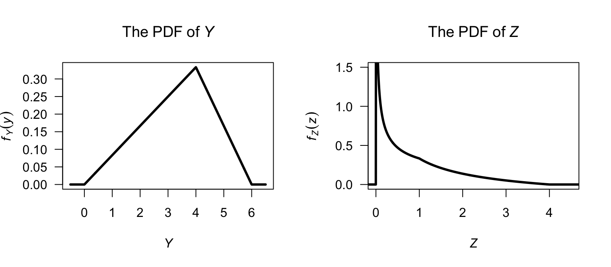
FIGURE F.72: The pdf of the transformed rvs \(Y\) and \(Z\).
Exercise 9.13. \(f_V(v) = f_T(D/v)\, {\left|\frac{dT}{dV}\right|} = f_T(D/v) D/v^2\); and so \[ f_V(v) = \begin{cases} \displaystyle\frac{D(va + v\mu - D)}{a^2\,v^3} & \text{for $D/(\mu + \Delta) < v < D/\mu$}\\[6pt] \displaystyle\frac{D(va - v\mu + D)}{a^2\,v^3} & \text{for $D/\mu < v < D/(\mu - a)$} \end{cases} \] as in Fig. F.73 (left panel).

FIGURE F.73: The probability density function for the random variable \(V\), the run velocity.
Exercise 9.14. \(f_P(p) = f_V(\sqrt{pR}) \frac{1}{2} \sqrt{R/p}\) and so \[ f_P(p) = \frac{\sqrt{R}}{\sqrt{2p\pi\sigma^2}} \exp\left\{-\frac{pR}{2\sigma^2}\right\} \] as shown in Fig. F.73 (right panel).
Exercise 9.26.
- Taking logarithms of the product: \[ \log P = \log\!\left(\prod_{i=1}^n X_i\right) = \sum_{i=1}^n \log X_i. \]
- Since \(\log X_i \sim N(\mu_i, \sigma_i^2)\) independently, and the sum of independent normal random variables is normal (with means and variances adding), we have: \[ \log P = \sum_{i=1}^n \log X_i \sim N\!\left(\sum_{i=1}^n \mu_i,\; \sum_{i=1}^n \sigma_i^2\right). \] Since \(P = \exp(\log P)\), and its logarithm is normally distributed, by definition: \[ P \sim \text{Log-normal}\!\left(\sum_{i=1}^n \mu_i,\; \sum_{i=1}^n \sigma_i^2\right). \]
- From Part 2, with \(\mu_i = 0.2\) and \(\sigma_i^2 = 0.09\) for each \(i = 1, \ldots, 10\): \[ \log P \sim N(10 \times 0.2,\; 10 \times 0.09) = N(2,\; 0.9) \] so \(P \sim \text{Log-normal}(2, 0.9)\). Then: \[ \Pr(P > \exp 3) = \Pr(\log P > 3) = \Pr\!\left(Z > \frac{3 - 2}{\sqrt{0.9}}\right) = \Pr(Z > 1.054) \approx 0.146. \] Using R:
Exercise 9.27.
- \(F_X(x) = (x + 1)^2 /4\) for \(-1 < x < 1\).
- \(F_Y(y) = y\) for \(0 < y < 1\).
- \(f_Y(y) = 1\) for \(0 < y < 1\).
- Plots not shown. 1 . The \(Y = |X|\) transformation effectively folds the left half of the distribution (\(-1 < x < 0)\) onto the right half (\(-1 < x < 0)\).
Exercise 9.29.
- Since \(A = pi R^2\), the inverse transform is \(R = \sqrt{A/\pi}\) and \(|dR/dA| = 1/(2\sqrt{\pi A}\). So \[ f_A(a) = \frac{\lambda \exp(-\lambda)\sqrt{a/\pi}}{2\sqrt{\pi\,a}} \quad\text{for $a > 0$.} \]
- Since \(A = \pi R^2\), \(A = 200\) corresponds to \(R = \sqrt{200/\pi})\):
1 - pexp(sqrt(200/pi), rate = 0.2), or about \(0.203\).
lambda <- 0.2
fA <- function(a)
{
lambda * exp(-lambda * sqrt(a/pi)) / (2 * sqrt(pi * a))
}
curve(fA, las = 1, ylim = c(0, 0.01),
from = 0.1, to = 1000,
xlab = expression(Area~(m^2)),
ylab = "Probability density",
main = "PDF of oil-spill area")
Exercise 9.28.
- \(T_a = 2531.7/V_A\) and \(|d T_A/d V_A| = 2531.7/V_A^2\); so \[ f_V(v) = \frac{2531.7}{36\sqrt{2\pi}\, v^2} \exp\left(-\frac{(\frac{2531.7}{v} - 2500)^2}{2\times 26^2}\right) \] for \(v > 0\).
- Similar to 2.
- Not normally distributed, but looks similar.
# Part 4
num_sims <- 10000
TA <- rnorm(num_sims, mean = 250, sd = 36)
TB <- rnorm(num_sims, mean = 280, sd = 36)
VA <- 60 * 42.195 / TA
VB <- 60 * 42.195 / TB
V_difference <- VA - VB
hist(V_difference, las = 1,
probability = TRUE,
main = "Estimated PDF of V_A - V_B",
xlab = "Speed difference (km/h)")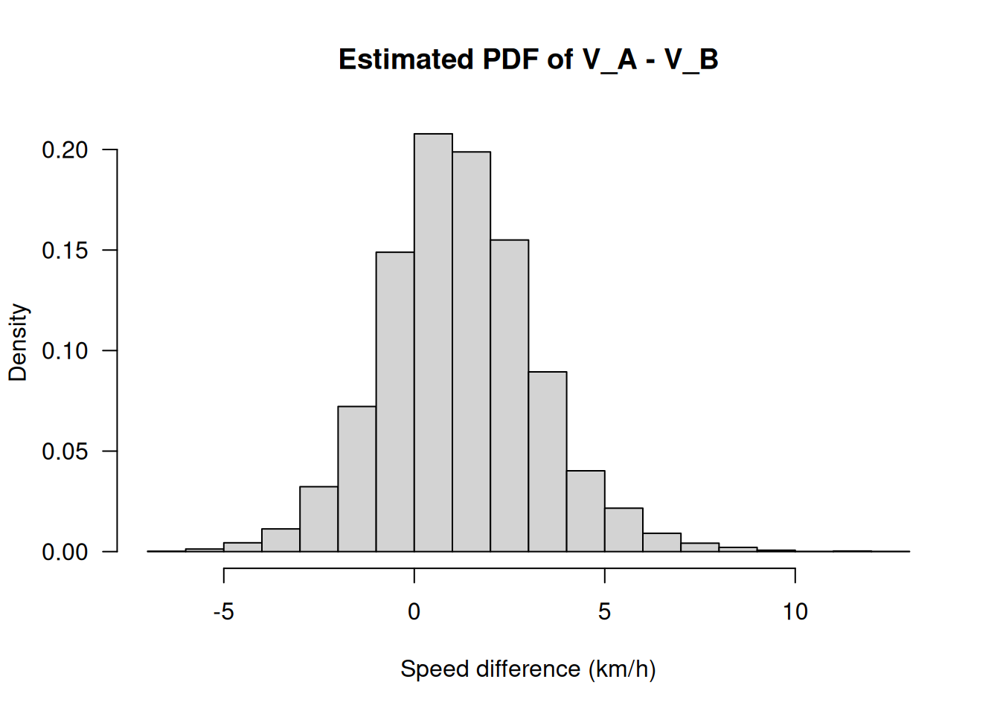
Exercise 9.30.
\(R = \sqrt{A/\pi}\) so \(dR/dA = 1/(2\sqrt{\pi A})\). Then: \[ f_A(a) = \begin{cases} (\sqrt{a/\pi} - 11) / (4\sqrt{\pi a}) & \text{for $121\pi \le a \le 144\pi$};\\ (13 - \sqrt{a/\pi}) / (4\sqrt{\pi a}) & \text{for $144\pi \le a \le 169\pi$}. \end{cases} \] for \(a > 0\). Not triangular, but looks similar.
fA <- function(a){
ans <- numeric(length(a))
i1 <- (a >= 121*pi) & (a <= 144*pi)
ans[i1] <- (sqrt(a[i1]/pi) - 11) /
(4 * sqrt(pi * a[i1]))
i2 <- (a > 144*pi) & (a <= 169*pi)
ans[i2] <- (13 - sqrt(a[i2]/pi)) /
(4 * sqrt(pi * a[i2]))
ans
}
curve(fA, las = 1,
from = 121*pi, to = 169*pi,
xlab = expression(Area~("in"^2)),
ylab = "Probability density",
main = "PDF of pizza area")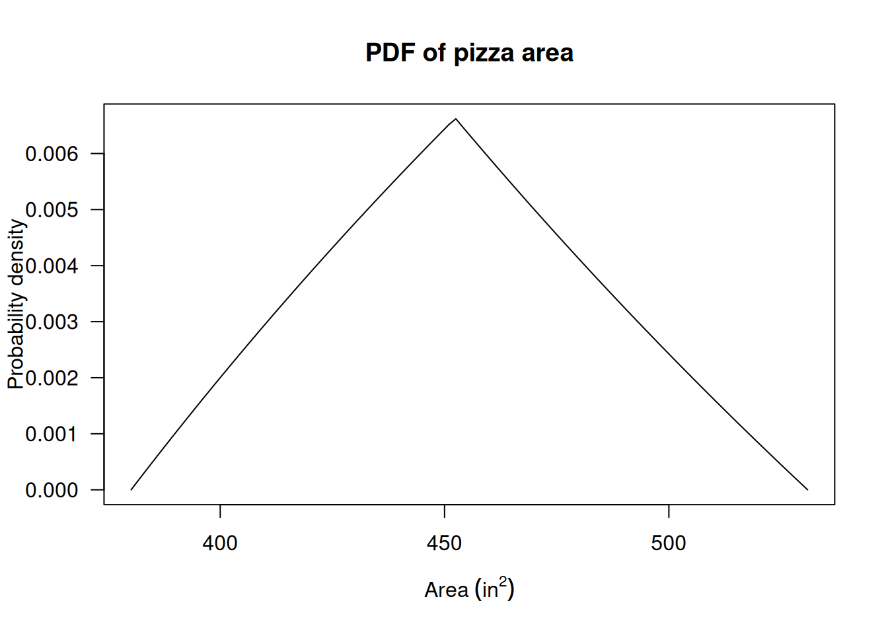
Exercise 9.31.
Write \(U = \sqrt{2gh}\) and \(|dU/dH| = g/\sqrt{2gh}\); \(f_H(h) = f_U(\sqrt{2gh}) g/\sqrt{2gh}\) in general.
- If \(U\sim N(15, 2^2)\), then \[ f_H(h) = \frac{g}{4\sqrt{\pi\, gh}}\exp\left(-\frac{\left(\sqrt{2gh} - 15\right)^2}{8}\right) \] for \(h > 0\).
- If \(U\sim\Gamma(10, 1.5)\), then \[ f_H(h) = \frac{\left(\sqrt{2gh}\right)^9\, \exp(-\sqrt{2gh}/1.5)}{\Gamma(10)\,1.5^{10}}\, \frac{g}{\sqrt{2gh}} \]
- See Fig. F.74.
- \(\operatorname{E}[U^2] = \operatorname{var}[U] + (\operatorname{E}[U])^2\), so \(\operatorname{E}[H] = (\operatorname{var}[U] + (\operatorname{E}[U])^2)/(2g)\). For the normal, \(\operatorname{E}[H] = 11.68\,\text{m}\). For the gamma, \(\operatorname{E}[H] = 12.63\,\text{m}\).
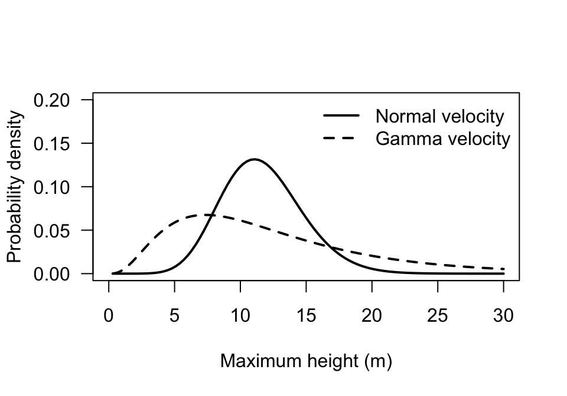
FIGURE F.74: The distribution of the maximum height.
Exercise 9.32.
- Write \(K = k/M\); then the Jacobian is \(| dK/dM| = c/m^2\) and so \[ f_M(m) = \frac{c^\alpha}{\beta^\alpha \Gamma(\alpha)} \, m^{-(\alpha + 1)}\, \exp\left(-\frac{c}{\beta m}\right) \quad \text{for $m > 0$}, \] the inverse Gamma distribution (with mean \(\operatorname{E}[M] = \beta/[k(\alpha - 1)]\)).
- The mean fuel consumption is (equivalently) \(10\ell/100\,\text{km}\), \(26.14\text{US mpg}\) or \(31.39\text{US mpg}\).
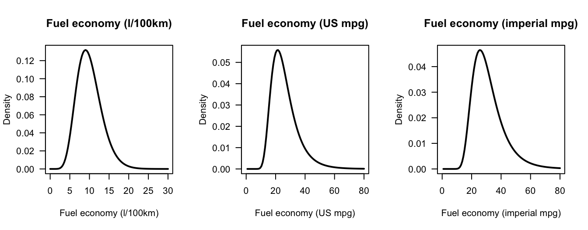
FIGURE F.75: The fuel economy distributions for a fleet of vehicles.
Exercise 9.33.
- \(s = v_0^2/(2a)\) where \(a < 0\) is the braking deceleration.
- The distribution of \(s \propto u^2\) is a non-central chi-squared distribution. The speeds and decelerations are in different units of measurements: working in m/s we use \(s = v_0^2/(25.92 a)\). \(F_D(d) = \Pr(D\le d) = \Pr(c V^2 \le d)\); then, \[ \Pr(V^2 \le d/c) = \Pr\left( -\sqrt{d/c} \le V \le \sqrt{d/c}\,\right), \] and so \[\begin{align*} F_D(d) &= F_v\left(\sqrt{d/c}\right) - F_v\left(-\sqrt{d/c}\right)\\ \text{and} f_D(d) &= \frac{1}{2\sqrt{cd}} \left[ f_v\left(\sqrt{d/c}\right) + f_v\left(-\sqrt{d/c}\right)\right]. \end{align*}\] Since \(V\sim N(\mu, \sigma^2)\), \[\begin{align*} f_V(x) + f_V(-x) &= \frac{1}{\sqrt{2\pi}\sigma} \exp\left(-\frac{x^2 + \mu^2}{2\sigma^2}\right) \left[ \exp\left( \frac{2x\mu}{2\sigma^2}\right) + \exp\left(-\frac{2x\mu}{2\sigma^2}\right) \right]\\ &= \frac{1}{\sqrt{2\pi}\sigma} \exp\left(-\frac{x^2 + \mu^2}{2\sigma^2}\right) \left[ \exp\left( \frac{x\mu}{\sigma^2}\right) + \exp\left(-\frac{x\mu}{\sigma^2}\right) \right]. \end{align*}\] This is the non-central chi-squared distribution, with mean \(\operatorname{E}[X] = \mu^2 +\sigma^2\) and \(\operatorname{var}{X} = 2\sigma^2(2\mu^2 + \sigma^2)\).
- See Fig. F.76 and Table F.3.
- See Fig. F.76 and Table F.3.
| Scenario | Braking distance from \(60\) | Braking distance from \(100\) |
|---|---|---|
| Gentle | 47.9 | 136.5 |
| Firm | 28.7 | 81.9 |
| Emergency: dry weather | 18 | 51.2 |
| Emergency: wet weather | 35.9 | 102.4 |